后训练概述
主要参照 该篇论文综述，旨在对于模型后训练有初步的了解。
概要
🔍 一句话核心主旨
“预训练”本质是让模型先在海量无标注文本中“自学”通用语言能力，再通过少量标注数据“特训”适配具体任务；其技术演进经历了从“固定词向量（静态）”到“语境感知向量（动态）”的跨越，最终由BERT确立“预训练+微调”标准范式，催生了现代大模型生态。
📖 逐层拆解与关键概念解析
1️⃣ 概念起源：为何叫“预训练”？
- 源于计算机视觉（CV）的迁移学习。CV中通常先在ImageNet上训练一个能提取通用视觉特征（边缘、纹理、形状等）的模型，再将其权重迁移到医疗影像、目标检测等下游任务。
- NLP领域沿用该思想：“预训练” = 先学通用语言规律（语法、常识、语义关联），“微调” = 针对具体任务调整参数。
2️⃣ 核心优势：打破数据瓶颈
- 传统监督学习依赖人工标注数据，成本高、规模小。
- 预训练的最大突破是可直接利用互联网海量无标注文本（网页、书籍、维基百科等）。无需人工打标签，数据规模呈指数级增长，为模型提供“语言常识库”。
3️⃣ 技术瓶颈：早期“静态”方法的局限
- NNLM、Word2vec 属于静态词嵌入（Static Embeddings）：每个词对应一个固定向量，不随上下文变化。
- 例：
苹果在“吃苹果”和“苹果发布新手机”中向量完全相同。 - 问题：无法处理一词多义、指代消解、长距离依赖等复杂语义，泛化能力弱。
- 例：
4️⃣ 破局方案：从“静态”到“动态”
- 动态预训练（Contextualized Pre-training） 的核心是：词的表示由上下文动态决定。
- BERT 通过引入
Transformer架构 +自注意力机制（Self-Attention），实现双向上下文建模（同时看左右语境），彻底解决静态向量缺陷。 - XLNet 则进一步融合自回归与双向依赖，通过排列语言建模（Permutation LM）提升长文本建模能力。两者共同推动预训练进入“动态语境时代”。
5️⃣ 范式确立与后续生态
- BERT的成功正式确立
Pre-train → Fine-tune（预训练+微调） 标准范式：- 预训练阶段：在大规模语料上通过自监督任务（如掩码预测、下一句预测）学习通用表征。
- 微调阶段：在下游任务（分类、抽取、生成等）上添加简单任务头，用少量标注数据微调。
- 该范式直接启发了后续架构百花齐放：
GPT-2：单向自回归生成路线BART/T5：编码-解码联合路线（兼顾理解与生成）- 最终演进为今天的千亿/万亿参数大语言模型（LLM）。
🧩 技术演进逻辑链（可视化梳理）
CV迁移学习思想
↓
NLP预训练目标：用无标注数据训练通用语言模型
↓
早期静态方法（NNLM/Word2vec）→ 一词一义，缺上下文感知 → 遇瓶颈
↓
动态预训练（BERT/XLNet）+ Transformer自注意力 → 语境动态表征 → 突破局限
↓
确立“预训练+微调”范式
↓
催生 GPT系列 / BART / T5 等 → 奠定现代大模型基础
🧠 后训练（Post-training）是什么？
后训练是指模型完成预训练后，进一步采用一系列技术进行优化与调整，使其更适配具体任务、业务场景和用户偏好。
在 GPT-3（1750亿参数）发布后，后训练方向的研究与工程创新显著加速。实践中，研究者通常结合以下几类方法提升模型可用性与效果：
- 微调（Fine-tuning）：利用标注数据集或任务数据继续训练，调整模型参数，使模型在特定任务上表现更好。
- 对齐策略（Alignment）：通过偏好学习、反馈优化等方式，让模型输出更符合人类价值与用户期望。
- 知识适应（Knowledge Adaptation）：注入或融合领域知识，增强模型在垂直场景中的专业性与准确性。
- 推理改进（Reasoning Enhancement）：通过训练策略和数据构造提升模型的逻辑推理、规划与决策能力。
这类能力增强路径常被统称为后训练语言模型（Post-trained Language Models, PoLMs），并推动了 GPT-4、LLaMA-3、Gemini-2.0、Claude-3.5 等模型能力的持续跃迁。
⚠️ 后训练的现实挑战
尽管后训练显著提升了模型表现，但在不进行重新训练或重大参数调整的前提下，模型对新任务的快速迁移能力仍有限。因此，如何以更低成本获得更强泛化与适配能力，依然是后训练与预训练模型（PTM）研究的核心问题之一。
📈 后训练语言模型（PoLMs）发展历史与关键节点
大型语言模型（LLMs）的演进是自然语言处理（NLP）领域的关键篇章，其中“后训练”（Post-training）方法作为核心催化剂，推动了模型从通用的预训练架构向专用、任务自适应系统的转型。这一发展历程反映了从“建立广泛语言能力”到“增强任务适配、伦理对齐、逻辑推理和多模态融合”的范式转变，其核心发展节点如下：
1. 2018年：预训练革命的破晓
- BERT 与 GPT 的发布重新定义了NLP的基准。BERT的多层双向自编码器架构擅长捕捉强大的上下文依赖（如问答任务）；而GPT的自回归设计确立了连贯文本生成的新标准。它们正式确立了“预训练+微调”（Pre-training and Fine-tuning）的基石模型范式。
2. 2019年：多任务学习的统一
- T5 发布，将各种不同的NLP任务（翻译、摘要、分类等）统一到了一个“文本到文本（Text-to-Text）”的框架下，促进了多任务学习的发展，为后训练的演进确立了坚实的基础。
3. 2020年起：参数高效微调（PEFT）与轻量级适配
- 面向有限数据及计算资源，Prefix-tuning 与 Prompt-tuning 等早期创新提出。这些技术使得模型通过修改输入或调整极少量参数即可实现多任务灵活性，在节省计算资源的同时拓宽了适用范围。
4. 2021年：强化学习与人类对齐的探索
- 引入基于人类反馈的强化学习（RLHF）：利用人类评估结果驱动模型优化输出，使其更符合人类主观偏好，极大增强了模型在真实对话交互场景下的实用价值。
5. 2022年：RLHF的成熟与逻辑推理的涌现
- 近端策略优化（PPO） 算法在RLHF中的成熟应用，提高了对齐优化的稳定性并减少了对噪声反馈的过拟合并。
- 2022年底 ChatGPT 的惊艳亮相完美展示了RLHF的变革潜力，创造了响应迅速且深度符合用户意图的大模型，进而引爆了全行业对PoLMs的研究。
- 同期，思维链（Chain-of-Thought, CoT）提示 策略成为增强模型推理能力的关键手段，鼓励模型分步输出复杂任务的中间步骤，大幅提高了逻辑推断与问题解决域的准确性与透明度。
6. 2022年-2024年：领域自适应、价值观对齐、多模态与架构演进
- 领域自适应：检索增强生成（RAG） 技术崛起，无需重新训练即可融合外部知识库，为需要最新信息的专业应用提供高度语境化的丰富输出。
- 伦理对齐优化：2023年提出的 直接偏好优化（DPO） 极大地简化了RLHF流程，通过跳过奖励建模步骤直接基于人类偏好优化模型，提升了训练效率和鲁棒性。
- 多模态拓展：视觉-语言融合模型如 PaLM-E 和 Flamingo 开创了多模态整合先河，随后 BLIP-2 和 LLaVA 进一步将这些努力拓展至医疗影像等更广泛的领域。
- 架构与计算结构效率：混合专家架构（MoE） 成为前导，其通过动态激活参数的子集，在优化计算效率的同时适应了庞大的参数规模。该范式由 Google 在2022年的 Switch-C Transformer 首创（1.6万亿参数，2048个专家）。随后的迭代如 Mixtral 以及 DeepSeek V2.5（总计2360亿参数，160个专家中激活210亿）进一步精炼了这一框架，证明了稀疏的MoE架构不仅能降低复杂任务的计算开销，还能够在扩展性与效能上媲美密集型（Dense）模型。
- 推理能力跃升：在此期间，结合 自我对弈（Self-play） 强化学习与 基于CoT的蒙特卡洛树搜索（MCTS） 技术，通过模拟迭代推理路径，为重度推理型模型奠定了理论与实践基础。
7. 2025年：从监督微调走向纯强化学习与深度系统推理
- DeepSeek-R1 等现代顶级架构的出现标志着后训练创新的又一里程碑。它打破了传统对监督微调（SFT）的严重依赖，全面拥抱了以思维链（CoT）和探索性强化学习（RL）为主导的策略。
- 典型的如 DeepSeek-R1-Zero，通过整合自我验证（self-verification）、反思（reflection）和超长CoT生成，在一个开放研究范式中证明了RL驱动带来的优越性。此外，该模型利用了知识蒸馏技术（Distillation） 将大型模型中复杂的推理模式转移到规模更小的架构中。这不仅超越了独立RL训练的限制，更确立了一个以推理为中心的可扩展新范式，为后训练方法中长期存在的计算效率与任务适应性挑战提供了极具潜力的解决路径。

🧮 后训练的数学基础：策略优化原理（PPO）
在后训练阶段中，近端策略优化（PPO, Proximal Policy Optimization）算法是基于人类反馈强化学习（RLHF）不可或缺的一环。PPO 的最大特点可以用一个字概括——“稳”。
在微调几千亿参数的大语言模型时，如果每次参数更新的步伐迈得太大，极易导致模型性能发生“灾难性崩溃”（比如突然开始胡言乱语）。PPO 正是通过精妙的数学机制限制了模型每次更新的变化幅度，确保训练过程平稳且可控。
为了通俗地理解它的工作原理，我们需要先梳理几个核心的强化学习概念：
- 状态（State, \(s_t\)）：这代表模型在做决定前看到的“环境局面”。对于大模型来说，这就是它看到的 上下文和用户提示词（Prompt）。
- 动作（Action, \(a_t\)）：模型根据当前状态做出的抉择，可以简单理解为 生成下一个词（Token）。
- 奖励（Reward, \(r_t\)）：系统（环境）对这个动作给出的反馈打分。好动作给高分，差动作给低分或扣分。
- 优势函数（Advantage Function, \(A^\pi(s, a)\)）：这个函数用来衡量“在当前状态 \(s\) 下采取具体动作 \(a\)，比平时的平均表现好多少”。 它的定义公式如下： \(A^\pi(s, a) = Q^\pi(s, a) - V^\pi(s)\) > 其中，\(Q^\pi(s, a)\) 是“采取这个动作后，未来能拿到的预期总分”，而 \(V^\pi(s)\) 就是“在这个状态下，一般情况的平均期望分数”。相减得出的就是“在这个局面下走这步棋的额外收益”。
1. 策略更新（Policy Update）：限制步伐，小步快跑
有了分数和表现评估后，怎么去调整更新模型的参数（策略 \(\pi_\theta\)）呢？PPO 使用了经典的截断目标函数（Clipped Objective Function）来进行增量式的小步更新：
如果觉得公式复杂，没关系，看看这是怎么做到的：
- 比值 \(r_t(\theta)\)：这代表了在更新前后，模型采取同一个动作的概率比值（\(\frac{\pi_\theta(a_t|s_t)}{\pi_{\theta_{old}}(a_t|s_t)}\)）。比值大于1，说明模型现在更倾向于做这个动作；反之亦然。
- 截断机制（Clip 函数）：公式中最核心的就是这个 \(\text{clip}(\dots, 1-\epsilon, 1+\epsilon)\)。它的作用就像是一个“安全阀”。如果比值 \(r_t(\theta)\) 变得太夸张（模型想因为一个很好的奖励而疯狂调整参数），这个函数会强行把变化幅度卡束缚在边界内（由超参数 \(\epsilon\) 控制，比如限制在 0.8 到 1.2 之间）。这样就保证了模型每次只是微调，从而维持训练的极度稳定。
2. 价值函数更新（Value Function Update）：练准鉴赏眼光
要想上面的更新顺利进行，必须要有一个好裁判，即价值函数 \(V_\phi\)。这个价值函数的任务就是去估算处于某个状态时最终能得多少分。为了让估算越来越准确，也会给它设计一个修正公式：
简单说：这个公式就是让模型的预测估算分数 \(V_\phi(s_t)\) 和真实拿到的累计得分 \(R(s_t)\) 之间的误差（均方误差）越小越好。估算越准，也就是“眼光越毒辣”，上方策略更新时的优势函数 \(A^\pi\) 就计算得越精确，形成一个正向循环。
💡 核心一句话总结： PPO 就像一个谨慎的教练，通过“计算比值”并加上“Clip 安全阀限速”，确保大模型在根据人类反馈（RLHF）去调整自身的行为（策略）时，每次只做稳妥的微调，避免步子迈得太大而导致性能崩坏。
🤝 后训练的对齐基石：基于人类反馈的强化学习（RLHF）原理
刚才提到了 PPO 是为了稳定更新，那么更新的目标和规则究竟从何而来呢？这就是基于人类反馈的强化学习（RLHF, Reinforcement Learning with Human Feedback）要解决的问题。
RLHF 是一项让模型“懂事”、与人类偏好对齐的关键机制。它在学习过程中直接引入人类产生的反馈，也就是构建一个能显式捕捉人类喜好的奖励函数（Reward Function），从而让模型更好地适应用户的实际期望和真实世界的应用场景。
为了更清晰地理解它的工作逻辑，我们可以从大模型的根本定义和终极优化目标切入：
1. 大模型生成的本质（定义篇）
我们需要先回归语言模型（用符号 \(\rho\) 表示）的本职工作：它其实就是在给一个词汇库（Vocabulary, \(\Sigma\)）里的词语预测并输出概率分布。
模型 \(\rho\) 生成一段长序列的过程，实际上是基于前面所有已生成的词（从 \(x_0\) 到 \(x_{k-1}\)），来计算下一个词 \(x_k\) 出现的条件概率（Conditional Probability Distriburion）。这个过程串联起来，就形成了最终的回答。用公式表达就是：
通俗理解：大模型的内在机理就是一个依靠算力与规律驱动的“超级文字接龙器”。给定一个前置语境，它通过概率分布猜出下一个最合适的字是什么，一个接一个地吐出（例如文本摘要任务就是根据输入语料接着去续写摘要）。
2. 我们究竟要优化什么？（目标函数篇）
有了这个“文字接龙器”后，如果不加以约束，它只会生成基于原初训练数据上最“高概率”的话，而不是最“讨喜或安全”的话。
在 RLHF 中，我们会把最初的模型 \(\rho\) 拿来作为一个初始策略，我们将优化后的新模型称为策略模型（Policy, \(\pi\)）。 同时，系统中会存在一个类似于“阅卷导师”的奖励函数 \(R(x, y)\)。只要用户给了一个输入/提示词（\(x\)），模型基于输入给出了对应的回答（\(y\)），这位导师就会根据人类的价值标准和倾向，给这对 \((x, y)\) 打出一个分数（一个具体的数值，Scalar value）。
最后，我们的终极目标就是：让大模型通过不断进化这个策略 \(\pi^*\)，使得拿到“预期平均最高分”的概率最大化。 用精炼的目标函数公式表达如下：
公式拆解解析：
- \(x \sim D\)：这代表所有的输入（比如用户的提问）是从真实数据分布 \(D\) 中采集来的。
- \(y \sim \pi(\cdot \mid x)\)：这代表我们得到的回答 \(y\) 完全是基于输入 \(x\) 由现有策略 \(\pi\) 生成的。
- 整个公式也就是在说：我们要找到一个极度聪明的接话策略 \(\pi^*\)，让在任何现实语境下生成的回答，都可以获得最高的评估回报 \(R\)。
💡 核心一句话总结： 如果说原生的大模型是一个只会死记硬背的“文字接龙机器”，RLHF 则是引入一位懂人类喜好的考官（Reward），通过不断地给回答进行评估打分，引导并强迫学生（大语言模型）改变答题套路（Policy \(\pi\)），让它最终在符合人类审美的考场上永远拿到最高的平均分体系。
⚡ 化繁为简的对齐新贵：直接偏好优化（DPO）原理
前面提到的 RLHF 虽然效果显著，但流程十分繁琐：你需要先训练一个专门的“考官”（奖励模型），然后再用强化学习算法（如PPO）去调整模型参数。为了解决这种复杂性，直接偏好优化（DPO, Direct Preference Optimization） 诞生了。
DPO 的核心思想极其霸道：直接丢掉那个独立的“考官”（奖励模型），把人类用“两两比较”（Pairwise Comparisons）选出的偏好，直接塞进大模型的优化过程中。
1. 目标函数（Objective Function）：把奖励藏进策略里
在传统的 RLHF 中，我们希望找到一个能拿到最高分（最大化奖励 \(r\)）的最佳策略 \(\pi_r\)。DPO 证明了一个数学上的等价关系（在带有原始模型偏移惩罚的情况下）：
如果觉得头晕，看看它表达的直白含义：
- \(\pi_{\text{ref}}(y \mid x)\)：这是我们进行后训练前那个“老实巴交的原版模型”（参考策略）。
- \(\exp \left( \frac{1}{\beta} r(x, y) \right)\)：因为人类给了高分奖励 \(r(x, y)\)，所以在这个方向上增加生成的概率（\(\beta\) 是温度系数，控制调整的力度）。
- \(Z(x)\)：是一个让所有概率加起来等于 1 的配平归一化项（配分函数）。
最神奇的地方来了：通过这个公式，我们可以反向把奖励 \(r(x, y)\) 解解出来，用模型的概率去替代它！ 这意味着我们彻底不需要单独去练一个奖励函数了！
2. 偏好模型（Preference Model）：直接在比较中学习
人类的反馈通常是：“针对同样的问题，回答 A（\(y_1\)） 比回答 B（\(y_2\)）更好”。我们用符号表达就是 \(y_1 \succ y_2\)。
DPO 借用了一个叫 Bradley-Terry 的经典比较模型，把上面推导出的关系带入，得出了最佳策略 \(\pi^*\) 下，回答 A 胜过回答 B 的概率：
公式大白话解析：
- \(\log \frac{\pi^*(y \mid x)}{\pi_{\text{ref}}(y \mid x)}\) 其实就是在算：“新模型（\(\pi^*\)）对这句话的倾向程度，比老模型（\(\pi_{\text{ref}}\)）提高了多少”。这就是隐含在这个回答背后的“奖励”。
- 公式将 回答 \(y_1\) 的进阶幅度 和 回答 \(y_2\) 的进阶幅度 进行了减法对比。
- 整个公式其实就是一个
Sigmoid概率函数：如果模型发现人类更喜欢 \(y_1\)，它就会直接在底层参数上“拔高 \(y_1\) 的生成概率，并打压 \(y_2\)的生成概率”。
💡 核心一句话总结： 相比于 RLHF 还需要费力请一个“独立的考官”（Reward Model）来打分，DPO 就像是直接让模型自己做“二选一”的选择题，直接看答案（人类的比较偏好）来修改自己的出牌几率，既大幅砍掉了训练成本，又达到了对齐的目标。
🎯 效能与上限的双重突破：组内相对策略优化（GRPO）原理
如果你了解了上文提到的 PPO（近端策略优化），那你一定会对它的资源消耗印象深刻：标准的 PPO 为了评价生成的内容好不好，不仅需要训练当前的大模型（Actor），还需要额外运行或训练一个体量相当的评论家模型（Critic Model，即价值函数）来计算基准线（Baseline）。
双倍的模型，意味着极其恐怖的显存占用和训练成本。为了打破这个瓶颈，DeepSeek 在其解决数学推理的里程碑之作 DeepSeekMath 中，创新性地提出了 组内相对策略优化（GRPO, Group Relative Policy Optimization） 算法。
GRPO 的核心创新在于：一刀切掉庞大的“评论家模型（Critic）”，直接让多份不同的回答“组内比高低”来决定奖励基准，从而大幅节省训练资源！
1. 概念定义：抛弃绝对分数，只看群内排名
在原初的 PPO 中，优势函数 \(A^\pi(s,a)\) 是通过 \(Q\)值（动作预期奖励）减去 \(V\)值（状态全局基准）计算得来的，而那个 \(V\)值 恰恰是那个硕大无比的“评论家模型”算出来的。
GRPO 取消了这种“绝对基准分”，它做了什么呢？ 每当提出一个问题 \(q\)，它会让目前的老模型（老策略 \(\pi_{\theta_{old}}\)）连续回答 \(G\) 次，生成一组各不相同的答案 {\(o_1, o_2, \dots, o_G\)}。 然后在这一小撮答案内部，基于奖励函数直接给出相对优势（Relative Rewards），即：哪个回答在同组兄弟里最拔尖，优势分数就是正的；哪个拉胯，得分就是负的；这就巧妙地构建了一个零成本的自带基准线！
2. 目标函数（Objective Function）：在组内优化中平稳前行
有了组内生成的这批回答后，GRPO 的优化目标公式长这样：
看着这长得仿佛一整屏那么长的公式别慌，它和 PPO 的思路一脉相承，让我们分块大白话拆解：
- 大前提 \(\mathbb{E}\) 与 \(\sum\)：拿到一个问题 \(q\)，让旧模型吐出 \(G\) 个不同的回答，然后再到每一个回答里的每一个词（共 \(|o_i|\) 个词）去细算得分。
- 比值与 \(\text{clip}\) 截断：核心中这堆带中括号的部分，和当年 PPO 的配方完全一样！ \(\frac{\pi_\theta}{\pi_{\theta_{old}}}\) 算的是新旧模型吐出同一个词的概率比值。最后也同样带着 \(clip([...], 1-\epsilon, 1+\epsilon)\) 的限速安全阀，保证步子别跨太大，防崩溃。
- 主角 \(\hat{A}_{i,t}\)（组内相对优势分）：这里就是 GRPO 的灵魂。这个优势不再靠庞大的“评论家模型”（Critic）苦苦计算，而是纯纯根据同组里的这 \(G\) 个答案评分算出来的（例如，在所有答案里做标准化 z-score 处理）。
- 尾巴惩罚 \(-\beta \mathbb{D}_{KL}\)：为了防止模型为了迎合奖励刷分而彻底变成了个“马屁精”（忘记了本来该怎么说正常的话），公式最后加了一个 Kullback-Leibler (KL) 散度惩罚。它要求无论怎么更新优化（\(\pi_\theta\)），都不要偏离最初那个老实干活的参考模型（\(\pi_{\text{ref}}\)）太远。
💡 核心一句话总结： 如果说传统的 PPO 是需要花钱多请一个“校外评委（Critic 模型）”来打分，GRPO 则是直接让模型自己面对同一考题“写好多份不同的考卷”，然后在自己的考卷里“内部排座次（组内对比）”。只奖励第一名，惩罚最后一名。 这在一刀砍掉翻倍显存消耗的同时，完美保留了安全阈值平稳更新的本真！
🛠️ 后训练微调范式：让大模型“术业有专攻”
除了对齐人类偏好的 RLHF/DPO/GRPO 这些高端操作之外，微调（Fine-Tuning）才是将预训练语言模型（LLMs）改造为在特定专业领域得心应手的核心技术基石。预训练教给了模型“通用的世界知识”，而微调则负责跨越这种通用知识与专业领域需求之间的鸿沟。
微调的整体范式主要拆分为三个流派：
- 监督微调（Supervised Fine-Tuning, SFT）：利用带有标准答案的人工标注数据直接拉升特定任务的精度。
- 自适应微调（Adaptive Fine-Tuning）：通过“指令微调（Instruction tuning）”和“基于提示的方法（Prompt-based methods）”来定制化模型行为（比如 Prefix-tuning）。
- 强化微调（Reinforcement Fine-Tuning）：就是前文所讲的融入强化学习，靠奖励信号动态迭代打磨输出。
下面，我们将重点解析在所有开源与闭源大模型开发中，绝对不可绕过的第一步——监督微调（SFT）。
1. 监督微调（SFT, Supervised Fine-Tuning）究竟是什么？
什么是 SFT？一言以蔽之：给大模型喂“题库+标准答案”，让它直接修改大脑里的参数肌肉记忆，学会特定的答题套路。
- 与指令调优（Instruction Tuning）的区别：如果只是写一段清晰的 prompt 去引导基础模型，那不叫 SFT（因为底层参数没变）。SFT 是拿真刀真枪的“人工标注数据（Annotated Data）”直接开膛破肚修改底层参数，这使得它既能在特定任务中做到极其精准和理解上下文，又不会把原来预训练学到的广泛能力轻易弄丢。
- 消除特定领域数据的依赖隔阂：因为预训练吸收了海量泛语言模式，SFT 只需要喂相对少量、但极高质量的“行业秘卷”，模型就会突然开窍。
- 模型选型的差异：在这个过程中，如果是算力和资源拮据且数据量较少，像 T5 这样的小模型性价比极高；而如果是面对极度复杂、数据丰沛的任务时，像 GPT-4 这种大容量的巨无霸更能爆发出碾压般的优势。
2. SFT 必修课：高质量数据集的“炼金术”
在 SFT 领域有一句名言叫“Garbage In, Garbage Out”（垃圾进，垃圾出）。构建一个高质量的数据集可谓是微调成功的最关键命脉。它能分为两步：
第一步：数据集的构造（Construction）
一个标准的 SFT 题库集合（\(D\)）通常表现为一个个配对：
- \(I_k\) = 指令（Instruction）：比如“请帮我总结下面这段话的核心思想。”
- \(X_k\) = 实例回答（Instance）：一段完美的标准总结。 将它们绑在一起，就是要让大模型看破这其中的门道（Pattern），并在未来自己创造相关的输出。
延伸技术：如果穷人没有那么多人工去写标准答案怎么办？业内有一个著名的方法叫 Self-Instruct（自我指令），它可以让聪明的大模型自己去“左手倒右手”，合成大量的新指令和回答对。为了避免合成的题库全是重复的废话，还会用比如 ROUGE-L 等相似度算法来过滤，保持“题目的多样性”。
第二步：筛选去重与提纯（Screening）
好题库不能有错题。筛选环节就是要保证只有极高品质的指令和答案能够留存到最终的数据集中。 我们需要一个类似于“质检员”的评分筛选函数 \(r(\cdot)\)，对每一对 \((I_k, X_k)\) 打分：只有当它达到某个用户设定好的及格线 \(\tau\) 时，才会被保留到提纯后的精选数据集 \(D'\) 中。
【实战案例剖析】如何当一个好质检员？ 在业内，有一个非常出名且量化的筛选指标叫 指令跟随难度（IFD, Instruction Following Difficulty）。它的计算公式长这样： \(r_\theta(Q, A) = \frac{\sum_{i=1}^N \log P(w_i^A \mid Q, w_1^A, \dots, w_{i-1}^A; \theta)}{\sum_{i=1}^N \log P(w_i^A \mid w_1^A, \dots, w_{i-1}^A; \theta)}\) 看着复杂，大白话就是算个比值：分子是“模型在看见了指令 \(Q\) 的提示后，顺利写出完美标准答案 \(A\) 的概率”；分母则是“模型根本没看指令 \(Q\)，纯靠自己瞎猜写出完美答案 \(A\) 的概率”。 通过对比这两个概率的比值系统就能犀利地判断出：这个指令（题目）到底起到了多大的“提示和引导”作用？如果无论给不给指令，模型生成答案的概率都差不多（甚至更糟），那说明这道指令空洞无物、毫无引导价值；一旦它低于及格线 \(\tau\)，这组废题就会被直接“踢出局”。
第三步：题库的评估考核（Evaluation）
把质量低下的“垃圾题目”踢掉后，为了公正地检验大模型刷完这套题库到底提升了多大的能力，研究者还会从精选后的数据集 \(D'\) 里，独立抽调出一个最高水准的子集（\(D_{eval}\)）来作为专门的 考平基准测试卷（Benchmark）。
在过去，大家习惯用传统且笨重的方法（比如用 少样本 GPT Few-Shot 去跑评测，或是弄一套极其复杂的微调评估策略）来考校，但这太烧资源、极其耗算力和时间。 这其中，一种更讨巧高效的路线被称为 指令挖掘（Instruction Mining）。它抛弃了“真刀真枪跑算力去评测”的老路，转而采用一系列线性的轻量化质量规则和相关的统计学指标（比如“这套题的标准回答长度长不长”、“这套题是否能从额外的一个奖励模型那里拿到很高的平均分”等），通过快速、精准地衡量大模型的生成数据关联表现，从而确认目前手抓的这整个题库确实是个“极品题库”。

💡 核心一句话总结： 微调（SFT）的“炼金术”，就是给已经接受完“九年义务教育”（大模型预训练阶段）的大模型发一摞定制版的“五年高考三年模拟”（SFT数据集）。在这个过程中我们需要先大面积编题，接着用 IFD 质量指标 像漏斗一样筛掉“全是废话”的劣质题，最后用高效的 指令挖掘算法 核验筛选出最优秀的考试大纲。模型只有痛定思痛去刷这套极致提纯的题库，改变肌肉记忆（底层参数），才会从通识之才正式挂帅成为某个垂直细分领域的“做题宗师”！
3. SFT 的实战训练过程：用“交叉熵”向标准答案看齐
题库准备完毕，真正开始刷题的训练过程（Process of SFT）是怎么运作的呢？
我们知道，模型最开始只是通过大规模、无监督的预训练（比如读了无数本书和网页），获得了一个“通用的世界知识储备”。到了微调阶段，我们需要把模型之前学到的通用特征，跟当前应用场景的明确要求（标注数据）对齐。
大模型到底是怎么知道自己“答对”还是“答错”的？这就不得不提微调阶段最常使用的目标函数——交叉熵损失（Cross-Entropy Loss）。
以一个分类任务（共 \(N\) 个题目，每个题目有 \(C\) 个类别选项）为例，模型每次做题的“损失得分”计算公式如下：
公式大白话解析：
- \(x_i\)：这道题（输入样本）。
- \(y_{ij}\)：标准答案（True label）。如果正确答案是 \(j\) 类，这个值就是 1，否则是 0。
- \(P(y_j \mid x_i; \theta)\)：当前底子为 \(\theta\) 的模型，看了题 \(x_i\) 后，认为答案是 \(j\) 类的预测概率。
- 整个公式在干嘛？：它其实就是一个“打假机器”。当标准答案要求必须是 \(j\) 时（\(y_{ij}=1\)），如果大语言模型给出的 \(j\) 类概率非常低，公式算出来的“损失值（Loss）”就会疯狂飙升。
- 优化的核心目的，就是尽最大努力降低这个损失（Minimizing the loss function），强迫模型在参数更新的过程中，把正确选项的预测概率无限拉高，跟标准答案（Ground-Truth）完美重合。
【典型案例体会】： 以经典的 BERT 模型为例。它在预训练阶段“博览群书”（吃下了茫茫多的 BooksCorpus 和 Wikipedia 数据），什么都懂一点。 到了 SFT 阶段，研究人员给它喂入专门的 IMDB 电影评论数据集（比如要求分辨好评/差评）。在损失函数的“大棒”与“胡萝卜”驱使下，BERT 就调动起它庞大且广泛的语言特征，精准化身为一个专门搞“情感分类”和“问答”的专业评委！
💡 核心一句话总结： SFT 的实际训练过程，就是用交叉熵损失函数充当一套铁面无私的“阅卷系统”，它死死盯着你做出的预测概率与标准答案之间的偏差。偏差越大，“罚款（Loss）”越重。模型为了降低罚款，只能被迫修改内在参数，最终完美地迎合目标任务！
4. 从头到脚的重塑：全参数微调（Full-Parameter Fine-Tuning/FFT）
讲完了 SFT 的运作原理，我们不可避免地要面对一个现实问题：模型动辄有几百上千亿个参数，微调的时候一定要全部一起改掉吗？
这便引出了 SFT 中最“正统”也是最“重型”的流派——全参数微调（Full-Parameter Fine-Tuning）。 顾名思义，它和后续名声大噪的参数高效微调方法（如 LoRA 或 Prefix-tuning 这种只挑一小部分参数“打局部补丁”的讨巧做法）截然不同，它要求在微调过程中对大语言模型所有的参数进行全面更新。
为什么要选这条“苦日子”？
虽然调整全部参数听起来很笨重，但在那些对精度要求极其严苛、容错率极低的领域（比如专门看心电图出医疗诊断、或者严谨审核法律合同的场景），所谓的局部修补往往触达不了那个苛刻的性能天花板。只有全参数微调这种“大力出奇迹”的硬核方式，才能发挥出模型的最优性能。 一个最著名的里程碑式案例就是 从 GPT-3 到 InstructGPT 的进化，OpenAI 就是头铁地直接使用专门的指令数据集对整个庞大的参数集进行了极其昂贵的全参数微调，成就了让整个硅谷震动的极佳表现。
微调的底层逻辑算法：向着山谷进发
在这个过程中，底层数十亿乃至千亿的参数是怎么一点点发生蜕变的？它的基本参数更新法则（梯度下降）如下：
公式大白话解析：
- \(\theta_t\)：代表模型这一小阶段当前的数学参数状态（所在的坐标）。
- \(\nabla_\theta L(\theta_t)\)：代表了刚才提到的损失函数（误差罚款）在当前位置的“梯度”。你可以把它理解为在这个位置上找到让误差下降最快的最陡峭的一条下坡路。
- \(\eta\)：代表学习率（Learning Rate），也就是决定了这一次调整（改错）迈出的步子有多大。
- 整个公式的生动图景就像是在“蒙眼下冰山”：为了降到真正的谷底（即误差最小，答案最准），模型每次都在当前位置摸索出一个倾斜下坡的方向，然后稳定地迈出一步（\(\eta\)），最终走到下一个性能更好的位置（\(\theta_{t+1}\)），循环往复，直到成功抵达山谷！
难以承受的“算力刺客”与空间救场技术
全参数微调最大的痛点就是极其昂贵。如果要微调一个650亿参数（65B）的模型，因为要同时更新所有东西，不仅要拉起模型本身，这中间产生的激活值（Activation）、梯度映射（Gradients）还有优化器运行状态等，会轻轻松松吃掉超过 100GB 的 GPU 显存，绝大多数普通机构和实验室根本不可能跑得起来。
为了打破这种严苛的物理限制，强行将大象塞进冰箱里，研究者们引入了一系列“省显存黑科技”：
- LOMO 等内存优化技术：大幅削减梯度计算和优化器状态占用的峰值显存印记。
- 混合精度训练（Mixed Precision Training）：不再全程死板地使用极度消耗带宽的精确浮点数（FP32），而是适时改用或穿插低精度浮点数来运算。
- 激活重计算（Activation Checkpointing）：不再把过程中的海量中间缓存死死捏在高速内存里，而是释放出来，等到后来算反向传播需要用时再去重新临时算一遍（即用时间去换极珍贵的空间）。 正是诸如此类的魔法，使得即使在服务器硬件资源拮据的环境中，也能支持这种庞然大物进行彻底的全身参数重铸。
💡 核心一句话总结： 全参数微调（FFT）就像是一场耗资巨大的“拔筋洗髓池”大试炼。虽然它因为要推着万亿参数“下山找最低误差解”而极为消耗显卡内存与算力，但在医疗、法律等不容半丁点差错的精密专业里，只有靠这种推翻全部参数重新洗牌写到底的硬汉派打法（配合省显存黑科技辅助），才能榨干大模型的最后一点潜能。
5. 灵活懂你的魔法：自适应微调（Adaptive Fine-Tuning）
前文讲完了“粗暴硬核”的监督微调（SFT）和全参数微调，接下来我们换个口味，看看更平易近人的自适应微调（Adaptive Fine-Tuning）。
这种微调方法的核心目标，是为了让预训练模型更好地响应用户千奇百怪的具体需求，并处理更广泛的复杂任务。它试图跳出暴力的参数推翻，转而引入“额外线索”（比如任务指令或提示词）来灵活拿捏大模型的最终输出。可以说，它是在给底层逻辑有些死板的模型装上一个“智能沟通接口”。
这个流派里最赫赫有名的两大法宝是：指令微调（Instruction Tuning） 和 基于提示的微调（Prompt-based Tuning）。正是这两个战术，让原本只懂接龙的大模型仿佛瞬间听懂了人话，拥有了千变万化的行动力。
微调图解：大模型是怎么学会听口令的？
如果我们要看清楚大名鼎鼎的“指令微调”流水的全过程，可以参照业界的经典图解（Workflow of Instruction Fine-tuning），分作两大步骤：
第一步：构建“听口令”的实战题库（Step 1: Instruction Dataset Construction）
想让模型乖乖听话，就得给它备好海量的“人类发号施令，它完美作答”的训练案例。去哪凑齐这些语料呢？目前主流玩法有两条支线：
- 老树开新花（模板改造法）：拿一堆以前存好的带有标准答案的老文本（Annotated Text），写几个漂亮的“框子（Template）”，用写代码或者批处理的方式，直接把老文本硬生生地套进去，瞬间包装出大批类似“读完这段话，回答我它是不是很生气：[原文本]” 的伪装指令。
- 大哥带小弟（大模型繁衍法）：纯靠人工写太累，索性只丢给机器寥寥几个最基础的“种子指令”（Seed Instruction）。然后扔给像 ChatGPT 这样聪明绝顶的超级大脑去“无性繁殖”，令它发挥恐怖的想象力裂变出成千上万、形形色色的衍生命令（More Instructions）。
通过这两条路径左右开弓，海量的“指令集大军”集结完毕，一个高质量的“口令题库”就诞生了。
第二步：开始指令洗脑特训（Step 2: Instruction Tuning）
拿到了刚出炉的热门题库后，真正的魔法便开始了。 将一台只会依靠统计学概率去盲目做“文字接龙拼词”的基础大模型（Base LLM）送上训练桌。在经历了这套饱含各式限定命令的题库轮番洗礼和微调后，这台机器完成了不可思议的进化换代，正式出关成为能听懂各种刁钻长句的微调后完成体大模型（Fine-Tuned LLM）——这也就是后来我们人手一个、像 Siri 一样随叫随答的聊天助手的最终成因。
💡 核心一句话总结： 如果说原生的大语言模型是一个饱读诗书却完全不懂如何沟通的“书呆子”，自适应微调（指令微调） 就像是给它安排了一场密集的“职场沟通礼仪集训班”。通过不断喂食含有大量带有“帮我做XX”祈使句的数据，硬生生把它调教成了一个只要指令一给、马上就能秒懂你心意的AI打工人。
6. 深入解析：指令微调（Instruction Tuning）的核心机制与效能关键
在上文中我们简要提到了“指令微调”，它究竟是如何从根本上改变模型行为的？根据综述前沿的梳理，指令微调（Instruction Tuning）的核心在于通过特定构造的“指令数据集”来特训基础大语言模型（Base LLM），从而大幅提升模型在多种甚至未见过的任务和领域中的泛化能力（Generalization）、灵活性与准确性。
从 GPT-3 到 InstructGPT，再到 GPT-4，这种技术展现了在“跟随指令”及意图理解方面惊人的提升效果。要最大化发挥这项技术的潜能，其核心机制与效能关键可以归纳为以下几点：
关键一：如何构造高质量的指令？
传统的 NLP 数据集通常只是死板的“输入-输出”对（比如输入一段英文，标出其情感极性）。在指令微调中，研究者需要将这些传统数据集（如文本分类、机器翻译、摘要抓取等）进行转化（Transformation），包装成自然语言的指令架构。一条合格的微调指令通常包含四大要素：
- 任务描述（Task Descriptions）：明确告诉模型你要干什么。
- 输入示例（Input Examples）：提供待处理的具体前提内容。
- 预期输出（Expected Outputs）：给定的标准答案。
- 示范说明（Illustrative Demonstrations）：有时还要附带解题范例。
如果人工改写真实数据太费力，还可以借助 Self-Instruct 等自动化扩增技术生成额外的指令-输出对，以此来极大丰富数据集的任务多样性（Diversity）。
关键二：数据集的“广度”与“清晰度”
指令微调的效果并不完全由强推数据量决定，而是高度依赖于指令数据集的质量与广度（Quality and Breadth）。
- 广泛的覆盖面：高质量的数据集必须囊括多种语言、形形色色的垂直领域以及截然不同的任务复杂度。只有平时“见多识广”，模型才能在面对全新任务时游刃有余。
- 清晰性与条理：给出的指令越是结构分明、表意清晰，模型越能准确捕捉并在底层学习到正确的任务范式。
关键三：引入“思维链”攻克复杂推理
在给出示范说明时，为了让模型不仅学会表面上的答题，还能拥有深度思考的能力，引入 思维链提示（Chain-of-Thought prompting, CoT） 是极具价值的。通过在微调示范中明确展示分步推导的过程，可以显著提升模型在面对数学计算、逻辑推断等复杂推理任务时的跨越式表现。
关键四：任务分布的“雨露均沾”
如同不能让偏科的学生只做一种题型，在微调阶段必须要保证任务分布的均衡（Balanced Distribution）。
- 如果某类难度极低的任务（如翻译或闲聊）数据量占比过高，模型就会严重过拟合（Overfitting），而在遇到其他任务时表现出断崖式下跌（能力衰退）。
- 为了解决数据量严重不平的问题，确保各任务对模型参数调整起到公平的贡献，研究者们通常会引入 按比例的任务采样（Proportional Task Sampling） 或者在计算误差时依靠 加权损失函数（Weighted Loss Functions） 等技术硬性将训练权重配平。
💡 核心一句话总结： 指令微调（Instruction Tuning）不仅是把死板的传统数据重塑为包含“任务描述和示范”的自然交互句式，更是通过引入思维链（CoT）拔高智商、保障语言领域的广度覆盖，并依靠采样抽权技术精心调配各类任务的占比，最终全方位打通大模型的泛化任督二脉，让它能够真正融会贯通、举一反三！
7. 四两拨千斤的魔法：Prefix-Tuning（前缀微调）与轻量化适配
在前文提到的全参数微调（FFT）固然性能强悍，但动辄需要极其庞大的显存与算力。为了让研究者和开发者能够“用小刀锯大树”，参数高效微调（Parameter-Efficient Fine-Tuning, PEFT） 应运而生。
这其中的经典代表作就是 Prefix-Tuning（前缀微调）。它的核心策略是：冻结（锁死）大模型里面海量且昂贵的核心参数，仅仅去训练一小截“虚拟的提示词向量（连续向量）”。
Prefix-Tuning 是怎样施展魔法的？
你可以把 LLM 的 Transformer 架构想象成一栋有几十层高的大楼。 如果用传统的 Prompt Tuning（提示微调） 做法，我们只是在一楼的大门口（Input Embedding层）强行加上一句明文提示：“请帮我翻译成法文：”。 而 Prefix-Tuning 的做法截然不同且更深入：
- 它会生成一串连贯的向量（Prefix Vectors），并将这些被称为“前缀”的向量深深地插进大楼的每一层（每一层 Transformer）里！
- 这些前缀向量本身并没有具体的英语或中文单词对应，它们是在多维空间里的纯数字（虚拟 Token）。但它们却像是一套“特定任务的脑电波”，能够从内到外地引导模型专注于当前的任务（比如情感分类）。
- 在整个训练过程中，基础大模型的主体参数是绝对不允许发生任何改变的。模型只会根据每次产生的误差，不断地琢磨并微调那几段插进去的“前缀向量”。
训练时的“障眼法”：重参数化技巧（Reparameterization Trick）
在研究中发现，如果直接去暴力修改这些前缀向量，训练过程会像坐在过山车上一样极其不稳定，性能也可能崩盘。 为了稳住这匹烈马，研究者加入了一个讨巧的“降维打击”：
- 先不直接碰前缀向量，而是拿出一个体积极小的 多层感知机（MLP，全连接神经网络）。
- 通过训练这个小 MLP 模块，让它计算后“映射/生成”出我们需要的前缀参数。
- 训练过程由此变得丝滑平稳。当彻底训练成功，前缀向量被完美定型后，这个作为中介的小 MLP 就会被毫不留情地一脚踢开（直接丢弃），只留下那些宝贵的“前缀”与大模型共同工作。
横向对比与后续进化：P-Tuning v2
相比于只能在最前端输入层做文章的传统 Prompt Tuning，Prefix-Tuning 因为是将触角伸到了模型的每一层深处，因此展现出了更强的数据拟合与表达灵活性，即实现了“极其少数且高效的参数调度”。
沿着这个轻量且深入的思路，后续还发展出了大名鼎鼎的 P-Tuning v2：
- 它同样强调在每一层的 Transformer 架构中引入这些带有意图的 Prompt 向量，尤其是专门为了自然语言理解任务（NLU）（如阅读理解、语义分析）而优化。
- 更进阶的是，它充分利用了多任务学习（Multi-task Learning）的思路。这意味着它可以把从不同任务中总结出的“前缀经验”跨任务共享（Shared Prompts）。这种方法在面对不同的参数规模下，都展现出了非凡的模型性能拉升。

💡 核心一句话总结： Prefix-Tuning（前缀微调） 的绝妙之处在于，它彻底锁死了基础大模型的庞大脑容量（不改变核心参数），而是通过在模型的每一层插入一小截能被反复训练优化的“虚拟提示向量”。这仅仅花费了极低比例的参数训练成本，就成功牵着庞然大物的鼻子走，实现了在多种特定任务间的高效切换与完美表现！
8. 更极致的输入层优化：Prompt-Tuning（提示微调）体系
与 Prefix-Tuning 将虚拟向量狠狠插入模型每一层深处的做法不同，Prompt-Tuning（提示微调） 走了一条更加“原教旨主义”的极简路线：坚决不碰模型内部的任何结构，所有的微调工作只在最开始的“输入层（Input Layer）”完成。
它的核心思路是：与其花大精力和算力去调整模型的几百亿核心参数，不如给输入数据前头加一段可以被训练的“软提示向量（Soft Prompt Tokens）”。
Prompt-Tuning 的运作机理
在传统的“硬提示（Hard Prompting / Discrete Prompting）”中，我们是用具体的词语去引导模型，比如写上“翻译成法语：”。而在 Prompt-Tuning 体系中：
- 引入了无具体外在表现的 软提示嵌入（Soft Prompt Embeddings），它可以是不受限制格式的连续向量，也可以是挂在最前面的前缀（Prefix）。
- 在送入完全被冻结（Frozen）的预训练大模型之前，这些由于训练目标而在不断“聪明化”的软提示向量，会跟用户的真实输入文本拼接起来。
- 大模型主体保持冷漠一动不动，只通过反向传播来教会最前端的这些“软提示向量”如何更好地讨好后面的大模型。
流派对比：标准版 vs 进阶版 P-Tuning
针对输入层到底怎么玩，业内诞生了两种著名打法：
- 标准版 Prompt-Tuning：主打一个“大道至简”。它只是机械地把前缀提示拼到输入最前面。在训练阶段中，只会根据特定任务的监督误差来纯粹地更新这几个前缀词的嵌入表示。优势就是极其节省计算资源和便于理解。
- 进阶版 P-Tuning：更具巧思。它通过一种非常灵活的方法来拼装上下文、提示向量和目标词（不仅仅是死板地放在最前头），这让它能够同时通吃“阅读理解”和“文本生成”两类任务。更强大的是，P-Tuning 还引入了 双向 LSTM 架构（Bidirectional LSTM），用来强化这批软提示表示的学习能力，使得这些虚拟提示变得异常机敏聪明。
效能对比与未来进境
大量的研究已经证明，在应对诸多任务时，仅仅靠调整输入层少数几个向量的 Prompt-Tuning，居然能够硬刚甚至逼近极为昂贵的“全参数微调（FFT）”的表现！
然而这其中也有一个门槛：它的成功极其吃大模型本身的底子（Capacity）。因为模型内部一点都没改，如果大模型本身就很蠢，哪怕最前面加上再聪明的提示向量也带不动。但如果是面对千亿规模的庞然大物，这种方法就极具性价比。
在这条路线的激励下，如前文提到的 P-Tuning v2 等衍生技术进一步证明了：只要运用得当，基于 prompt-tuning 思路的进化版同样可以在不同体量大小的模型中跨级别通用，并且能够拿下原先大家以为“非得全参数微调不可”的超复杂任务。
💡 核心一句话总结： Prompt-Tuning（提示微调） 是一种将极简主义发挥到极致的微调艺术：绝对冻结内脏结构，只在“输入门面”加上一段可被训练优化的“虚拟暗示波（软提示）”。对于底座本就庞大聪慧的大模型而言，它用微乎其微的算力代价，达到了足以媲美全参数推倒重燃的惊人性能表现。
9. 冲破单一答案的枷锁：强化微调（Reinforcement Fine-Tuning, ReFT）
在我们探讨了 SFT（监督微调）和各种参数轻量化微调技术后，不难发现传统 SFT 存在一个固有局限：它通常只用“唯一的一套标准解法（单一思维链 CoT）”来教模型做题。如果遇到复杂多变、解法众多的数学或逻辑推理难题时，这种“死记硬背单一正确路径”的方式会严重限制大模型的思维发散能力。
为了解决这个瓶颈，强化微调（Reinforcement Fine-Tuning, 简称 ReFT） 成为了打破枷锁的高阶技术。它将监督微调（SFT）和强化学习（RL）进行了巧妙的深度融合，让模型自己去“试错与探索”，从而极大地提升了解题技巧和泛化能力。
ReFT 的“热身与试错”两步走策略

如上图中所示，ReFT 将微调过程划分为截然不同的两个阶段：
第一阶段：SFT 预热（Warm-up / Supervised Fine-Tuning） 模型首先在带有人工标注的常规数据集上进行标准的 SFT 训练。在这个阶段，它就像个初学者，通过死板地模仿教员给出的单一解题推导步骤（CoT），掌握该项任务的基础做法，打下一个初始底子（相当于先“会做题”）。
第二阶段：强化学习探索（Reinforcement Learning phase） 这是 ReFT 最核心的灵魂环节，通常借助像 PPO 等算法来进行强化探索：
- 自我发散：在这个阶段，大模型不再只照着正确答案抄。面对同样的题目，模型会被鼓励生成多条不同的解题路径（Alternative CoT annotations, 记作 \(e'\)）和预测答案（\(y'\)）。
- 奖惩判决：系统会将模型最后算出的预测答案 \(y'\) 与真实的终极标准答案 \(y\) 进行对比。
- 动态修正：如果最终答案对上了，系统就给予大量正向奖励（Positive rewards）；如果算错了，就给予严厉惩罚（Negative penalties）。基于这些明确的奖惩信号，大模型就能反向修正自己的推理策略，明白“尽管条条大路通罗马，但到底哪条路最通顺可靠”。
ReFT 的惊艳优势与效能进阶
- 摆脱对“新数据”的依赖：ReFT 最令人印象深刻的特性就是，它根本不需要你去搜集额外的新数据或对数据进行各种扩增操作！在 SFT 打完底之后，它依然只用那一批“老题库”，纯靠让模型在旧题海里用不同的思路“反复磨炼”就拿到了远超传统 SFT 的能力进化。这也侧面反映了它在压榨既有数据集上的惊人效率。
- 卓越的泛化能力：由于在训练中模型被强迫探索并评估了大量的潜在推理路径，它在遇到前所未见的题目时不会脑筋死板，而是具备极强的抗压能力和解答变局的泛化能力（Generalization capacity）。
- 推理阶段（Inference-time）的如虎添翼：研究还指出，训练完成的 ReFT 模型，在投入实际运用时如果搭配上 多数投票（Majority Voting，让它多答几次取出现最多的结果） 或 重排序（Re-ranking） 策略，其表现还能得到进一步的惊人增益！
💡 核心一句话总结： 强化微调（ReFT） 是将“填鸭式死记（SFT）”升级为“启发式散养（RL探索）”的终极融合魔法。它先用 SFT 让大语言模型入门，接着就在原题库里鼓励模型“用自己创造的不同推理路径去解题”，对的就奖励，错的就惩罚；这种“自己悟出来”的学习方式，不用加哪怕一道新题，就能在复杂推理任务上将模型逼出超强的举一反三能力！
⚖️ 给大模型立规矩：价值观对齐（Alignment）的宏观版图
在掌握了 SFT、PEFT 甚至 ReFT 之后，我们已经能让模型变得“很会做题”了。但如果把它放进千家万户的手机里、甚至去处理涉及安全敏感的医疗或金融问题，单单“会做题”是远远不够的。
对齐（Alignment）的核心目标，就是引导大语言模型的输出，使其死盯人类的期望和偏好。简而言之，就是教模型“什么是好，什么是坏，什么话该说，什么话坚决不能说”。
根据论文综述梳理，从2022年至今，大语言模型的“价值观改造技术”经历了一波爆发式的演进，并逐渐汇聚出了三大核心范式，对应着不同的成本权衡与技术流派。
1. 对齐的三大核心流派
- 传统重金派：RLHF（基于人类反馈的强化学习）
- 特点：雇佣大量的真实人类标注员，对比两段模型生成的回答，从而训练一个专门的显式奖励模型（Explicit Reward Model，可以理解为外包的打分器）。
- 地位：尽管InstructGPT首度证明了它极其有效，但“养真实人类”成本太高，这种方法几乎只有手握巨资的科技巨头才玩得转。
-
自动化效率派：RLAIF（基于人工智能反馈的强化学习）
- 特点：既然雇人打分太贵，那不如直接“请一个更强大、更聪明的 AI（比如 GPT-4）”来充当考官打分。
- 地位：它完美解决了人工打分无法大规模扩展（Scalability issues）的瓶颈，使得高频迭代和超大规模的价值观检查成为现实，目前越来越受工业界青睐。
-
数学直通派：DPO及其衍生（直接偏好优化）
- 特点：正如前文用数学公式所解析的，它破天荒地一刀切掉了那个独立的“奖励模型（Reward Model）”。只需要直接给它喂“成对的人类偏好数据（A比B好）”，模型靠巧妙的概率换算就能自己进行 隐式对齐（Implicit Reward）。
2. 评判一个对齐算法：业内主流的八把量尺
近两年诞生了几十种（如 PPO, DPO, KTO, TDPO, GRPO 等）令人眼花缭乱的对齐微调名字。业内大牛们究竟都在卷什么维度的升级？我们可以参照核心对比八大维度来看：
维度一：有没有专门的考官？（Explicit vs. Implicit RM）
- 显式奖励（Explicit RM）：比如最老派的 RLHF，必须要额外练一个“打分模型”。
- 隐式奖励（Implicit RM）：像 DPO，把奖励值藏在了模型自己生成词的概率公式里，二者合而为一，省显卡。
维度二：算分是看过程，还是只看结果？（Response vs. Token-level）
- 拿结果算总账（Response-level）：对着一段回答的末尾直接给一个总评分（比如整篇作文打 80 分）。
- 细粒度扣字眼（Token-level）：对于数学题这种错一字则满盘皆输的任务，现在的对齐算法正在越来越精细化地去衡量你吐出的每一个词（Token）到底是对是错，这正在成为大模型突破复杂逻辑任务的新高地。
维度三：是正向奖励还是反向惩罚？（Positive vs. Negative）
是只教模型“应该这么说（拉高好答案的概率）”，还是加入大量的拒答数据教它“遇到钓鱼问题你必须要闭嘴（强化负面惩罚）”？
维度四 & 五：到底是在线考，还是离线改？（Online vs. Offline）
- 离线（Offline）：像最早的 DPO，攒好一批带偏好标注的固定数据集，直接拿去死磕训练。但它的坏处是模型如果找到了这个固定题库的漏洞，就会疯狂作弊（过拟合刷高分）。
- 在线迭代（Online/Iterative）：这是目前顶流大模型的绝对终极玩法（即使如 DPO 后来甚至也演化出了 Iterative DPO）。它的意思是：模型每生成一波答案，考官（人或强AI）就实时打分，然后马上用新出的热腾腾的打分结果去更新自己！这种“步步为营”的方式让模型无法投机取巧，能力上限被拔得极高！
💡 核心一句话总结： 如今的大模型对齐（Alignment）江湖，正经历着一场降本增效的宏大演化：从“雇人打分（RLHF）”向“强AI代劳判卷（RLAIF）”，从“额外训练个外包考官”演向“模型自己靠偏好对比顿悟（隐式DPO路线）”，并且为了打破性能天花板，正在从“拿着固定错题本闷头背（离线）”向着“边生成边现场挨打挨骂（在线迭代Online）”的极限拉扯进化！
👑 价值观对齐的奠基者：基于人类反馈的强化学习（RLHF）全景解析
虽然 SFT 是引导大模型乖乖遵循指令的起点，但纯靠监督学习有一个致命弱点：遇到模棱两可的选择时，它很难捕捉到人类那种微妙、动态且多样的真实偏好（Human Preferences）。举个例子，什么是“更礼貌”、什么是“更幽默”、什么是“更无害”，这种复杂的价值判断很难只靠唯一的标准答案（静态标注数据）来“死记硬背”。
于是，基于人类反馈的强化学习（RLHF, Reinforcement Learning from Human Feedback） 作为对齐领域最早、最具颠覆性的后训练方法横空出世，接管了这个难题。时至今日，无论是 GPT-4 (OpenAI)、Claude (Anthropic) 还是 Gemini (Google) 这些闪耀的巨星模型，其卓越的指令遵循能力、事实一致性（Factual consistency）以及强大的用户关联性，都深深受惠于这一机制。
1. 它是怎样运作的？（RLHF 的标准闭环）

RLHF 的运作绝不是一锤子买卖，而是一个“提取人性 \(\rightarrow\) 培养专属裁判 \(\rightarrow\) 反复自我敲打”的动态闭环：
- 第一步：海纳人类偏好反馈。给同一个提问生成多个不同版本的回答，然后花重金聘请真实人类进行体验测评，给这些回答进行打分（Reward signals）或优劣排序（Preference labels）。
- 第二步：铸造“奖励模型”（Reward Model）。人类不可能无限期陪着机器考试，于是研究者用上一步收集到的大量优质反馈数据，去单独训练一个专门用于模仿人类审美的“打分考官模型”。
- 第三步：受偏好驱动的策略迭代（Policy Learning）。大语言模型（被称之为策略 Policy）在考场上不断自我发散生成新的回答，并当场交给刚出炉的“打分考官”进行无情审批。根据被打出的高分或低分，模型凭借诸如 PPO 等强化学习算法（如前文所述）来调整底层参数。这便形成了一个连绵不绝的、由真实偏好所驱动的滚动升级（Continuous, preference-driven updates）。
这个动态打磨的过程，使得 RLHF 的对齐效果远远超过了单调且静态的 SFT。
2. RLHF 的绝对命脉：人类的反馈机制（Feedback Mechanisms）
毫无疑问，“来自人类的反馈”是 RLHF 体系的生命树与根基。如何恰如其分地把人类错综复杂的价值观提取出来“喂”给奖励模型，是整个工程里最艰难的一步。
根据研究前沿的分类，我们可以从极其细致且立体的维度去拆解和梳理这套反馈体系：
- 颗粒维度（Granularity）：是看完了大模型的整篇总结后打一个总分呢？还是像批改病句一样，精细入微地考量甚至扣查模型吐出的某句话、某一张图里的具体词元（Token）？
- 介入深度（Involvement Level）：人类是仅仅做轻松的选择题（A 的发言比 B 好），还是必须痛下苦功，在这个回答的基础上亲自动手帮大模型修改与润色（提供纠正式的示范）？
- 表达清晰度（Explicitness）：是直截了当地给出一个冷冰冰甚至苛刻的具体数值（如硬生生的打 4.5 分），还是给出一个相对感性的排名倾向（A > B > C）？
这些不同模态、不同颗粒度与深度的反馈形式混合在一起，各自掌管并校准了模型优化时截然不同的侧面。它们在这个复杂的工程中相互妥协并微妙平衡了“模型的理解成本（Interpretability）”、“规模化采集的可行性（Scalability）”以及“针对难免误差评价的包容度（Noise tolerance）”。
💡 核心一句话总结： RLHF（基于人类反馈的强化学习） 之所以能成为顶流大模型的“人格奠基算法”，就在于它摆脱了 SFT 在面对主观价值时只会给定“死答案”的束缚，通过把“复杂的微妙人性与偏好”结晶成一名动态打分的虚拟裁判（Reward Model），然后在这个裁判无数次严格的大棒与糖果敲打下，驱动模型去完成无限逼近人类心意的自我进化！
3. 解剖反馈“全家桶”：从打分到“拔电源”（Taxonomy of Feedback）
学术界为了把大模型调教得更通人性，基于上文提到的颗粒度、介入深度等指标，归纳出了一套极其立体的“反馈分类学”。按照对大模型行为的干预程度和形式，这些五花八门的人类指示可以主要分为 主要反馈（Primary Feedback） 与 辅助/防御性反馈（Supplementary Feedback）：
主力军：主要反馈（Primary Feedback）
这是塑造奖励模型（Reward Model）的最直接营养来源，手段五花八门：
- 批评与评级（Critique）：最直白的人工考核，直接针对大模型的行为给出二元（好/坏）或多标签的显式评价。
- 对比挑选（Comparisons）：不直接打死分数，而是给出多个选项让评估员“选秀”（选A还是选B）。这种差分信号更加丰富，也是目前主流 RLHF 最爱用的绝招，但选项太多也容易让模型搞不清“到底是因为哪一点赢了的”（容易引发Causal Confusion 因果混淆）。
- 跨期评估（Inter-Temporal）：在一段长期交互或多步推理的进程中，不看一时一地，而是分阶段给它的轨迹把脉定向。
- 人工上手修改（Improvements）：这属于“共创（Co-generative）”级别的极度深度介入。人类不仅是用眼看，还会实时动手修正模型生成的错误，用增量式的亲笔示范来告诉它“其实你直接这么说会更好”。
- 自然语言建议（Natural Language）：不用冷冰冰的数字代替态度，而是直接用文字写长文评语（比如：“你这句回复显得太生硬了，应该更委婉一点”），将偏好直接蕴含在文本逻辑与指导建议里。
- 隐式社会行为与代理奖励（Social Behavior & Proxy Rewards）：不靠字面打分，而是通过捕捉人类下意识的线索（比如听完回答后的皱眉、面部微表情等），在潜台词级别对齐用户的情感目标。
助攻手：补充说明与防线拦截（Supplementary Feedback）
除了正儿八经教模型“怎么做更好”，还有一类极其关键的辅助反馈动作，负责帮模型“划重点”甚至极其强硬地“踩刹车”：
- 紧急叫停（Emergency Stops, E-stops）：这是极其硬核的防御机制。当大模型的生成轨迹开始显露危险、或试图涉及违规内容的苗头时，人类直接“拔电源”中断它。这种干预不给你替代方案，只告诉你此路绝对不通，必须立刻闭嘴，这能强力阻断大模型不受欢迎的恶性行为。
- 重要性打标（Importance Labels）：帮模型圈出考卷里的重点。明确告诉它在当前问题中，哪些特定的线索或观察是至关重要的，帮助模型理清逻辑焦点，但不直接改变它的行为机制。
幕后调音师：表征特定反馈（Representation-Specific Feedback）
除了“打分”和“踩刹车”，还有一类极其高阶的反馈，它们不直接干预分数，而是深入底层去帮模型建立正确的“数学分类与表征”。
- 特征追踪（Feature Traces）：让人类评估员展示某个特征是如何一步步单调变化的，通过这种方式动态扩张模型的特征理解集。
- 相似度查询（Similarity Queries）：拿出三组轨迹做对比，教模型在潜在的多维空间里认清“谁和谁更像（成对距离）”。这种对于底层表征的点拨，能让大模型在面对没见过的新任务时，拥有更稳固、更鲁棒的泛化能力。
💡 核心一句话总结： 人类对大模型的反馈（Human Feedback） 绝不仅是简单的“A或B选择题”！为了喂养出高情商且守规矩的 AI，业界构建了一个包含“打分对比、逐句批改、文字评语”的主力兵团，搭配了危险时刻“拔电源踩刹车（E-stops）”的辅助防线，甚至还深入底层用相似度查询重塑基础表征。正是这套海陆空立体的指示网络，彻底把住了大模型三观对齐的命脉！
4. 铸造虚拟裁判：RLHF 的奖励模型（Reward Model）深层解密
收集到了上述五花八门的人类偏好后，接下来的重头戏就是训练那名至关重要的虚拟裁判——奖励模型 \(r_\theta(x, y)\)。
因为存在于人类大脑中那个真正的“价值观判定法则 \(r(x, y)\)”是无形的、未知的，研究人员必须根据真实打好的“人类偏好对（A比B好）”，用一段代码网络将这个无形的尺子具象化。最经典的做法是采用交叉熵损失（Cross-entropy loss），让奖励模型不断学习那些成对的对比结果，最终修炼出一双“阅卷金睛”。
防偏紧箍咒：KL 散度惩罚（KL Penalty）
然而，这里存在一个极高危的隐患：如果彻底放任大模型为了追求“虚拟裁判的高分”去野蛮生长，大模型很容易变成一个“只懂迎合、丧失正常语言能力的马屁精（Reward Hacking）”。
为了防止这种“行为异化”，研究人员在奖励函数的公式中强制加入了一个用来踩刹车的惩罚项（Penalty term）：
大白话解密：
- \(r(x,y)\)：通过模仿人类偏好给出的基础判卷分。
- \(\pi(y \mid x)\)：当前正在为了刷高分而不断调整的新模型出牌概率。
- \(\rho(y \mid x)\)：对齐训练之前，那个虽然情商不高但“老实巴交、底子扎实”的初始原始模型。
- 紧箍咒 \(-\beta \log \frac{\pi}{\rho}\)：如果新模型（\(\pi\)）为了谄媚高分，导致其语言生成轨迹严重偏离了原本的老实人模型（\(\rho\)），这个巨大的比值差距就会触发严厉的倒扣分（由 \(\beta\) 这个系数控制严厉程度）。这就确保了模型在拥抱高情商的同时，死死守住预训练时好不容易学到的通识与语言底盘！
裁判究竟公不公正？（Evaluating the Reward Function）
既然一切的自我进化都依赖这个“虚拟裁判”的打分，那如果裁判本身瞎了怎么办？在医疗诊断、金融决策等涉及人身财产安全的领域，评价裁判是否合格尤为关键，而且不能让他随便去乱试。
目前业内对抗这个“裁判资质盲区”有两套尖端工具：
- 距离函数评估（Distance Functions）：纯数学流派。采用如 EPIC、DARD、STARC 等一系列前沿的算法尺子，去精准丈量即便在进行了不同数学变换或空间映射后，这个奖励结构在本质上有没有保持等价与合理，防止出现致命的逻辑崩塌。
- 可视化与专门的人类审查（Visual and Human Inspection）：除了数学推算，研究者还会构造极度刁钻的专项数据集（如 CONVEXDA、REWARDFUSION），并通过 PRFI 等预处理手段去简化原本复杂的奖励函数，使其具有极高的“透明度（Transparency）”。通过测试奖励模型在遇到各类语义陷阱变化时的一致性表现，由人类“金火眼”来进行资格查验。
💡 核心一句话总结： 建立虚拟考官（奖励模型）不仅要用交叉熵教它精准迎合人类喜好，还得给它戴上一个由系数 \(\beta\) 控制的“紧箍咒（KL散度惩罚）”，防止大模型为了刷分而患上“讨好型人格”忘记怎么正常说话。同时，为了保证这位考官手里的权柄绝不乱挥，科学家还会动用高阶空间距离函数和变态难度的专项数据集，对考官本身进行地毯式的严苛体检！
5. 策略学习的大决战：在线、离线与混血流派 (Policy Learning)
搞定了人类的复杂偏好，也成功练好了极其严格的虚拟裁判（Reward Model），RLHF 的最后一步就是“策略学习（Policy Learning）”——也就是大语言模型根据裁判的脸色，真正开始调整自己底层结构、重塑沟通策略的过程。
根据模型是在“比赛中现学现卖”还是“拿着旧录像带闭门造车”，这一过程在学术界被划分为三大截然不同的流派：在线学习（Online）、离线学习（Offline）以及博采众长的混合学习（Blending）。
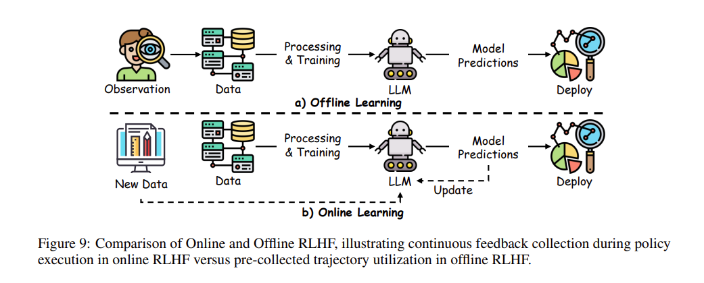
流派一：在线学习（Online Learning）—— 边考边改，实时毒打
在在线 RLHF 中，大模型不会被禁锢在固定的旧题库里。系统会实时收集人类（或评估者）对于模型刚刚新鲜生成的回答的反馈。
- 核心逻辑：模型当场写作业 -> 裁判当场批改评分 -> 模型原地吸收教训并调整参数。
- 技术看点：为了管理这种高强度的动态对决，科学家引入了丰富的算法。例如 DPS 引入了贝叶斯更新来管理对决过程；PPS 和 PEPS 巧妙结合了动态规划与老虎机（Bandit）算法的思路来修正行为；不仅如此，最新的 PARL 等算法甚至把“收集数据”这件事直接融合进了策略优化中，极其追求效率。
- 优劣势：不拿死题库背书，实战性能拉满，泛化能力顶尖。但不可避免的缺陷是极度烧钱，因为需要极端的实时数据吞吐。
流派二：离线学习（Offline Learning）—— 抱着死题库闭门造车
与在线派完全相反，离线学习绝不让模型去现场生成新答案去讨打，而是直接扔给它一个“早就收集好的、已经被打满偏好标签的历史对决记录库（Pref-labeled trajectories）”。
- 核心逻辑：模型抱着别人曾经考过的带有分数的试卷，一个人默默在“小黑屋”里揣摩该怎么说话。
- 技术看点：最大的难点在于如果完全死磕这套历史试卷，遇到没见过的题必然会“抓瞎”。为了拔高这种在信息受限条件下的表现，研究者们各显神通：有人提出了悲观最大似然估计（Pessimistic Maximum Likelihood Estimation）来界定性能下限；还有人提出了 FREEHAND 和 DCPPO 技术，专门用来探索“离线数据覆盖面不大时，该如何保证泛化”。此外，还有专门针对 Boltzmann 模型过拟合的修复工具。
- 优劣势：不需要花巨资搭建庞大的实时反馈系统，极其省钱省事。但也极其容易过拟合，模型稍微钻钻往年真题的漏洞就能拿到纸面高分（但实际表现拉垮）。
流派三：混合双打派（Blending Online and Offline）—— 先闭关，后下山
小孩子才做选择，成熟的工业界选择全都要。混合架构通过无缝衔接，吃尽了两头的红利。
- 核心逻辑：先让模型在极其廉价且海量的“离线旧数据”里进行预训练打底，把基本的话术框架搭建好；然后把它扔进“在线模式”中，利用少量的实时反馈来进行精准纠偏。
- 技术看点：这类算法（例如 PFERL 采用的两阶段法，或者 PERL 采用的主动探索乐观最小二乘策略）的终极信仰就是最小化向人类求教的次数。包括 Dueling RL 和它的衍生品（如 PRPRL），它们极其聪明地“把数据获取和反馈收集强行拆成两步跑”，最终在“要花多少钱雇标注员（标注成本）”与“模型的终极性能”之间找到了完美的黄金平衡。
💡 核心一句话总结： RLHF 的最后一步策略优化，其实就是一场决定生死的“备考路线”：离线（Offline）犹如抱着往年真题刷题，省钱但容易变书呆子；在线（Online）则是实枪真刀的模拟下场演练，性能炸裂但成本高昂；而混血派（Hybrid）则博采众长，先靠免费真题打满底盘，再靠高薪名师下场一刀见血地实战拔高，成为了当下追求极致性价比的大厂终极杀招！
🤖 自动化对齐时代：基于人工智能反馈的强化学习（RLAIF）
如果说 RLHF 是手工打磨的艺术品，那么 基于人工智能反馈的强化学习（RLAIF, Reinforcement Learning with AI Feedback） 就是大模型对齐领域的“现代化流水线”。
尽管 RLHF 的效果惊艳，但让真实人类去一句句给大模型判卷，有着难以克服的痛点。为了解决“人类考官不够用”的困境，研究者们提出了 RLAIF 的开创性范式：直接聘请另一个能力极强的 AI（如 GPT-4 等强力 LLM）作为虚拟考官，来代替或者辅助人类进行打分。
1. 为什么要用 AI 代替人类？（RLAIF vs RLHF 的核心矛盾）
在大规模应用 RLHF 时，有几道永远绕不过去的“成本与质量”难关：
- 极高的财力与时间成本：收集高质量的人类偏好标签非常昂贵。几十上百万条数据，不仅要花钱雇人，还要耗费漫长的时间周期来人工清洗和标记。
- 标注质量的不稳定（Inconsistencies）：一千个读者眼里有一千个哈姆雷特。不同的标注员由于知识水平、疲劳度、或者个人主观审美的差异，经常会给同样两段回答打出截然相反的分数。这种巨大的噪声和不一致性，极大地干扰了对齐模型的规模化拓展（Scalability）。
RLAIF 正是为了破局而生。它直接使用 AI 来生成反馈信号训练小模型，不仅保留了人类价值观引导的灵活性，还极其暴力地解决了“规模化效率”的问题。
2. RLAIF 的核心运作对比
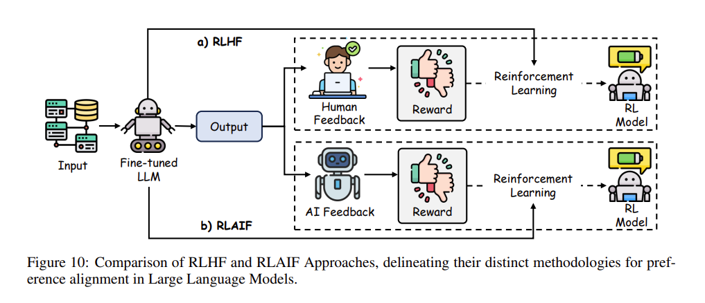
结合上图的对比，我们可以一眼看穿两者在运作架构上的核心差异——反馈的源头（Source of feedback）换人了：
- 上方的 RLHF：模型吐出结果（Output）后，由真实的人类评估员（Human Feedback）用肉眼看，然后手动给出奖惩分数，最后再拿这个带有昂贵人力成本的分数去驱动强化学习。
- 下方的 RLAIF：模型吐出结果后，全部扔给另外一个 充当“偏好打标员（Preference labeler）”的 AI 系统（AI Feedback）。这个作为考官的超强 AI，利用强大的 Prompt 或者思维链，瞬间完成对成千上万个回答的自动审阅，生成海量的训练信号去推动强化学习更新。
3. 可以比肩甚至超越人类考官的效能
那么问题来了，让“机器批改机器的卷子”真的靠谱吗？
答案是令人振奋的。大量的实证研究（如前沿论文显示），RLAIF 在接受人类评审员的最终盲测时，展现出了毫不逊色于甚至反超传统 RLHF 的表现！ 更加震撼的是，实验证明：即使用作“打分考官”的那个 LLM，其参数规模仅仅与被训练的模型一样大（同级别容量），它依然能打出极高质量的评判结果。这项发现彻底坐实了 RLAIF 是一种在算力和效率上极其优异的可行替代方案。
💡 核心一句话总结： RLAIF（基于AI反馈的强化学习） 就是给大模型找了个“超级 AI 代课老师”。它彻底砍掉了 RLHF 里极其昂贵且标准不一的人工打分环节，在确保价值观对齐效果不仅不降甚至更优的前提下，实现了永不疲倦的全天候流水线式微调，完美解决了顶尖大模型的规模化进化痛点！
4. RLAIF 的训练流水线（Training Pipeline）
既然把人类考官换成了 AI 考官，那么 RLAIF 的整套训练系统是如何运转的呢？其实它的骨架和 RLHF 一脉相承，但各个关节被彻底自动化了，主要分为以下三个连贯的齿轮：
-
第一步：AI 收集判定反馈（AI Feedback Collection） 在这个阶段，我们要先定好规矩（比如：回答要正确、要有礼貌、要切题）。接着，系统会自动利用这些标准，让 AI 考官批量生成大量反馈结论。
🤖 大白话解析：比起人类需要人工逐字阅读和标注，AI 考官一读完就能直接顺着死磕的纪律要求，瞬间批改完几万份卷子。最强大的是它的表现永远像一台稳定输出的机器，绝不会因为今天心情不好或者疲劳而瞎打分，这让反馈循环的规模化直接拉满！
-
第二步：修炼“自动化打分机”（Reward Model Training） 拿到海量的 AI 批阅结果后，下一步同样要训练一个专属的“打分器”（Reward Model）。这个模型的工作就是学习“输入和对应分数”的关联映射，以此来全面替代原本依赖人工贴标签的 RLHF 奖励模型。
🤖 大白话解析：这就是用大 AI 制造的“平替标签”去训练一个专业的打分机器。虽然大家也担心从 AI 嘴里出来的标签可能会自带一些死板或偏见（Bias），但对比满世界花重金雇人，它不仅实现了零人工依赖（Independence from human resources），还在流水线产能上赢麻了！
-
第三步：按新规矩重塑真身（Policy Update） 最后一步，就进入了大家熟悉的强化学习算法（RL）调参环节。模型每生成一段回答，就拿着刚才训练好的“全自动打分器”去测一下分数，逼着模型不断调整自身的底层策略（参数），朝着累计得分最大化的方向一路狂飙。
💡 核心一句话总结： RLAIF 的终极王牌优势 就在于突破了规模化（Scale）的死结！它通过用 AI 反馈精准平替掉人类标注这一最笨重的环节，让模型真正实现了“不需要人盯着也能 24 小时在无数任务里自我进化”的终极飞升，彻底砸碎了由于人力不够造成的 AI 进化枷锁！
🚀 极简风暴：直接偏好优化（Direct Preference Optimization, DPO）
在上文中我们探讨了，无论是雇人的 RLHF 还是雇 AI 的 RLAIF，传统的对齐套路都逃不开一个沉重且繁琐的“三段小步跑”：先做监督微调（SFT） \(\rightarrow\) 训练一个专门的“奖励模型（Reward Model）” \(\rightarrow\) 最后靠极度复杂的强化学习算法（比如 PPO）来重塑大语言模型。
1. 传统强化学习引发的痛苦
尽管这套三段式的打法效果显著，但业界在落地时却往往叫苦不迭：
- 奖励模型的幻象与偏差：要想准确地把人类那种只可意会不可言传的偏好，完美塞进一个打分代码（Reward Model）里，是一件极度困难的事情。
- 训练极度容易“炸炉”（Instability）：在最后一步强化学习（RL）阶段，你既要让大语言模型去迎合打分器拿高分，又要同时拽着它，让它不要偏离原始形态（避免走火入魔）。在这个左右互搏的多方博弈中，模型训练极度不稳定，占用算力极大，稍有不慎就会崩溃。
2. DPO 的降维打击：一步到位的艺术
为了掀翻这座横在开发者面前的大山，斯坦福学者们提出了被誉为对齐领域“奥卡姆剃刀”的开创性算法：直接偏好优化（DPO, Direct Preference Optimization）。
🤖 大白话解析： 如果说 RLHF/RLAIF 的套路是“先花大价钱重点培养一个专门的主考官（奖励模型）来批卷，再让学生通过不断的挨骂和挨奖来进步”； 那么 DPO 就是彻底开除了主考官！ 既然我们手头已经有了标好“A比B好”的人类偏好数据集，DPO 通过一套精妙绝伦的数学推导，证明了：大模型完全可以直接拿着这些对比数据，自己看出端倪，原地一次性‘顿悟’！
DPO 的核心机制：
DPO 将原本复杂的“寻找最高奖励”的过程，极其巧妙地直接与最优策略（大模型自身的目标）挂成了同一个等式（Directly linking the reward function to the optimal policy）。
- 它不需要再额外用显卡去单独训练那个讨人厌的中间商（奖励模型）。
- 它也不需要再动用 PPO 这种非常容易崩溃的强化学习系统。
- 它直接把对齐任务降维打击成了一个“单阶段的策略训练问题（Single-stage policy training problem）”。
通过越过中间商，DPO 干净利落地绕开了所有涉及拟合奖励模型和依赖传统奖励推断（如 Bradley-Terry 假设模型）的深坑。它用更少的算力、更稳的训练曲线，达成了与 RLHF 旗鼓相当甚至更好的效果！
💡 核心一句话总结： 直接偏好优化（DPO） 是一场对齐架构的“极简革命”：它用数学魔法一刀砍掉了最难伺候的“打分考官”和“强化学习引擎”，让大模型直接对着人类偏好数据完成“一步顿悟”，成了当今最稳、最快、最省钱的终极微调利器！
3. DPO 背后的数学魔法：奖励模型的“偷天换日” (Foundation of DPO)
DPO 是如何做到“不需要考官就能批卷”的呢？它的本质是利用人类偏好数据直接训练大模型，让策略（大模型自身）隐式地（implicitly）内生出一个完美的奖励模型。
为了理解这种惊艳的魔法，我们必须走过一段非常精彩的数学推导变身秀（别怕公式，背后都是大白话逻辑）：
第一步：强化学习的“初心”（KL 正则化奖励最大化目标）
和 RLHF 一样，DPO 一开始也是要追求最高奖励，并且不想让模型偏离本心。它的初始目标函数（Objective）是带有 KL 散度约束的奖励最大化：
🤖 大白话解析：
- \(r(x,y)\) 就是我们渴望的考官打分（Reward）。
- \(\beta\) 是控制偏离度的“紧箍咒”系数。
- \(\pi_{\text{ref}}\) 是那个没见过世面的原版大模型（Reference policy）。 这行公式的意思是：寻找一个完美的终极模型 \(\pi^*\)，让它既能拿最高分，又不会离原版老实人模型 \(\pi_{\text{ref}}\) 太远（KL散度约束）。
第二步：算出完美答案的反向展开（Deriving the Optimal Policy）
根据数学上的 Boltzmann 分布假设，上面这场拉扯游戏，其实能直接算出一个数学解析的最优解：
(其中，\(Z(x)\) 是一个配平用的归一化常数，保证所有的输出概率加起来等于 1 )
第三步：偷天换日：用概率反推出奖励（Reparameterizing the Reward）
最绝妙的魔术来了！既然我们上面算出了完美模型 \(\pi^*\) 和奖励 \(r(x,y)\) 的关系，那我们干嘛不把位置倒换一下，把 \(r(x,y)\) 放在等号左边求解呢？（两边同时取自然对数 \(\log\)，移动位置）：
🤖 大白话解析： 这就是见证奇迹的时刻！ 聪明的学者发现：“究竟什么是好的奖励分数？”=“完美模型说这句话的对数概率 \(\log \pi^*\)”减去“原版老实人说这句话的对数概率 \(\log \pi_{\text{ref}}\)”，再加上个凑数的常数 \(\beta \log Z(x)\)！ 这意味着，那把看不见的、极难训练的“考官评分尺（Reward 模型）”，竟然被纯纯地转化成了“新模型和旧模型发声概率的对比”！
第四步：终极替换（Bradley-Terry Preferences）
那么在人类的人工标注数据里（A 答案比 B 答案好），偏好概率又是怎么计算的呢？ 传统的 Bradley-Terry 模型告诉我们，“人类觉得句子 \(y_1\) 比 \(y_2\) 顺眼”的概率公式长这样：
既然我们在“第三步”里已经找出了 \(r^*\) （奖励的替代公式），我们干脆闭着眼睛，把第三步整长串极其复杂的 \(r^*\) 公式，像积木一样全部塞进这句话的打分公式里！
经过令人舒适的数学约分，那些讨厌的归一化常数 \(Z(x)\) 瞬间被互相抵消得一干二净！我们由此拿到了DPO 极简的终极偏好模型：
🤖 大白话解析： 仔细看看这个最终干干净净的偏好公式！原本需要专门建立的小模型（参数 \(r\)）彻底消失了！ 公式里全都是 \(\pi\)（模型自身的发声概率）。这代表了极其震撼的结论：只要拿到人类真实选择对错的偏好数据，大模型完全可以直接通过衡量“新旧两个自己吐出好词和坏词概率的比值”，自己训练和对齐自己！中间商（打分考官模型）彻底破产！
💡 核心一句话总结： DPO 的灵魂就是一场精妙绝伦的“代数偷换”：它通过推导，将“极度难练的奖励打分（Reward）”直接等价替换成了“新旧模型吐出优质回答的对数概率之差”。通过消灭打分中间商，它让大模型在接收人类偏好数据时，真正实现了没有任何“代理商差价”的直通顿悟！
4. 落地实操：DPO 的终极目标函数 (Objective of DPO)
在完成了上文惊艳的数学“偷天换日”之后，到了真刀真枪写代码训练的阶段，DPO 的设定变得异常简单而优雅。
既然无需再去找“中间商”算分数，我们就可以直接给大模型喂“偏好三元组数据 \((x, y_w, y_l)\)”：
- \(x\)：人类给出的提示词（Prompt）
- \(y_w\)：人类更偏爱、认为写得更好的回答（Winning / Preferred output）
- \(y_l\)：人类认为相对较差的回答（Losing / Less preferred output）
此时，DPO 的终极损失函数（目标函数） 就呼之欲出了：
🤖 大白话解析： 不要被这串公式吓到，它完全是在教大模型怎么“拉踩”！
- \(\sigma(\cdot)\) 是一个 Sigmoid 激活函数，负责把括号里的差值压缩成 0 到 1 的概率区间。
- 前半部分 \(\beta \log \frac{\pi_\theta(y_w \mid x)}{\pi_{\text{ref}}(y_w \mid x)}\) 其实隐式代表了新模型对“好答案（\(y_w\)）”给出的底气提升（相对原版模型提高了多少生成的对数概率）。
- 后半部分 \(\beta \log \frac{\pi_\theta(y_l \mid x)}{\pi_{\text{ref}}(y_l \mid x)}\) 则代表了新模型对“差答案（\(y_l\)）”给出的底气提升。
- 核心逻辑：这个损失函数要求大模型想尽一切办法，尽可能拉大它对“好答案的底气”和“差答案的底气”之间的差距（差距越大，损失越小）！通过不断最大化这种符合人类审美的偏好落差，大语言模型就自然而然地对齐了人类的价值观。
更让人拍案叫绝的是，DPO 虽然直接砍掉了奖励模型，但因为它的底层公式血脉完全继承了 RLHF 的“KL 散度正则化（KL-regularized formulation）”，所以它在理论层面上与传统且高大上的 RLHF 保持着极佳的一致性保证（Theoretical guarantees）。
这就好比，它不仅找到了终南捷径，并且这条捷径通向的目的地，与原本绕来绕去的迷宫终点分毫不差。由此，DPO 极大降低了对齐系统的复杂程度（Reducing system complexity），并在实操中史无前例地拉高了训练阶段的稳定性（Enhancing training stability）！
💡 核心一句话总结： DPO 的终极训练法，就是直接给模型喂“一好一坏”的人类偏好答案，通过一个极其简单的拉踩损失函数，强迫模型在输出概率上“疯狂拉大好坏答案的差距”，从而在抛弃外部裁判的同时，优雅、稳定又丝滑地完成了最高标准的价值观对齐！
5. DPO 的训练内功揭秘（Training Details of DPO）
抛开了晦涩的公式，当我们以“造物主”的视角俯瞰整个 DPO 框架的流水线时，其实它的实操骨架极其明晰。这就好比是一场“以老实人我为镜，重塑更强自我”的修炼。
整个框架构建在两个核心大模型（双机博弈）之上：
- 参考策略（Reference Policy, \(\pi_{\text{ref}}\)）：通常用经过了监督微调（SFT）的大模型来充当。在整个对齐训练中，这个模型被完全冻结（Frozen LM），一行代码一滴权重都不准改。它就像一把静态的标尺，用来约束新模型的底线。
- 目标策略（Target Policy, \(\pi_{\text{tar}}\)）：这就是我们正在费尽心思训练的主角（Trained LM）。它也是从 \(\pi_{\text{ref}}\) 复制拷贝过来的，但它会在人类反馈的洗礼下被不断更新权重，变得越来越“高情商”。
三步走的修炼闭环（Training Procedure）
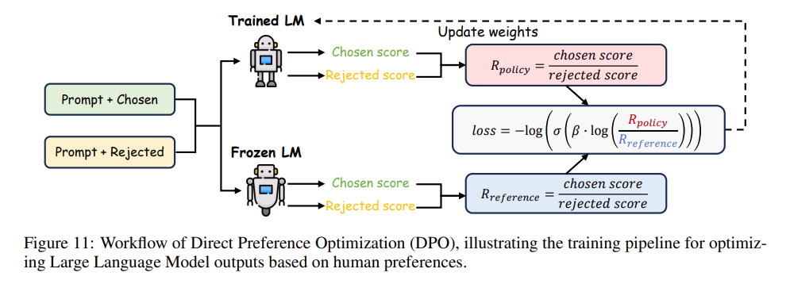
结合经典的工作流图，我们可以把 DPO 的运转归纳为三个雷打不动的步骤：
第一步：数据收集与“选秀”准备（Data Collection and Preparation） 先找一堆提示词（Prompt），输入给老实人模型 \(\pi_{\text{ref}}\)，让它每次都给出几个不同的回答。接着，花钱请真实的人类评估员下场，根据回答的连贯性、相关性、清晰度等指标，评出个高低上下（谁是 Chosen，谁是 Rejected）。这就攒出了一套极高价值的偏好数据集。
第二步：同台打分对抗（Generation & Scoring） 将刚才人类定好“一胜一负”的 Prompt+回答 组合，同时扔进被冻结的老模型（Frozen LM）和正在训练的新模型（Trained LM）里，分别计算出它们对这好坏两个回答的概率分（Score）。随后，计算二者之间的比率差距：
- \(R_{\text{policy}}\) = 新模型给好答案的分 / 新模型给坏答案的分
- \(R_{\text{reference}}\) = 老模型给好答案的分 / 老模型给坏答案的分
第三步：梯度拉踩优化（Optimization） 这就是 DPO 的点睛之笔！新模型开始反思：如果我的 \(R_{\text{policy}}\) 不能狠狠甩开老模型给出的 \(R_{\text{reference}}\) 差距，那就说明我没有进步！ 于是，根据上一节学过的损失函数公式（利用 Sigmoid 等激活函数），新模型通过连绵不断的梯度更新（Gradient-based updates）来强行拔高自己对优选答案的倾向性，直到修炼出完美逢迎人类偏好的火眼金睛。
实战避坑指南（Practical Considerations）
尽管 DPO 流程看着简单，但在落地实操时必须要守住两条铁律，否则模型照样“走火入魔”：
- 垫脚石必须够硬（Robust reference policy） 你不能随便拉一个刚出生的、话都说不利索的婴儿模型来强行对齐。\(\pi_{\text{ref}}\) 通常必须是一个已经在这个领域做过很好的 SFT（监督微调） 的模型。这确保了在 DPO 阶段，模型不需要再去受苦受累地学习“语言是如何拼写的”（Fundamental skill acquisition），而是能把所有精力都聚焦在“怎样说人类才最爱听（Refinement）”这件事上。
- 喂养的品类要杂（Diverse Preference Data） 训练时提供的偏好数据必须要尽可能的包罗万象，覆盖人类用户的各种期待和刁钻角度。如果数据太单一（全是写诗），模型不仅无法应对其他任务（比如写代码），还极其容易演变成“只会一招鲜”的过拟合废柴（Overfitting to narrowly defined tasks）。
💡 核心一句话总结： DPO 的训练本质上是一场“新我”超越“旧我”的同台赛跑：以一个被冻结的 SFT 老模型为兜底标尺，让正在进化的新模型在同一套好坏数据的喂养下，不断拉开比旧模型更大的分数差距；只要保证了标尺的底子够硬、数据的花样够杂，模型就能不借助外力考官，稳稳地修炼成符合人类口味的顶尖高手！
6. DPO 的变体宇宙：群星闪耀的进化路线 (Variants of DPO)
自从 DPO 这套“极简魔法”横空出世，学术界和工业界彻底沸腾了。为了解决在不同特定场景下遇到的新麻烦，大家脑洞大开，基于 DPO 的核心骨架衍生出了一个庞大的“变体家族”。按照优化目标的不同，它们主要可以分为四大流派：
流派一：极致抠字眼的生成优化（DPO for Optimizing Generation）
最初的 DPO 是拿着整段回答算总账，但这会导致模型有时在长篇大论中“浑水摸鱼”。为了让对齐更加细腻：
- Token-level DPO：将对齐过程拆解为马尔可夫决策过程（MDP），变成了连珠炮式的“字元级（Token-level）”抠字眼优化，极大缓解了模型在不喜欢字元上过度发散（KL divergence过大）的问题。
- TDPO：放弃了传统的反向 KL 散度，改用顺序前向 KL 散度（Sequential forward KL）。这就好比让模型不仅要向好答案靠拢，还要刻意保留自己发言方式的多样性（Diversity preservation）。
- Iterative / Step-wise DPO（迭代 / 步进式 DPO）：不毕其功于一役，而是引入了“多轮车轮战”。每一轮拿自己更新后的策略作为下一轮的底座新标尺（Baseline），不断切分数据集，实现极其细腻的滚雪球式进化。
- PCO（Pairwise Cringe Optimization）：引入了“软边界（Soft margin）”概念，在探索（寻找新词）与利用（追求高分）之间找到了微妙的平衡。
流派二：灵活与可控的瘦身剪裁（Controllable and Flexible DPO）
大模型经常有个臭毛病——为了显得自己懂得多，总喜欢啰里啰嗦注水。为了整治这个毛病并进一步给系统瘦身：
- R-DPO：长篇大论的“啰嗦克星”。直接在目标函数中加入了长度惩罚项（Regularization term），强硬制裁那些注水冗长的垃圾回答。
- SimPO：极致瘦身狂魔！ 它不仅自带了答案长度的归一化处理把啰嗦病治好，甚至直接把那个原本被奉为圭臬的“老版参考模型 \(\pi_{\text{ref}}\)”给开除了！ 它的损失函数极其精简，彻底摆脱了双机并行的庞大开销。
- RLOO：引入了古老而经典的 REINFORCE 算法，直接把一整篇长回答当成“一个单一动作”来对待。它抛弃了庞大笨重的价值网络（Value model），大幅降低了因为密集算分带来的可怕计算负担。
流派三：以一挑多的多排面对战（Listwise DPO）
传统的 DPO 是“1v1 单挑”（只比较 A 和 B 谁更好）。但在现实中，我们经常会有一整张候选答案的“排行榜（Ranked lists）”：
- LiPO (Listwise Preference Optimization)：将搜推广领域的“排序学习（Learning-to-Rank）”技术生硬且有效地嫁接了过来。比起笨拙地让答案们两两单挑，它能直接俯瞰整个评价榜单来统筹优化。
- PRO：采用化繁为简的策略，把一个极其复杂的长榜单排序，巧妙拆解成多个简单的二元（1v1）对比任务。
- RRHF：索性连单独的打分比对环节都省了，直接把人类的偏好对齐强行“无缝缝合”到了 SFT（监督微调）的训练阶段。
流派四：从黑历史中痛思教训（Negative DPO）
最顶尖的对齐，有时不仅仅要知道“什么是好”，更要在面对有害、涉黄涉暴的恶性输入时，本能地知道“绝对不能怎么回答”。
- NN (Negating Negatives) 与 NPO (Negative Preference Optimization)：这哥俩专门为了对付那些“连个好答案都挑不出来，全是一堆极度有害烂答案”的场景。它们直接丢弃了正向表扬，采用猛烈的梯度上升（Gradient ascent）。 > 🤖 大白话解析：这就是在做纯粹的反面教材特训。它强迫大模型死死盯住那些恶毒的、令人作呕的错误答案，并让自己的底层概率疯狂地往远离（Divergence）这些废料的方向狂奔（不仅不学，还要跑得越远越好），从而极大增强了模型应对黑客诱导或者灾难性崩解（Catastrophic collapse）的免疫力。
💡 核心一句话总结： 如果说原生 DPO 是一门惊艳天下的独孤九剑，那如今它已经繁衍出了一个无孔不入的“变体宇宙”：从“字句级精抠（Token-level）”到“一打多群殴（Listwise）”，从“开除参考模型（SimPO）”到“专盯反面教材疯狂逃离（NPO）”，各类极度细化的 DPO 正在全面接管不同细分场景下的对齐战局！
🧠 面向推理的后训练 (PoLMs for Reasoning)
在当前的大模型发展中，推理能力（Reasoning）是让模型能够处理多步逻辑、复杂推断和复杂决策的核心支柱。为了让模型变得更聪明、逻辑更严密，学术界和工业界通常会采用以下两种核心的技术路线来增强模型的推理能力：
-
推理的自我反思与修订 (Self-Refine for Reasoning, §5.1) 这种方法的核心在于赋予大模型“自省”的能力。它会引导模型在生成推理步骤后，自主地去检查、发现其中的错误并加以修复。就像人类做完数学题后进行的“验算”一样，通过不断地自我反思来提高最终推断的准确率。
-
用于推理的强化学习 (Reinforcement Learning for Reasoning, §5.2) 这条路线则利用了基于奖励的优化机制（Reward-based optimization）。它的目标是专门提升模型思维链（Chain-of-Thought, CoT）在长难任务中的连贯性和深度。给能得出正确逻辑、深思熟虑的推理过程打出高分，从而训练出逻辑推导极其严密的大脑。
这两种前沿技术的集体发力，使得像 DeepSeek-R1 这样的大语言模型在面对长线决策（long-horizon decision-making）、严谨的逻辑证明、复杂的数学推理等极其硬核的挑战性任务时，表现得越来越稳健和无懈可击。
1. 推理的自我修正（Self-Refine for Reasoning）
在优化大语言模型（LLMs）以处理需要复杂逻辑推断（intricate logical inference）和依赖上下文的决策（context-dependent decision-making）任务时，推理仍然是一个核心挑战。
在此背景下，自我修正（Self-refine）作为一种强大的机制应运而生。它能够在文本生成过程中或生成后，迭代地精准定位并纠正错误，从而显著提升推理深度和整体可靠性。
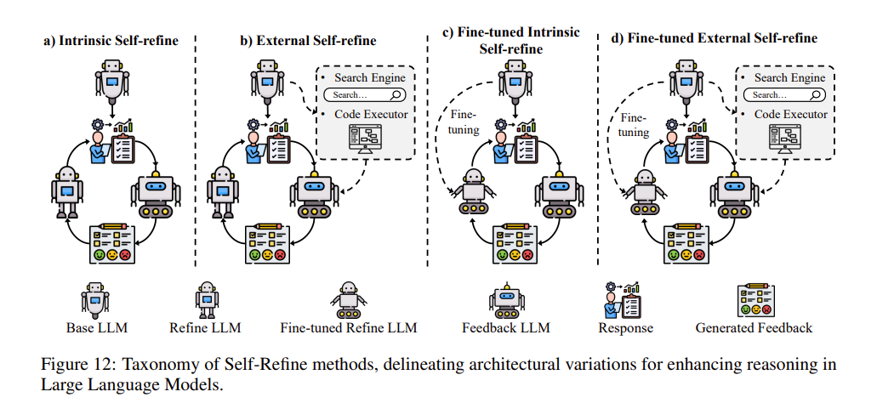
正如 图12（Fig. 12） 所示，自我修正方法可以划分为以下四个核心类别：
- 内在自我修正（Intrinsic Self-refine）：主要依赖于模型内部的推理循环机制来实现自我纠错。
- 外部自我修正（External Self-refine）：通过引入并结合外部反馈资源（如工具、知识库等）来指导修正。
- 微调内在自我修正（Fine-tuned Intrinsic Self-refine）：基于模型自我生成的修正内容，通过微调的方式迭代更新和优化模型的推理过程。
- 微调外部自我修正（Fine-tuned External Self-refine）：整合外部信号与微调技术，以一种更具适应性、更着眼于长期优化的方式来不断打磨和提升推理能力。
💡 补充说明： 表4（Table 4） 进一步详细阐述了上述每一种类别是如何跨越各类不同的特定任务，全方位增强并巩固 LLM 的推理能力的。
流派一：内在自我修正（Intrinsic Self-Refine）
这部分方法的核心使命是赋能模型自身（empowering the model itself），让它能够在内部自行检测并修复错误，而绝对不诉诸或依赖外部工具（without resorting to outside tools）。典型的前瞻性研究包含以下几种利器：
- RCI Prompting：极其克制。它只在识别出确凿的矛盾或明显错误时才会触发纠错机制，从而巧妙地避免了对那些无关紧要的微小不确定性产生“过度反应（overreactions）”。
- CAI Revisions：在纠正不良输出（如冒犯性或有害文本）的同时，会顺带教导模型对自己的回答进行自我节制与审查（self-moderate）。
- Self-Refine：利用从低质量提示词到高保真指令的过渡转化，它不断打磨和提纯原本脆弱的中间思维逻辑，以此大幅拔高输出结果的一致性。
- CoVe (Chain-of-Verification)：这是一种拆解思维。为了应对多重答案的复杂问题，它会将整道大题拆解为若干细小的子任务（subtasks），分别对每个子任务进行独立且严格的自我验证，确保在整条推理链（reasoning chain）乃至全局的精准与一致。
- 弱到强泛化（W2SG, Weak-to-Strong Generalization）：这是一个极为前沿的框架。它运用先进的算法，成功让能力强大的学生模型（strong student models）从能力较弱的教师模型（less capable teacher models）所产生的那堆含有噪声（noisy）的不完美示例中进行高效学习。目前，业界在此框架上实现了诸多突破：例如引入集成学习（ensemble learning）来提升 W2SG 的鲁棒性与效能；甚至采用“弱到强外推（weak-to-strong extrapolation）”技术来极限强化大模型的价值对齐（Alignment）能力。
流派二：外部自我修正（External Self-Refine）
与内在修正完全依靠“冥思苦想”不同，这类方法主张“借助外力”。它通过引入外部反馈源（extrinsic feedback sources）或计算工具（computational tools）来引导和纠正大模型的推理路径。这一流派的代表性技术包括：
- CRITIC：严谨的“步步审查”。它系统性地对模型的每一步输出进行检验（checks step-by-step outputs），从而大幅增强了在处理深层复杂推理任务时的可靠性。
- Reflexion 与 Self-Debug：“对答案”式的纠错。它们分别通过将生成的答案与参考解（reference solutions）或少样本示例（few-shot exemplars）进行比对，在反复的对比与参考中迭代优化核心逻辑。
- FLARE 与 Logic-LM：引入外脑外置引擎。这类技术通过接入外部文档（external documents）进行参考，或者调用符号求解器（symbolic solvers），从根源上将模型出现逻辑失误（logical missteps）的概率降至最低。
- RARR 与 SelfEvolve：“防微杜渐”的中间态验证。它们证明了：一旦能够对推理的中间状态（intermediate states）（例如编译器抛出的错误信息、或相关的知识源）进行实时验证，就能成为一种极具杀伤力的手段，可以尽早剪除（prune）那些错误的推理分支，并一步步将模型引向正确的最终解。
- 迭代偏好学习（Iterative Preference Learning from Human Feedback）：该框架为在线环境（online settings）提出了迭代版直接偏好优化（Iterative DPO）算法，同时为离线场景（offline scenarios）打造了多步拒绝采样策略（multi-step rejection sampling strategy），灵活应对不同架构的对齐需求。
- PIT：它能够从人类的偏好数据中，隐式地（implicitly）学习到模型优化改进的最终目标，无需显式构造繁复的奖励函数。
流派三：微调内在自我修正（Fine-Tuned Intrinsic Self-Refine）
这部分方法通过专门针对内部修订（internal revision）来微调基础模型，旨在系统性地强化大语言模型自身的“自我纠错循环（self-correction loops）”。其典型代表有：
- Self-Critique：旨在通过“自我审查（self-review）”来提升自动摘要生成任务的质量与逻辑。
- SelFee：利用迭代反馈循环（iterative feedback loops），确保在输出中达到更高水平的逻辑一致性（logical consistency）。
- Volcano：通过在 LLM 架构内部微调一个专属的“纠错模块（corrector module）”，有效减少和控制多模态任务中的幻觉（multimodal hallucinations）现象。
- RL4F：利用基于强化学习的“批评循环（RL-based critique loops）”，在极其需要深度推理（in-depth reasoning）的基准测试中，将性能平均拔高了 10%。
- REFINER：专注于重新打磨中间推理路径（intermediate reasoning paths）。它并不改变模型原始的生成逻辑，而是通过训练模型去仔细重新检查（re-examine）其部分输出结果。这有力地证明了：只要教会模型“回过头看一眼中间过程”，就能带来稳定且一致的性能提升。
-
由易到难泛化（Easy-to-hard generalization）：这是一种极具启发的训练理念。模型最初会在容易验证的示例（easily verifiable examples）上进行训练，在打好底子后再去攻克更复杂的任务。一个著名的成功实践是：先在人类可轻松验证的示例上训练出一个强大的奖励模型（reward model），然后再用这个奖励模型去监督和指导能力更强的模型攻克极具挑战的难题。
注：正如前文提到的弱到强泛化（W2SG）技术，其令人瞩目的有效性甚至已经突破了 LLM 的边界，在计算机视觉（computer vision）等任务中也展现出了成功的应用。
流派四：微调外部自我修正（Fine-Tuned External Self-Refine）
在极其追求长远持续优化（long-term improvements）的场景中，这类方法另辟蹊径，主张直接利用外部反馈机制来更新模型底层的参数组合（updating the model's parameters via external feedback mechanisms）。典型的前端技术成果验证了其强大潜力：
- Self-Edit：这是一种“看结果再回炉”的技术。它会根据代码真正执行跑出来的结果（execution results），来重新生成对应的代码输出，这就让程序的正确性能在迭代试错中得到极大的保障与提升。
- Baldur：它犹如一位严谨的学者，专注于通过添加或修改定理证明过程中的“上下文（context）”，来极限增强模型的逻辑验证和定理证明（theorem proving）能力。
- CodeRL：在程序合成（program synthesis）任务中表现亮眼。它专门搭建了基于测试用例的评判器（test-based critics），以一种“自动黑盒测试”的手段，高效验证模型生成的代码是否满足真实的功能精度要求（functional accuracy）。
总之，这套融合拳展示了一个极具前景的范式：将外部的真实验证资源（external resources）融入到有针对性的专项微调（targeted fine-tuning）中。通过这种严密外挂的把关，能够推动整个大模型的综合逻辑推理性能（overall reasoning performance），获得稳健且一步一个脚印的（stepwise）进阶。
概览：LLM 自我修正方法编年史 (2022–2025)
为了更直观地展现上述技术的爆发式发展，文献整理了近年来具有里程碑意义的自我修正（Self-Refine）方法。下表详细列出了这些方法对应的核心模型、典型任务以及相关的技术特征：
(注：下表中：✅ 象征使用/应用，❌ 象征不包含。SR类型缩写含义： IS=内在修正, ES=外部修正, IF=微调内在修正, EF=微调外部修正)
| 方法 (Methods) | 核心大模型 (Main LLMs) | 典型应用任务 (Main Tasks) | 外置工具 (ET) | 专门微调 (FT) | 修正类型 (SR) | 发布时间 |
|---|---|---|---|---|---|---|
| Self-Critique | InstructGPT | 话题摘要 (Topic Summarization) | ❌ | ✅ | IF | 2022年6月 |
| CodeRL | GPT-3.5 | 程序合成 (Program Synthesis) | ✅ | ✅ | EF | 2022年11月 |
| CAI Revisions | 52B (无详细信息) | 文本去毒 (Detoxification) | ❌ | ❌ | IS | 2022年12月 |
| Baldur | Minerva 8B, 62B | 证明生成 (Proof Generation) | ✅ | ✅ | EF | 2023年3月 |
| Self-Refine | GPT-3.5, GPT-4 | 数学, 编程, 对话 (Math, Coding, Dialogue) | ❌ | ❌ | IS | 2023年5月 |
| RARR | PaLM 540B | NQ, SQA, QReCC | ✅ | ❌ | ES | 2023年5月 |
| SelfEvolve | InstructGPT, GPT-4 | DS-1000, HumanEval | ✅ | ❌ | ES | 2023年6月 |
| RL4F | GPT-3 | 动作规划, 话题 (Action Plan, Topic) | ❌ | ✅ | IF | 2023年7月 |
| Self-Edit | CodeGen, GPT-3.5 | 代码生成 (Code Generation) | ✅ | ✅ | EF | 2023年7月 |
| CoVe | PaLM-540B | 多重答案 (Multiple Answers) | ❌ | ❌ | IS | 2023年9月 |
| FLARE | GPT-3.5 | StrategyQA, ASQA | ✅ | ❌ | ES | 2023年10月 |
| Logic-LM | GPT-3.5, GPT-4 | PrOntoQA, 逻辑推理 | ✅ | ❌ | ES | 2023年10月 |
| Reflexion | GPT-4 | 游戏, 编程, HotpotQA | ✅ | ❌ | ES | 2023年10月 |
| Self-Debug | GPT-3.5, GPT-4 | 文本到代码 (Text-to-Code) | ✅ | ❌ | ES | 2023年10月 |
| SelFee | LLaMA-7B, 13B | MT-Bench | ❌ | ✅ | IF | 2023年 |
| RCI | GPT-3.5-Turbo | 计算机任务, CSQA | ❌ | ❌ | IS | 2023年 |
| REFINER | GPT-3.5 | 数学, 逻辑, 道德故事 | ❌ | ✅ | IF | 2024年2月 |
| CRITIC | GPT-3, LLaMA2-70B | GSM8k, SVAMP, HotpotQA | ✅ | ❌ | ES | 2024年2月 |
| ProMiSe | FLAN-T5, LLaMA2-13B | MultiDoc2Dia, QuAC | ✅ | ❌ | ES | 2024年2月 |
| PREFER | InstructGPT, GPT-4 | NLI, NLC | ❌ | ❌ | IS | 2024年3月 |
| Volcano | GPT-3.5 | 视觉推理 (Visual Reasoning) | ❌ | ✅ | IF | 2024年4月 |
| CYCLE | CodeGen, StarCoder | HumanEval, MBPP-S, APPS | ❌ | ✅ | IF | 2024年4月 |
| SRIT | LLaMA2-7B, GPT-3.5 | SIQA, PIQA, CSQA, OBQA | ❌ | ❌ | IS | 2024年5月 |
| MCTSr | LLaMA3-8B, GPT-4 | GSM8K, GSM Hard, MATH | ❌ | ❌ | IS | 2024年6月 |
| Self-Contrast | GPT-3.5, L-70B | GSM8K, SVAMP, CommonMT | ❌ | ❌ | IS | 2024年6月 |
| TEaR | GPT-3.5, Claude-2 | WMT22, WMT23 | ❌ | ❌ | IS | 2024年6月 |
| LLMRefine | PaLM (Bison) | MQM, ASQA, Summ | ❌ | ✅ | IF | 2024年6月 |
| Self-Bias | GPT-4, DeepSeek | Flores-200, MQM | ✅ | ❌ | ES | 2024年8月 |
| Exp-Refiner | GPT-3.5, GPT-4 | e-SNLI, QASC, WorldTree | ❌ | ❌ | IS | 2024年10月 |
| Self-corrective | GPT-2 | GSM8k, SVAMP, 文本去毒 | ❌ | ✅ | IF | 2025年1月 |
2. 用于推理的强化学习（Reinforcement Learning for Reasoning）
随着自我修正（Self-refining）技术的不断迭代与发展，研究重心逐渐转向将强化学习（Reinforcement Learning, RL）直接整合到推理过程之中。这一转变得以显著提升大语言模型（LLMs）在逻辑严密性与准确性上的对齐水平，堪称模型进化的一项重大飞跃。
将 RL 策略引入大模型训练，为优化推理步骤提供了一个动态的框架。在这个框架下，模型通过评估中间状态或最终结果，迭代地完善自己的逻辑路径。在整个整合过程中，如何定义 RL 对模型行为的评估和强化方式，存在着以下两种核心的方法：
- 基于结果的奖励模型（Outcome-based Reward Models, ORMs）：仅仅评估最终答案的正确性（final answer's correctness）。然而，这种“只看结果”的模式有时会无意中忽略掉推理中间步骤里隐藏的逻辑漏洞（logical errors in the intermediate steps）。
- 基于过程的奖励模型（Process-based Reward Models, PRMs）：引入了步步为营的监督机制（step-by-step supervision）。它会对每一个逻辑步骤分别赋予奖励评估，通过及早消除初期阶段的缺陷，极大地提升了整条推理链（the entire reasoning chain）的可靠性。
这种向强化学习整合的演进，绝非仅仅是为了优化最终的输出结果，更是对模型底层“认知机制（cognitive mechanics）”的深度重塑与提升。正如在最新的顶尖迭代版本——DeepSeek-R1 (DeepSeek-AI, 2025) 中所展现的那样，大模型的推理能力已达到了一个前所未有的新高度。
1. 将推理公式化为马尔可夫决策过程（Formulating Reasoning as an MDP）
在大语言模型（LLMs）中，推理过程可以被优雅地建模为一个序列决策过程（sequential decision-making process）。在这个过程中，模型在面对输入查询 \(x\) 时，会迭代地构建一系列中间步骤 \(a_1, a_2, \dots, a_T\)，以最大化得出正确最终答案的可能性。
这种概念化将推理转化为了一个非常适合强化学习（RL）施展拳脚的结构化框架，具体来说，就是通过马尔可夫决策过程（Markov Decision Process, MDP）的视角来进行审视。我们将这个 MDP 记为 \(\mathcal{M} = (\mathcal{S}, \mathcal{A}, \mathcal{P}, \mathcal{R}, \gamma)\)。MDP 完美封装了状态、动作、状态转移、奖励以及时间折扣（temporal discounting）之间的动态交互，为训练 LLMs 驾驭复杂的推断任务奠定了极其坚实的数学基础。
通过将推理重塑为一连串深思熟虑的选择（a sequence of deliberate choices），这种方法使得模型能够系统性地探索并打磨其逻辑路径。这与游戏博弈或机器人控制领域的决策过程有着异曲同工之妙，只是它被巧妙地调整以适应语言和概念推理（linguistic and conceptual reasoning）的独特挑战。
这一切的最终目标（ultimate objective），是推导出一个最优策略（optimal policy） \(\pi^*(a_t|s_t)\)，从而最大化预期的累积奖励：
为了实现这一目标，通常会利用诸如 PPO（近端策略优化, Proximal Policy Optimization） 或 A2C（优势演员-评论家, Advantage Actor-Critic） 等强大的 RL 技术，基于环境的反馈（environmental feedback）来迭代增强推理能力。
在这个 MDP 框架下，有几个最为核心的基石：
-
状态空间（State Space, \(\mathcal{S}\)）：状态空间构成了这个 MDP 的脊梁。每一个状态 \(s_t \in \mathcal{S}\) 代表了在时间步 \(t\) 当前的推理轨迹（reasoning trajectory）。它是一个融合了语言和结构元素的丰富综合体。具体而言，\(s_t\) 包含了：初始查询 \(x\)、先前的推理步骤序列 \(\{a_1, \dots, a_{t-1}\}\)，以及编码了逻辑依赖与中间结论（如部分解或推断出的关系）的内部记忆表征（internal memory representation）。
随着推理的逐步展开，这个状态会产生动态演变。它像是一面镜子，不仅映射出通过每一步操作所表达的显式路径（explicit path），还沉淀了从上下文中提取的潜在知识（latent knowledge）。例如，在一道数学证明题中，\(s_t\) 可能包含了题目声明、之前推导出的方程式，以及适用的数学定理记忆。这种多维度的状态表征，确保了大模型能够自适应地追踪其推理上下文——这是解决多步问题（multi-step problem-solving）或保持文本生成连贯性所必不可少的先决条件。
-
动作空间（Action Space, \(\mathcal{A}\)）：动作空间定义了在每一步中所有可能决策的范围。每一个动作 \(a_t \in \mathcal{A}\) 对应于选择了下一步的“推理移动（reasoning move）”，它就像是一个多功能的工具箱，用来不断推进推断过程。
这些动作的具体形式可以是：在自然语言中生成一个 Token 或短语来阐述某个推理片段；应用一个预定义的逻辑或数学变换（例如代数化简）；从知识库中检索并选择一个相关定理来延长推理链；或者在得出结论时执行“停止（halting）”动作。动作空间的性质因任务而异：在形式化证明中，它可能是离散的（discrete）（需要从有限的逻辑规则集合中做出选择）；而在开放式的推理场景中，它又表现为连续的 / 开放的（continuous）（生成自由形式的文本，体现 LLM 的生成灵活性）。这种二元性（duality）赋予了模型极大的自由度，使其既能驾驭符号逻辑结构化领域，也能游刃有余地应对常识推理等非结构化挑战，在适应任务需求的同时，始终保持向着正确答案前进的连贯轨迹。
-
状态转移函数（Transition Function, \(\mathcal{P}\)）：具体由函数 \(P(s_{t+1}|s_t, a_t)\) 进行封装，它主导着状态如何随着每一个动作的执行而发生演变，清晰地勾勒出 MDP 框架内推理轨迹的演进路线。
与传统 RL 环境中随机性往往源自外部变量（如环境噪声）截然不同，LLM 中的推理状态转移主要是确定性的（deterministic），它主要由模型的自回归输出或结构化的推断规则（如在证明中应用一条演绎步骤）来驱动。然而，由于模型固有的局限性（例如知识不完备、中间状态模棱两可、或者在文本生成中的概率采样分布），不确定性依然会从中滋生，这就引入了强化学习必须要应对的变异性（variability）。对于自回归 LLM 而言，状态转移遵循着可预测的序列生成过程，但错误累积（error accumulation）或解释偏离（divergent interpretations）的潜在风险，使得我们必须进行高强度的稳健设计以确保最终可靠性。这种“虽为确定但不稳定（deterministic-yet-uncertain）”的动态特性深刻表明，我们需要极具适应性的策略，以横跨从极其精确的数学推导到微妙叙事构建等各类上下文，从而稳固整个推理过程。
-
奖励函数（Reward Function, \(\mathcal{R}\)）：奖励函数 \(R(s_t, a_t)\) 充当着整个 MDP 的“评估核心（evaluative core）”。它为每步推理的质量提供极其关键的反馈信号，以此引导模型的学习方向。
传统 RL 任务（比如游戏里的得分）通常拥有非常明确的（explicit）奖励，但推理反馈却不同。推理的奖励极其庞大且隐晦，它必须经过极其精心的工程设计，要在稀疏（sparsity）与密集（density）之间取得绝妙的平衡，从而真实折射任务的复杂度和目标。稀疏奖励（Sparse rewards）（如仅在得出完全正确的最终答案时才予以赋值评价）虽然逻辑简单，但在多步复杂场景下会严重延缓模型学习速度；相对而言，密集奖励（Dense rewards）则是对步骤级别的正确性、核心逻辑有效性、以及是否符合人类偏好等进行细粒度（granular）的评估引导（详见后续在 §5.2.2 节的讨论）。极高的灵活性使得该奖励函数能够完美适配大相径庭的各类推理需求——不论是评估数学证明中是否应用了有效的推断法则，还是评价叙述片段的上下文连贯度——最终确保模型在眼前（immediate）与长线（extended）的推理尺度上，接收到真正行之有效的信号用以打磨自己的总体策略。
-
时间折扣因子（Discount Factor, \(\gamma\)）：这是一个处于 0 到 1 之间的标量 \(\gamma \in [0, 1]\)，主要用于测算短期眼下回报（immediate rewards）与未来延期回报（future rewards）之间的权衡关系（trade-off）。
较高的 \(\gamma\) 值极大地鼓励了针对长线的多步推理进行深度优化（multi-step reasoning optimization），从而极力促成模型构造出能够抵达事物远期核心的“深度推断链（deep inference chains）”，而非仅凭短期短视的启发式经验（short-term heuristics）。基于这样一个庞大而完满的架构，去习得并找出一套能最大化预期累积奖励的最优推理策略 \(\pi^*(a_t|s_t)\) 就是水到渠成的课题了：
"较高γ鼓励更长思考" = "高γ让未来奖励衰减得足够慢，使得投入多步推理去追求远期目标是划算的"
该框架从底层原理上解锁了诸如 近端策略优化（PPO） 或 优势演员-评论家（A2C） 等强化学习技术的应用潜力，通过基于所身处推理环境的反馈来层层迭代调整策略 \(\pi_\theta\)，进而颠覆性地精炼了 LLM 的推理潜能。
2. 推理的奖励设计（Reward Design for Reasoning）
与传统 RL 任务（例如拥有如游戏得分那般清晰明确的奖励）不同，LLM 中的推理任务极度需求一种结构化的奖励设计（structured reward designs），以精准反映其对生成的正确性（correctness）、效率（efficiency）以及信息量（informativeness）的追求。目前业界常见的核心奖励机制包括：
- 二元正确性奖励（Binary correctness rewards）：这是一种最为直接的方法。如果模型最终得出了正确的结论，则赋予 \(r_T = 1\)，否则 \(r_T = 0\)。它不仅直观且极其简单，但致命的弱点在于：由于反馈信息过于稀疏（sparse feedback），往往会引入难以控制的高方差（high variance）。
- 逐步准确性奖励（Step-wise accuracy rewards）：这是一种稳扎稳打的机制。它基于诸如单条推断规则的有效性（inference rule validity），或是某一个中间步骤的逻辑一致性（intermediate step consistency）等指标，为模型提供增量式的过程反馈（incremental feedback），以此来精细地引导整个多步推理过程。
- 自我一致性奖励（Self-consistency rewards）：其核心旨在衡量模型在跨越多条不同推理路径（across multiple reasoning paths）时的稳定性。当模型通过殊途同归的方式，在多条路径的交汇处得出了高度一致的结论（agreement）时，便赋予其更高的奖励，从而大幅增强大模型在复杂任务下的鲁棒性（robustness）。
- 基于偏好的奖励（Preference-based rewards）：这类奖励源泉衍生自 RLHF（基于人类反馈的强化学习）或 RLAIF（基于 AI 反馈的强化学习）。在一个由人类标注员或高级别 AI 导师训练成型的奖励模型 \(r_\phi(s_t, a_t)\) 的加持守望下，它能源源不断地评估推理结果的质量，为那些极其庞大且非结构化的复杂任务提供微妙亦或细致入微的指导（nuanced guidance）。
3. 基础模型上的大规模强化学习（Large-Scale RL on Base Model）
大规模强化学习（Large-scale Reinforcement Learning）已经异军突起，成为增强 LLM 推理能力的一项革命性后训练范式（transformative post-training paradigm）。这一范式的出现，将后训练的重心从传统的监督微调（SFT）彻底转移到了动态的、甚至能够自我进化的优化策略之上（dynamic, self-evolving optimization strategies）。
这种前瞻性的突破，极大地利用了庞大的计算集群以及基于奖励的迭代反馈机制（iterative reward-based feedback），直接对毫无微调底子的“基础模型（base models）”展开了大刀阔斧的提纯与打磨。更为颠覆的是，它完全避开了对预先大规模标注数据集的依赖（bypassing the need for pre-annotated datasets），真正赋予了模型自主发展及掌握极尽复杂的推断技能的能力。
通过全方位整合超大规模强化学习，大语言模型能够正面硬刚那些极其错综复杂的多步推理挑战（intricate multi-step reasoning tasks）——例如世界级的数学题目求解（mathematical problem-solving）、深邃的逻辑演绎机制（logical deduction）或是宏伟且长线的战略规划（strategic planning）。面对这些极度硬核的高天花板挑战，依靠堆砌静态、由人工精心策划数据的传统 SFT 往往会显得捉襟见肘、力有不逮。
这一范式的最耀眼集大成者，当属 DeepSeek-R1。正如其在众多推理论文图表中所向披靡的那样，DeepSeek-R1 突破性地运用了高度进阶的强化学习体系，在实现了当今一骑绝尘（state-of-the-art）推理性能的同时，甚至罕见地顾全了不可思议的资源架构效率（resource efficiency）。支撑 DeepSeek-R1 攀上学术与工业双重巅峰的核心方法论，涵盖了它极为新颖的优化算法论（novel optimization algorithms）、自适应的探索机制（adaptive exploration）和卓绝的轨迹管理（trajectory management）——正是这套出神入化的组合拳，正在以前所未有的宏大叙事，重新定义强化学习驱动下 LLM 逻辑推演能力的新纪元。
- 群体相对策略优化（Group Relative Policy Optimization, GRPO）：在传统 LLM 的强化学习训练面前，那庞大的计算与资源开销往往令人望而却步。为此，DeepSeek-R1-Zero 模型独辟蹊径，利用了一种高级进化版的近端策略优化（PPO）变体——也就是 GRPO。与标准 PPO 极其依赖庞大的“评论家网络（critic networks）”截然不同，GRPO 大胆采用了一种基于群体的基线估计方法（group-based baseline estimation），以此来精简优化流程。
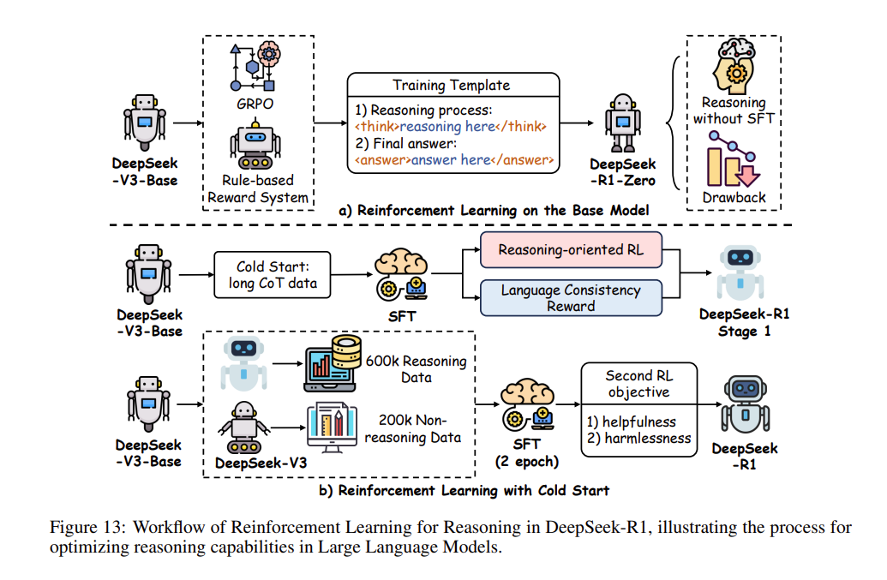
图13（Fig. 13）：DeepSeek-R1 中用于推理的强化学习工作流（Workflow of Reinforcement Learning for Reasoning in DeepSeek-R1），生动展示了优化大型语言模型推理能力的宏大进程。
这种极其高效的精简设计，在大幅削减训练开销（reducing training overhead）的同时，完美保留了策略更新的稳健性（robustness of policy updates）。受惠于此，极度昂贵的大规模强化学习得以在资源受限的系统上全面部署，使得跨越长链条轨迹的推理策略能够进行一次又一次的迭代与精炼。通过将策略优化死死控制在可管理的算力边界（manageable computational bounds）之内，GRPO 成功确立了 DeepSeek-R1-Zero 作为一种“用以爆发式增强推理能力且可大举扩展的解决方案（scalable solution）”的划时代地位（正如 图13 所直观描绘），彻底将该模型淬炼成了当代“由强化学习驱动的推理研究（RL-driven inference research）”最无可动摇的基石。
-
基础真格强化学习（DeepSeek-R1-Zero）：DeepSeek-R1-Zero 生动地诠释了大规模强化学习在不依赖传统的 SFT（监督微调）作为初始步骤的情况下，如何展现出提升 LLM 推理能力的变革性潜力。相反，它大胆采用了一种纯粹由强化学习驱动的自我进化范式（pure RL-driven self-evolution paradigm）。这种方法使得模型能够通过奖励反馈（reward feedback）来迭代优化其内部的思维链（internal CoT），从而自主地发展出高度复杂的推理技能，彻底绕过了传统 SFT 中通常需要预先标注的大规模数据集。其结果是，在极其复杂的多步推理挑战（e.g., 数学问题求解与逻辑推导）中，性能迎来了肉眼可见的飞跃，雄辩地证明了 RL 拥有从一个最原始的基础模型（base model）中直接解锁出进阶推理潜能的无穷力量。作为当今最强悍的开源推理模型之一，DeepSeek-R1-Zero 的空前成功不仅凸显了“冷启动强化学习策略（cold-start RL strategies）”的切实可行性，更为传统的训练管线（training pipelines）提供了一种资源效能极其优越的替代方案，同时也历史性地达成了与最顶尖业界标杆（state-of-the-art benchmarks）相并肩的非凡成就。
-
逐步奖励建模（Stepwise Reward Modeling）：为了在漫长的轨迹 \(\tau = (s_1, a_1, \dots, s_T, a_T)\) 中牢牢指引推理方向，DeepSeek-R1 引入了一个精密入微的逐步奖励模型（stepwise reward model）\(f_\theta\)。该模型能在每一个时间步下发细粒度的专属反馈，公式定义为 \(r_t = f_\theta(s_t, a_t | \mathcal{D}_{\text{reasoning}})\)。这里的 \(\mathcal{D}_{\text{reasoning}}\) 包含了经过人类标注、带有步骤级正确性标签（step-level correctness labels）的 CoT 序列。相比于那些直到序列终点（end-of-sequence）才给出极其稀疏反馈判定的常态，这种极其稠密的奖励结构（dense reward structure）能够就每一个单点推理步骤的质量，第一时间提供极具针对性、立等可操作的深度洞察（immediate, actionable insights）。这便使得大模型能够以一种外科手术般的精准度（precision）来极限微调自身的推演策略。此外，该奖励模型因为汲取了精心策划的专家数据，得以确保反馈信号与人类真实的推理准绳（human reasoning standards）严丝合缝地对齐，进而在极大限度横跨推理链的时空跨度内，培育并锁死了推导的一致性与准确度（consistency and accuracy）——这也正是模型得以正面攻克那些需要开展漫长逻辑综合（protracted logical synthesis）任务的核心依仗。
-
自适应探索（Adaptive Exploration）：DeepSeek-R1 进一步通过将一种“自适应探索机制（adaptive exploration mechanism）”嵌入到其目标函数中，重塑并增强了策略优化：
在这个公式里，关键的熵项（entropy term）\(\mathcal{H}\) 被一个自适应系数（adaptive coefficient）\(\lambda_t = \alpha \cdot \exp(-\beta \cdot \text{Var}(R(\tau_{1:t})))\) 调控。这个机制的精妙之处在于，它可以基于整条轨迹不断起伏的奖励方差（reward variance）来进行实时的动态微调。这种设计在探索（exploration）与利用（exploitation）之间达成了完美的平衡：它鼓励模型在训练的早期尽量探索各种多样化的推理路径；而随着奖励方差随之缩减趋稳，它又引导模型迅速向最优策略收敛（converging to optimal strategies），从而在强化推理进阶流程的过程中，一举拔高了模型的鲁棒性（robustness）与提纯效率（efficiency）。
- 轨迹剪枝（Trajectory Pruning）：为了在极其烧脑的推理过程中极致压榨并优化计算效能（computational efficiency），DeepSeek-R1 极具创新地实装了一个双注意力机制的评论家（dual-attention critic）：\(V_\psi(s_t) = \text{LocalAttn}(s_t) + \text{GlobalAttn}(s_{1:t})\)。它能将局部的步骤评估（local step assessments）与全局的轨迹上下文（global trajectory context）相互结合，以此来精准掂量出每一个状态的真实价值。一旦触发 \(V_\psi(s_t) < \gamma \cdot \max_{k \le t} V_\psi(s_k)\) 条件，雷厉风行的剪枝（Pruning）机制便会启动，毅然终止掉这条价值低廉的劣质推理路径（terminating low-value reasoning paths），从而将极其宝贵的算力彻底集中、倾注于那群希望光明的优秀轨迹之上。通过彻底地根除无谓的铺张探索（reduces wasteful exploration），该机制不仅按下了加速收敛的车速键，更确保了模型能心无旁骛地优先专注在最顶尖的高质量推理序列上（prioritizes high-quality reasoning sequences），这正是它能在那些复杂推断任务中横扫千军、成就非凡表现的幕后推手。
4. 带有冷启动的推理强化学习（RL for Reasoning with Cold Start）
⚠️ 译者（博主）注 / 勘误： 原文综述在该章节（5.2.4 节）的表述存在明显的逻辑矛盾与概念混淆。原作者试图描述
DeepSeek-R1引入了冷启动（Cold Start），却在行文中错写成了DeepSeek-R1-Zero并称其“摒弃了 SFT”。 根据《DeepSeek-R1》官方原论文，R1-Zero 采用的是无 SFT 的纯强化学习（纯白板起步）；而真正的带冷启动的强化学习（RL with Cold Start），指的恰恰是 DeepSeek-R1 正式版中，为了解决 R1-Zero 早期训练出现语言混杂、可读性差等问题，而在进行大规模 RL 之前，率先利用了一小批极高质量的长思维链（Long CoT）数据进行了一轮监督微调（SFT）来作为真正的“冷启动”初始化。 为保留学术原貌供读者对照，下方将有概念冲突的原文翻译用删除线划去，并根据原论文真实意图重新表述了该小节的精确内涵。
【保留的原文翻译，存概念混淆】：DeepSeek-R1-Zero 进一步将强化学习的应用推向了新维度。它采用了一种极具开创性的冷启动方法（cold-start approach），彻底摒弃了传统的监督微调（SFT），而是让模型从一个未经任何训练的基础状态（untrained base model）起步，完全依赖大规模强化学习来打天下。
这种自我进化策略（self-evolutionary strategy）严格通过一轮又一轮的迭代反馈（iterative feedback）来提纯推理能力。在无需任何预先标注数据依赖（pre-annotated data dependencies）的情况下，它硬是凭空孕育出了极其稳健的思维链序列（CoT sequences）。通过直接在推理任务上进行真刀真枪的强化特训，DeepSeek-R1-Zero 淋漓尽致地展现了 RL 方法的多功能性与通用性（versatility），其最终取得的性能，甚至能够与那些以 SFT 作为初始化的拔尖模型（例如它的同源进化版 DeepSeek-R1）相媲美或更胜一筹（comparable to or exceeding）。
这种“冷启动”范式不仅极大地打碎了模型演进对海量人工标注数据集（extensive labeled datasets）的严重依赖，更炫技般地展示了强化学习自身在自主发展（autonomously develop）极度复杂推理能力方面的无穷潜力。它为未来大型语言模型（LLM）的后续研发，精准提供了一个不仅高效而且高度可扩展的发展蓝图（scalable paradigm）。
【正确意图重述】：尽管 DeepSeek-R1-Zero 证明了纯粹强化学习的巨大上限潜力，但为了进一步提升 RL 的应用效能并克服其在早期试错阶段出现的语言混杂、可读性断崖等严重缺陷，DeepSeek-R1 进一步引入了一种全新的范式——带有冷启动的探索策略（cold-start approach）。它并没有完全摒弃 SFT，相反，在启动浩大的强化学习狂欢之前，它首先精心利用了一小撮极其高质量、人类可读性极强的“长思维链（Long CoT）”数据，对基础模型执行了一轮浅层但极其关键的监督微调（SFT）。
这一冷启动阶段（RL with Cold Start）相当于给正要投身题海的大语言模型打好了一个扎实的认知锚点，从而一举避免了纯 RL 机制初期在浩瀚状态空间里“乱撞”的窘境。不仅显著加速了模型后续收敛的速度，通过后续紧接的多轮强化学习与迭代反馈（iterative feedback），DeepSeek-R1 出乎意料地孕育成了具备极高可读性和严密逻辑的思维链序列（CoT sequences）发动机。事实证明，这套混合进化管线使得它在多项硬核测试中的实力直接比肩或彻底碾压了纯白板起步的模型。
这种引入小规模高质量引导数据的“冷启动”架构，既卸下了传统 SFT 对海量（百万级）人工标注数据的庞大包袱，又完美释放了强化学习自身在自主深耕（autonomously develop）极度复杂推演能力上的无穷潜力，可谓是为后千万亿参数时代的 LLM 开发，雕刻出了一幅至尽高效且高度可扩展的发展蓝图（scalable paradigm）。
总而言之，强化学习确确实实为全方位增强大模型的逻辑推理，提供了一个极具光明前景的宏大框架。在这个大框架下，卓有成效的奖励体系设计（effective reward design）、诸如 GRPO 等策略优化机制（policy optimization），以及精巧的探索策略（exploration strategies），依然是决定模型能否进化向更高维度的关键基石。
💡 未来研究展望： 学术界的下一步探索大可驶向混合型方法（hybrid methods）的广阔深海——通过将模仿学习（imitation learning）机制或者自监督目标（self-supervised objectives）无缝融入其中，来对这些推理硬实力进行更深层次的极致打磨，从而彻底夯实并确立强化学习在推进大语言模型推断进程中的绝对统治先锋地位（solidifying RL’s role in advancing LLM inference）。
⚡ 面向高效的后训练 (PoLMs for Efficiency)
建立在前文探讨的诸多后训练优化技术基础之上，后训练效能优化（post-training efficiency）专门将准星瞄准了大型语言模型（LLMs）在初始预训练之后的运行性能（operational performance）。其核心目标在于优化关键的部署指标（例如，处理速度、内存占用以及资源消耗），从而使体型往往因庞大而受限的 LLMs 在真实世界的实际业务中真正具备落地的可行性与实用性。
实现这类的后训练效能跃升，主要依靠三大核心技术流派：
- 模型压缩（Model Compression, §6.1）：通过诸如剪枝（pruning）和量化（quantization）等重度工程手段，全方位缩减模型整体计算足迹（computational footprint）。
- 参数高效微调（Parameter-Efficient Fine-Tuning, §6.2）：常常也被简称为 PEFT。它通过仅更新模型极小一部分原有参数，或者采用挂载专用模块（specialized modules）的方式，从而极大降低重训练成本，雷厉风行地加速模型对新任务的自适应调节。
- 知识蒸馏（Knowledge Distillation, §6.3）：将一个规模庞大、预训练精良的“教师模型”中的经验心血，完美转授给一个体格更小的“学生模型”，使得小模型在大幅缩减资源需求（reduced resource demands）的严苛条件下，依然能够迸发出不逊于前者的性能表现。
1. 模型压缩（Model Compression）
模型压缩（Model Compression）涵盖了学术与工业界长期沉淀的一整套技术方案。这套方案的使命，旨在通过结构调整的手段，大举剥减 LLMs 庞冗的体积与计算需求。其武器库主要引进了三大利器：
- 后训练量化（Post-training quantization）
- 参数剪枝（Parameter pruning）
- 低秩近似（Low-rank approximation）
1. 后训练量化（Post-training Quantization）
作为大型语言模型（LLMs）极为关键的核心压缩大法，量化（quantization）的核心机制在于将高精度的数据类型 \(X^H\)（例如 32 位浮点数，32-bit floating point）降维转换为低精度的格式 \(X^L\)（例如 8 位整数，8-bit integer）。这种维度的转换可以通过以下精准的数学公式进行描述：
在这里，\(\mathcal{K}\) 代表了量化常数（quantization constant），而 \(\text{absmax}\) 指代元素序列中的绝对最大值。\(\text{Round}\) 函数则充当了转化枢纽，负责将浮点数圆整为整数。
LLM 的量化宇宙主要被划分为两大核心派系：后训练量化（PTQ, post-training quantization） 以及 量化感知训练（QAT, quantization-aware training）。其中，PTQ 提供了一种极其讨巧的轻量级方案——它允许在预训练彻底结束之后，仅凭借极其微小的一批校准数据集（calibration dataset）来对模型的权重和激活值进行后期调整。正如 图14（Fig. 14） 所示，这种调整不仅大举拔高了计算资源效能，还有效保全了模型的性能标尺。
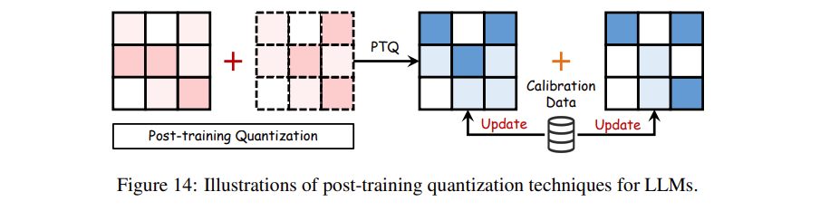
图14（Fig. 14）：LLM 后训练量化技术（post-training quantization techniques）的视觉图解说明。
在大踏步演进的过程中，后训练量化技术衍生出了以下几座雄伟丰碑：
-
仅权重量化（Weight-Only Quantization, WOQ）：顾名思义，WOQ 的重心全盘押注在压缩模型权重（model weights）以榨取效率。典型神作如 GPTQ，它采用了最优脑量化（Optimal Brain Quantization, OBQ）执行逐层量化，极限将权重压到仅余 3 或 4 bits，大幅释放内存空间并暴增处理速度。为了将极限推向深渊，QuIP 甚至为 2-bit 级别的微容量身定做了非相干处理（incoherence processing）技术，实现了无可比拟的紧凑体质。与此同时，AWQ 和 OWQ 重点盯防量化中的“精度流失”——通过为极少数对预测极其敏感的权重强行保留高精度（high precision），从而将推理期间的准确率损耗降至极微。不仅如此，SpQR 更是将稀疏量化与解码过程双剑合璧，在极尽保全模型响应能力的前提下，促成了极其高效的破局性逐字推理（token-by-token inference）。
-
权重-激活联合量化（Weight-Activation Co-Quantization, WAQ）：不同于前者的单点爆破，WAQ 这招“双管齐下”的策略直接将权重（weights）与激活（activations）同时卷入压缩漩涡。LLM.int8() 利用高精度存储成功化解了令人棘手的激活值离群点（activation outliers），并在硬生生全体降至 8 bits 的同时保持了傲人的稳固性能。SmoothQuant 则实施了极为高明的逐通道缩放（per-channel scaling），直接把激活值上那灾难般的极值门槛“四两拨千斤”地顺带转移给了权重端，轻松斩获了肉眼无损的完美奇效。沿此思路开拓，OS+ 继续靠通道级的缩放平移来瓦解离群点的冲击；OmniQuant 直接选择通过对极值截断阈值（clipping thresholds）进行巧夺天工的微调来强行跨越门槛；为了追求更极致的算力榨取，RPTQ 甚至通过对相似通道直接予以聚类打包，保证了量化参数上的高阶统一。
-
KV 缓存量化（KV-Cache Quantization, KVQ）：随着当下模型需要吞吐的输入 Token（字元）急剧连年暴涨，KV 缓存的恐怖内存侵占已然成为悬在开发者头顶的最大达摩克利斯之剑。为此破局的 KVQ 应运而生。KVQuant 面向极度夸张的长上下文（large context lengths）推理抛出了量身定做的方案，以几乎可忽略不计的微小折损保住了推理基线。KIVI 另走偏锋，直接为 Key 和 Value 缓存割裂设计了截然相反的策略组合，在史无前例地摒弃微调（without fine-tuning）约束下，达成了不可思议的 2-bit 高维降解。集大成者如 WKVQuant 更是提纯升华了一套二维量化阵术与跨区块正则化（cross-block regularization），在惊世骇俗的维度上，交付出了丝毫不亚于重量级联合量化那般近乎无损的内存瘦身奇迹。
💡 补充说明： 表5（Table 5） 直观展示了学术界与工业界几款极为拔尖的量化方法所交出的性能答卷（performance metrics）。
表5：大型语言模型量化方法概览 (2021–2025) 本表对处于风口浪尖的代表性量化技术进行了全景汇总。它跨越三大核心度量维度进行了考量测评：位宽（Bit Width）（涵盖了权重 Weights、激活 Activations 和 KV 缓存的压缩极值）、困惑度差值（Perplexity Difference）（在 Wikitext-2 和 C4 经典数据集上测定的性能抖动差异，数值越小越不损害性能），以及提速比（Speedup）（相较于未压缩的基线模型所赢取的计算飙升倍率）。
| 类别 (Type) | 方法 (Methods) | 代表性大模型 (Main LLMs) | 权重 (W) | 激活 (A) | KV | 困惑度差值 Wikitext-2 | 困惑度差值 C4 | 提速比 (Speedup) | 发布时间 |
|---|---|---|---|---|---|---|---|---|---|
| WOQ | GPTQ | OPT-175B | 3 | 16 | 16 | 0.34 | 0.23 | 3.24× | 2023年3月 |
| SpQR | LLaMA-30B | 3.89 | 16 | 16 | 0.15 | 0.1 | 2.0× | 2023年6月 | |
| QuIP | LLaMA2-70B | 2 | 16 | 16 | 3.007 | 3.228 | - | 2023年 | |
| AWQ | LLaMA2-70B | 3 | 16 | 16 | 0.42 | - | 3.2× | 2024年 | |
| OWQ | LLaMA-65B | 3.01 | 16 | 16 | 0.72 | - | - | 2024年3月 | |
| EasyQuant | LLaMA-65B | 4 | 16 | 16 | 3.98 | 6.30 | - | 2024年3月 | |
| Agile-Quant | BLOOM-7.1B | 8 | 8 | 16 | 11.73 | 14.70 | 1.8× | 2024年3月 | |
| LUT-GEMM | LLaMA-65B | 3 | 16 | 16 | 0.14 | - | 2.04× | 2024年4月 | |
| SqueezeLLM | LLaMA-13B | 3 | 16 | 16 | 0.51 | 0.67 | 2.4× | 2024年6月 | |
| DAQ | LLaMA2-30B | 3 | 16 | 16 | 4.23 | - | - | 2024年10月 | |
| MobileQuant | TinyLLaMA-1.1B | 4 | 16 | 16 | 15.6 | - | - | 2024年10月 | |
| GWQ | LLaMA2-13B | 4.63 | 16 | 16 | 4.88 | 6.47 | 1.2× | 2024年12月 | |
| WAQ | QT | OPT-1.3B | 8 | 8 | 16 | 17.74 | - | - | 2021年3月 |
| ZeroQuant | GPT-J-6B | 8 | 8 | 16 | 0.16 | - | 3.67× | 2022年 | |
| LLM.int8() | OPT-13B | 8 | 8 | 16 | - | 0.00 | 1.22× | 2022年 | |
| RPTQ | OPT-175B | 4 | 4 | 16 | 2.26 | 2.15 | - | 2023年5月 | |
| Olive | BLOOM-7B | 4 | 4 | 16 | 2.11 | 2.24 | 4.5× | 2023年6月 | |
| ZeroQuant-FP | LLaMA-30B | 4 | 8 | 16 | 0.18 | 0.13 | - | 2023年7月 | |
| SmoothQuant | OPT-175B | 8 | 8 | 16 | 0.18 | - | 1.56× | 2023年10月 | |
| OS+ | LLaMA-65B | 4 | 4 | 16 | 5.77 | - | - | 2023年10月 | |
| OmniQuant | LLaMA-7B | 4 | 6 | 16 | 0.41 | 0.55 | - | 2024年3月 | |
| RoLoRA | LLaMA3-8B | 4 | 16 | 16 | - | - | - | 2024年9月 | |
| HotaQ | LLaMA | 4 | 4 | 8 | - | - | 2.5× | 2024年10月 | |
| Q-DiT | LLaMA3-8B | 6 | 8 | 16 | - | - | - | 2024年11月 | |
| KVQ | KVQuant | LLaMA-65B | 16 | 16 | 2 | 0.19 | 0.11 | 1.4× | 2024年1月 |
| WKVQuant | LLaMA-13B | 4 | 16 | 4 | 0.12 | 0.14 | - | 2024年2月 | |
| QAQ | LLaMA3-8B | 4 | 16 | 16 | - | - | 10× | 2024年4月 | |
| ZipCache | LLaMA3-8B | 4 | 16 | 16 | 0.38 | - | 4.98× | 2024年5月 | |
| KIVI | LLaMA2-13B | 4 | 16 | 16 | - | - | 2.6× | 2024年7月 | |
| DL-QAT | LLaMA2-7B | 4 | 16 | 16 | 6.3 | - | - | 2024年11月 |
2. 参数剪枝（Parameter Pruning）
在优化大语言模型以求更高效率的征途中，参数剪枝（Parameters Pruning）占据着举足轻重的战略地位。这套绝技的目标无比纯粹——在丝毫不退让推理准确度（without sacrificing accuracy）的红线前提下，极限压缩大模型那令人生畏的体积与计算复杂度。
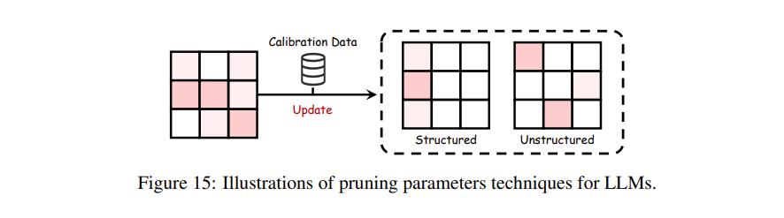
图15（Fig. 15）：LLM 中参数剪枝技术（pruning parameters techniques）的可视化工作流程。
正如 图15（Fig. 15） 所生动勾勒的那样，学术界的各派剪枝武功主要可以被划分为两大核心门派：非结构化剪枝（Unstructured Pruning） 和 结构化剪枝（Structured Pruning）。
-
非结构化剪枝（Unstructured Pruning）：这属于一种“见缝插针”的零散剥离法。它通过残酷抹杀掉网络中那些无关紧要的散碎权重，以此来大幅拔高模型内部的矩阵稀疏度（sparsity）。
- 传奇框架 SparseGPT 以雷霆手段做到了所谓的“一击必杀”（one-shot pruning），它在仅仅产生微乎其微损失（minimal loss）的情况下，竟然硬生生将模型砍出了高达 60% 的稀疏空白带。
- Wanda 是一套崇尚极简的快刀，它无需漫长的重训练期（without requiring retraining），只盯着权重量级（weight magnitudes）以及激活值下重手删减。
- SAMSP 则请出了“海森矩阵（Hessian matrix）”这位高维度的敏感性裁决者，用来对稀疏性执行动态且精准的手术级微调，旨在于把误差压缩到极限。
- DSNoT 热衷于利用循序渐进的迭代剪枝循环（iterative pruning cycles）来平稳托举性能。
- 而底层的 Flash-LLM 甚至在硬件交互上做起了文章，它选择性地从显存全局中检索出稀疏权重碎片，再于芯片内的缓冲区（on-chip buffers）将其极尽稠密地重构成一体，从而换取了数据传输路上的极限畅通无阻与高效计算。
-
结构化剪枝（Structured Pruning）：与非结构化剪枝的散兵游勇不同，这一门派主打一个“大开大合”——直接把刀挥向模型架构里成建制的整块参数群（entire parameter groups）。这种成块削减不但能化繁为简，而且极其极大地迎合与拔高了硬件底层的执行效率（hardware efficiency）。
- LLM-runer 就在这方面极富心得，它一边在 LLaMA 体内开展雷达般的权重新星扫描与评估，一边靠着 LoRA 在被修剪过后的废墟中快速重燃并挽回遗失的原本准确率（recover accuracy post-pruning）。
- FLAP 以一套独家自研的结构化衡量维度在未经微调（without fine-tuning）的条件下对压缩极限进行了极限倒逼。
- 绝顶聪明的 SliceGPT 将传统的降维打击主成分分析法（PCA）引入局中，在切片剪裁的同时维持住高企的执行效率。
- Sheared LLaMA 使用了内嵌正则化的软刀子法则（regularization-based pruning），从宏观曲面上不断打磨和雕塑出更完美的模型轮廓。
- LoRAPrune 在执行结构化砍伐时，极其倚重依靠 LoRA 提供的重要性评估报告作为自己发力的蓝图，不断进行结构上的迭代消解。
- 最为巧妙的当属 Deja Vu，它在极致控制因瘦身导致的预测延迟（latency）的同时，通过前瞻性地预测并留下那些高权重的关键注意力头（attention heads）和 MLP 层参数，靠一手上下文稀疏性（contextual sparsity）的奇招维稳住了令人惊叹的大局准确率。
3. 低秩近似（Low-Rank Approximation）
低秩近似（Low-Rank Approximation） 旨在通过用较小的矩阵 \(U\) 和 \(V\) 来近似原来的权重矩阵 \(W\)，从而实现 \(W \approx UV^\top\)，以此来极限压缩大语言模型（LLMs）。这种打法不仅干净利落地削减了参数数量，还大幅提升了模型运转的运算效率（operational efficiency）。
- 比如，TensorGPT 采用了张量列分解（Tensor-Train Decomposition, TTD）来构建出一种更加高效的嵌入格式（embedding format）。
- LoSparse 则独辟蹊径，将低秩近似与剪枝（pruning）技术巧妙融为一体，专门用以压缩那些连贯的神经元组件（coherent neuron components）。
- FWSVD 祭出了一套加权奇异值分解（weighted SVD）的核心方法。
- ASVD 同样不甘示弱，提供了一种免训练（training-free）的 SVD 终极替代方案，这两者都将准星死死对准了后训练环节的极致效率。
- 最后，SVD-LLM 通过在奇异值（singular values）与压缩损失（compression loss）之间建立起直接的数学羁绊，进一步拔高了其压缩的极限效果。
2. 参数高效微调（Parameter-Efficient Fine-Tuning, PEFT）
参数高效微调（PEFT）的流程核心在于：彻底冻结大语言模型（LLM）的整个骨干网络（backbone），同时只对一小批新增的参数进行修正与训练。如 图16（Fig. 16） 所生动揭示的那样，PEFT 方法主要在江湖上被划分为四大门派：附加式 PEFT（Additive PEFT）、选择式 PEFT（Selective PEFT）、重参数化 PEFT（Reparameterized PEFT） 以及 混合式 PEFT（Hybrid PEFT）。
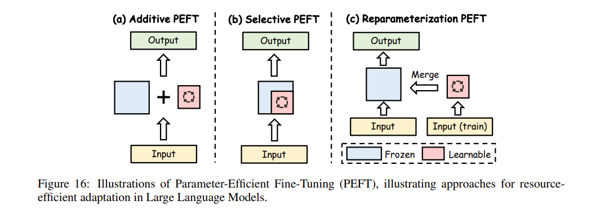
图16（Fig. 16）：参数高效微调（PEFT）的图解示例，直观展示了大型语言模型中资源高效适配（resource-efficient adaptation）的不同演进路线。
1. 附加式 PEFT（Additive PEFT）
附加式 PEFT 会在丝毫不改动原有参数的基础上，向 LLM 的体内引入全新的可训练模块（trainable modules）。这条路不仅向特定的任务微调（task-specific tuning）敞开大门，同时还完好无损地保留了基础模型（base model）内深藏的渊博知识，在微调效率上居功至伟。
-
适配器（Adapters）：Adapter 本质上是将一个个紧凑的小巧层深深扎根缝合进 Transformer 的层叠块结构之中。它的数学定义十分凝练：
\[ Adapter(x) = W_{up}\sigma(W_{down}x) + x \]其中，一个适配器层囊括了一个向下投影矩阵 \(W_{down} \in \mathbb{R}^{r \times d}\)、一个非线性激活函数 \(\sigma\)，与一个向上投影矩阵 \(W_{up} \in \mathbb{R}^{d \times r}\)。在这里，\(d\) 代表隐藏层的维度（hidden layer dimension），而 \(r\) 则是掐紧的瓶颈维度（bottleneck dimension）。这种漏斗形构造在大幅削减复杂度的同时，毫不留情地保住了模型原有的高超战力。依托着这套骨架：
- Serial Adapter 在每个 Transformer 层块内开创性地加装了两个串联的流转模块。
- AdapterFusion 则凭借着把适配器挪到了 Add&Norm 步骤的后方，极大提振了运行效率。
- Parallel Adapter (PA) 并行发力，让适配器直接与各个子层（sublayers）并驾齐驱；而 CoDA 则也是在子层并行的思路上拉满了极致的运算步调。
- 与 AdapterFusion 的逻辑不同，MerA 借助了一手最优化传输机制（optimal transport techniques）来降维打击，对权重和激活参数执行了适配器的强势一统。
-
软提示（Soft Prompt）：Soft prompt 直接奔着输入序列就去了。它通过凭空塞进连续的可调教向量（adjustable vectors），来取代掉那些对死板离散字元（discrete tokens）纠缠不休的苦差事，照样能把性能给捧上云端。这个法子的经典公式长这样：
\[ X^{(l)} = [s^{(l)}_1, \dots, s^{(l)}_{N_s}, x^{(l)}_1, \dots, x^{(l)}_{N_X}] \]式中，\(s^{(l)}_i\) 标志着软提示字元（soft prompt tokens），而 \(x^{(l)}_i\) 则是老老实实的原始天然字元输入；\(N_s\) 和 \(N_X\) 则各自对应了这两方人马在数量上的宏观大总和。
- Prefix Tuning 在 Transformer 层际之间独树一帜地插入学习型指引向量，并靠重参数化（reparameterization）牢牢定身稳压底盘，后续又被 P-Tuning v2 与 APT 不断精修与提纯升华。
- 另一端，Prompt Tuning 死磕在最初的那层嵌入层（initial embedding layer）上，就靠这微不可察的计算碎银杠起巨无霸优化重担。
- Xprompt 与 IDPG 把提示的生成和切入打造成了毫不拖泥带水的极速流水线（streamline）。
- 诸如 SPoT 和 PTP 这些招式疯狂收割着稳定性和收敛速度（convergence speed）的红利；而 DePT 手握着 SMoP 这种硬核砍刀，索性从繁琐的提示深层结构入手，把算力巨兽那庞大的胃口生生削去大半。
-
其他附加式方法（Other Additive Methods）：在见识过早期的诸般法术之后，\((IA)^3\) 与 SSF 猛然接过了向后训练效率（post-training efficiency）进攻的衣钵。它们通过对模型参数发起虽然最甚微小却又具有绝对爆破力的调整（minimal but powerful adjustments）来打出震撼效果。这其中的自注意力（self-attention）及前馈网络（FFN）在数学天地里的操作被精简为：
\[ SA(x) = \text{Softmax}\left(\frac{Q \cdot (l_k \odot K)^T}{\sqrt{d_{head}}}\right) \cdot (l_v \odot V) \]\[ FFN_{transformer}(x) = W_{up} \cdot (l_{ff} \odot \sigma(W_{down}x)) \]
在此处，\(\odot\) 就代表了无双的哈达玛积（Hadamard product，也就是逐元素乘法）。诸如用来随心收缩的缩放向量（scale vectors）\(l_k\) 与 \(l_v\) 完全能滑不留手地融化嵌进诸如 \(A_Q\) 和 \(A_W\) 这类原本的深层权重矩阵身躯里。不仅如此，顶级的 IPA 干脆接下了令 GPT-4 这种大语言模型能与用户高度定制化（user-specific requirements）需求对齐的巨任。最关键的杀手锏是，这法器居然自始至终都不必对底盘老祖宗的大模型结构做一分半毫的改筋动骨，从而在微调流程中高调坐拥并死守了效率的高地。
2. 选择式 PEFT（Selective PEFT）
选择式 PEFT（Selective PEFT） 通过仅仅微调极其有限的一小批参数子集（subset of parameters）来提升效率，如 图16(b)（Fig. 16(b)） 所示。这个过程牵涉到对参数 \(\theta = \{\theta_1, \theta_2, \dots, \theta_n\}\) 施加一个二值掩码（binary mask）\(M = \{m_1, m_2, \dots, m_n\}\)，其中每一个 \(m_i\) 都昭示着 \(\theta_i\) 是否被选中去赴微调的宴局。更新后参数集合（updated parameter set）的数学表达如下式：
其中，\(\eta\) 是学习率（learning rate），\(\frac{\partial \mathcal{L}}{\partial \theta_i}\) 则是损失函数（loss function）的梯度。唯有那些入围选中的参数（即 \(m_i = 1\)）才能迎来更新更新，从而在捍卫有效性的同时大幅削减算力花销。
- 早期的破局者囊括了 Diff pruning，它巧借一个可微的 \(L_0\)-范数（differentiable \(L_0\)-norm）来对可学习的二值掩码施加正则化约束。
- FishMask 顺着费舍尔信息（fisher information）的藤蔓去物色更具相关性的参数。
- LT-SFT 请出了大名鼎鼎的彩票假设（Lottery Ticket Hypothesis）来精准锚定那些最具冲击力的关键参数。
- SAM 动用了二阶近似（second-order approximations）作为甄选的量尺。
- Child-tuning 在一个子网络（child network）之中展开了对参数的动态海选。
- 此外，像 FAR 和 BitFit 更是将视线聚焦在定向优化特定参数群组（specific parameter groups）上，把选择式 PEFT 演绎到了新高度。
3. 重参数化 PEFT（Reparameterized PEFT）
重参数化 PEFT（Reparameterized PEFT） 主要把宝押在了低秩参数化（low-rank parameterization）上以求榨取极限效率，如 图16(c)（Fig. 16(c)） 所展示的那样。名震天下的 LoRA（Low Rank Adaptation） 首创性地牵出两块全新的可训练矩阵——\(W_{up} \in \mathbb{R}^{d \times r}\) 以及 \(W_{down} \in \mathbb{R}^{r \times k}\)，强行对输出进行了如下改写：
其中 \(\alpha\) 是一个缩放因子（scaling factor）。这种打法彻底打开了一扇通往新任务的高效适配之门，同时死死守住了模型最深层的核心知识（core knowledge）。伴随着这套思路的开枝散叶，演化出了一大批令人惊叹的极客变种：
- 沿着 LoRA 的足迹，Intrinsic SAID 将微调的参数空间压缩到了极致空间，进一步打碎了计算层面的严苛索求。
- 在极富动态的变种战场里，DyLoRA 和 AdaLoRA 大展拳脚，它们基于特定任务的需求来动态自适应地拿捏秩数（adapt rank dynamically）。最为生猛的是，AdaLoRA 毫不客气地塞进了一套基于 SVD 的剪枝杀招（SVD-based pruning），以此来强行拉高效率的天花板。
- 另一端，SoRA 大刀阔斧地砍去了正交性约束（orthogonality constraints），极度简化了内部的运转流程；而 Laplace-LoRA 破天荒地祭出了贝叶斯校准（Bayesian calibration）来统帅微调。
- Compacter 与 VeRA 则是继续在压低参数复杂度（parameter complexity）这条路上疯狂突进。
- 除此之外，DoRA 将优化矛头精准逼向了方向分量（directional component），HiRA 更是放出哈达玛积（Hadamard product）杀招专门应付高秩更新（high-rank updates），两者合力在效率与性能拔高上双双斩获奇效。
- 面对接踵而至的多重任务汪洋与变幻莫测的演化领域（evolving domains），Terra 巧妙糅入了一个随时间演变的矩阵（time-varying matrix），ToRA 则死死握住塔克分解（Tucker decomposition）的老虎钳，在 LoRA 的深邃结构里不断动刀升级。
- 在令人眼花缭乱的架构设计之余，PiSSA 和 LoRA-GA 另辟蹊径，依托 SVD 与梯度对齐（gradient alignment）给 LoRA 的初始化（initialization）疯狂上色。
- 与此同时，LoRA+、LoRA-Pro 连带 CopRA 等流派极其刁钻地精研并打磨起了梯度更新策略（gradient update strategies）。
- 最终，ComLoRA 以一手极具野心的竞争性学习机制（competitive learning）为试金石，在大浪淘沙里残酷筛除了劣质者，决选出了最具统治力的极致 LoRA 部件。
4. 混合式 PEFT（Hybrid PEFT）
混合式 PEFT（Hybrid PEFT） 方法通过整合或优化各种微调策略来全方位提升后训练的效率。
- 众多技术中赫赫有名的 UniPELT，粗暴且干脆地在 Transformer 块内把 LoRA、前缀微调（prefix tuning）以及适配器（adapters）全部交织融合在了一起。该方法利用由前馈网络（FFNs）统领的门控机制（gating mechanism）来动态按需激活各个组件，并生成标量 \(G \in [0, 1]\)，从最终结果上极大地吃透并优化了参数的利用率。
- 另一项创意十足的战法 MAM Adapter 紧随其后做出了关键改良。它战略性地将前缀微调部署在了自注意力层（self-attention layers）的前线，同时在后方的前馈层中挂载了缩放后的并行适配器（scaled parallel adapters）。
- 此外，建立在神经架构搜索（NAS）基础之上的诸如 NOAH 和 AUTOPEFT 也没有缺席，它们通过为不同特定任务“量体裁衣”，自动揪出最优的 PEFT 配置，成功让后训练效率更上一层楼。
- HeadMap 更是祭出了一招贪婪法（greedy approach），生生在模型深处锚定了一系列在特定任务中挑起大梁的注意力头（attention heads，即所谓的知识电路 knowledge circuits）。借由迅速把这些金贵的注意力头输出映射回 LLM 的残差流（residual flow），模型的实战性能得到了凶悍的攀升。
- 最后，LLM-Adapters 构建出了一整套开箱即用的框架体系，专门用来在不同体量的 LLMs 体内高度集成花样繁多的 PEFT 项，确保模块排布能始终契合最高效的姿势。
3. 知识蒸馏（Knowledge Distillation）
知识蒸馏（Knowledge Distillation, KD） 构筑起了 LLMs 后训练优化蓝图中的最硬核地基技术。它赋予了我们跨体量传承的魔力——将渊博复杂的知识从庞然大物般的预训练教师模型（teacher model），无损空投进精悍小巧的学生模型（student model）脑中。这样一来，开发者便能在毫不折损火力的前提下极限压榨效率。
最初仅仅作为一种模型压缩（model compression）手段出道，如今的 KD 早已因为其能把混沌复杂的知识提炼进资源高效型架构（resource-efficient architectures）而在学术界与工程界声名大噪。有了它，把这帮大倾轧机器塞进诸如边缘设备（edge devices）和嵌入式系统（embedded systems）这类计算荒漠，也不再是痴人说梦。
通过巧妙利用教师模型那细致入微的输出分布（output distributions）——由于这远比非黑即白的传统硬标签（hard labels）含有更海量的细节——KD 直接让学生模型武装到了牙齿。学生端不仅能僵硬地复刻出最终的类别预测，甚至能原汁原味地还原出深深烙印在教师表征里的类间关系（inter-class relationships）与极为隐秘的模式关联（subtle patterns）。这个流程通常离不开去死磕一个复合损失函数（composite loss function），让监督学习目标（supervised learning objectives）和蒸馏定制的特定靶向互相较劲与妥协，由此以跳崖般的速度砍掉了算力和内存的胃口，同时却完好地护住了弥足珍贵的泛化能力（generalization capabilities）。
KD 最根本的运转齿轮，死死咬合在此处：也就是最小化一个合并了传统分类损失和蒸馏损失项的混合损失（hybrid loss）。在形式上，如果你手头握着教师模型吐出的软输出概率（soft output probabilities）\(\mathbf{p_t}\)、学生的预测输出 \(\mathbf{p_s}\)，外加真实无欺的底端标签（true labels）\(\mathbf{y}\) 与学生结果 \(\mathbf{y_s}\)，那么这套 KD 损失（KD loss）的真容便可以写成：
在此刻：
- \(\mathcal{L}_{CE}\) 是雷打不动的交叉熵损失（cross-entropy loss），只管死死盯住并捕捉生成结果和真实基准（ground truth）的对齐；
- \(\mathcal{L}_{KL}\) 代表了高深莫测的 Kullback-Leibler 散度（Kullback-Leibler divergence），它被用来当做测量师生两端分布分歧度（divergence）的准绳；
- \(\alpha \in [0, 1]\) 则是坐镇居中用于裁决这双方目标权重拉扯的一个超参数（hyperparameter）。
而所谓的软目标（soft targets）\(\mathbf{p_t}\)，常常会被一个名曰温度参数（temperature parameter）\(T\) 的变量软化处理（即 \(\mathbf{p_t} = \text{softmax}(\mathbf{z_t}/T)\)，此处的 \(\mathbf{z_t}\) 便是教师模型的逻辑值 logits）。这小小的动作让概率信息暴增，直接授权学生模型穿越了单板的标签精确度对错，能够亲眼去临摹并习得教师模型做出决策逻辑时那令人头皮发麻的微妙细节（decision-making nuances）。
知识蒸馏（KD）被广泛应用于资源受限环境下的模型压缩（model compression）与迁移学习（transfer learning）之中。在这些场景下，一个预训练好的教师模型将会化身指路明灯，为执行特定任务的学生模型引航。这款法术的杀伤力究竟有多大，往往取决于几个核心要素：教师模型的容量（teacher capacity）、学生模型的架构（student architecture）以及蒸馏损失的设计（distillation loss design）。
近期的前沿突破更是将 KD 从单纯的输出蒸馏（output distillation）中解放出来，从而在后训练优化（post-training optimization）环节催生了效率更加恐怖、适应性更为炸裂的大语言模型。依据对教师模型内部参数（internal parameters）和中间表征（intermediate representations）的访问权限级别，KD 方法可以被大刀阔斧地划归为两大阵营：黑盒知识蒸馏（Black-box KD）与之对立的白盒知识蒸馏（White-box KD）。
正如 表6（Table 6） 所展示的那样，我们对大型语言模型（LLMs）里五花八门的知识蒸馏技术（knowledge distillation techniques）做了一次系统性的总结，顺带也罗列了它们所依附的绝技（skills）、教师模型（teacher models）以及对应的学生模型（student models）。
💡 补充说明： 表6（Table 6） 直观展示了 2020 年至 2025 年之间各种代表性的大语言模型知识蒸馏方法概览。
表6：大型语言模型知识蒸馏方法概览 (2020–2025) 本表勾勒了这些核心的蒸馏技术，详细拆解了它们的技能、师生模型搭配、目标以及发布时间。榜单被粗暴地划分为黑盒 KD (Black-box KD)（仅限访问教师模型输出，通常是闭源 LLM 当道）与白盒 KD (White-box KD)（允许访问教师模型参数或内在分布的，基本来自开源圈）。这里面用到的术语包括：IF（指令遵循，Instruction Following）、CoT（思维链，Chain-of-Thought）、ICL（上下文学习，In-context Learning）、SFT（监督微调，Supervised Fine-Tuning）、D&S（散度与相似度，Divergence and Similarity）、RL（强化学习，Reinforcement Learning）、TP（思维模式，Think Pattern）、NLU（自然语言理解）以及 NLG（自然语言生成）。
| 类别 (Type) | 方法 (Methods) | 技能 (Skill) | 教师模型 (Teacher Model) | 学生模型 (Student Model) | 目标 (Objective) | 发布时间 |
|---|---|---|---|---|---|---|
| Black-box KD | SELF-INSTRUCT | IF | T5-LM, GPT-3 | GPT-3 | SFT | 2022年3月 |
| MT-COT | CoT | GPT-3 | T5 | SFT | 2022年10月 | |
| CoT Prompting | CoT | GPT-3, PaLM | T5 | SFT | 2022年12月 | |
| Fine-tune-CoT | CoT | GPT-3 | T5, GPT-2, GPT-3 | SFT | 2022年12月 | |
| SOCRATIC CoT | CoT | GPT-3 | GPT-2 | SFT | 2022年12月 | |
| ICL Distillation | ICL | GPT-2, BERT | GPT-2, BERT | SFT | 2022年12月 | |
| SSLM | CoT | GPT-3.5 | T5 | SFT | 2023年1月 | |
| LaMini-LM | IF | ChatGPT | Various Models | SFT | 2023年4月 | |
| SCOTT | CoT | GPT-neox | T5-3b | SFT | 2023年5月 | |
| Distilling Step-by-Step | CoT | PaLM | T5 | SFT | 2023年5月 | |
| Lion | IF | ChatGPT | LLaMA | - | 2023年5月 | |
| PaD | CoT | GPT-3.5-turbo | CodeT5 | SFT | 2023年5月 | |
| AICD | ICL | GPT-3.5-turbo | GPT-J | SFT | 2023年6月 | |
| KPTD | NLU | GPT-3.5 | GPT-2, LLaMA | SFT | 2023年6月 | |
| DRA | CoT | ChatGPT | GPT-J | SFT | 2023年10月 | |
| TDIG | CoT | GPT-3.5-turbo, GPT-4 | LLaMA | SFT | 2023年12月 | |
| Selective Reflection-Tuning | IF | ChatGPT | LLaMA | SFT | 2024年2月 | |
| DEBATUnE | IF/TP | ChatGPT | LLaMA | SFT + RL | 2024年2月 | |
| DeepSeek-R1 | TP | DeepSeek-R1, DeepSeek-V3 | LLaMA, Qwen | SFT | 2025年1月 | |
| White-box KD | DynaBERT | NLU | BERT, RoBERTa | DynaBERT, DynaRoBERTa | SFT | 2020年4月 |
| TED | NLU | GPT-2 | GPT-2 | D&S + SFT | 2022年10月 | |
| GKD | NLG/NLU/IF | T5-XL | T5 | D&S + RL | 2023年6月 | |
| MINILLM | IF | GPT-2, OPT, LLaMA | GPT-2, OPT, LLaMA | D&S | 2023年6月 | |
| RICD | IF | LLaMA | LLaMA | SFT + RL | 2023年7月 | |
| BabyLLaMA | IF | GPT-2, LLaMA | LLaMA | D&S | 2023年8月 | |
| MiniMoE | NLU/TP | GPT-2, Pythia | GPT-GPT-2, Pythia | SFT | 2023年11月 | |
| Genie | NLG | Falcon, LLaMA | FLAN, LLaMA | SFT | 2024年1月 | |
| Self-Rewarding | IF | LLaMA | LLaMA | SFT + RL | 2024年1月 | |
| DISTILLM | IF/NLG | GPT-2, OPT, OpenLLaMA | GPT-2, OPT, OpenLLaMA | D&S + RL | 2024年2月 | |
| AMMD | IF | OpenLLaMA | OpenLLaMA | D&S + RL | 2024年6月 | |
| MultiLevelOT | IF | LLaMA2, Mistral, Qwen, LLaMA3 | OPT, Pythia, Bloomz, mT0 | D&S + SFT | 2025年4月 |
1. 黑盒知识蒸馏（Black-box KD）
黑盒知识蒸馏（Black-box KD） 指的是这样一种情境：学生模型仅仅从教师模型的输出逻辑值（output logits）中展开学习，而彻底被切断了对其内部表征（internal representations）或架构细节的好奇心。这种方法最初由 Hinton 及其团队提出，完美契合了最经典的 KD 范式，并因其极佳的灵活性而被业界广泛采用。
黑盒 KD 最大的杀伤力优势在于它干脆将教师模型视为一个不透明的黑盒函数（opaque function），从而使得即使教师是受限访问的闭源专有模型（proprietary model）或是预训练模型，也能实现跨越结界的知识迁移（knowledge transfer）。在工程实战中，诸如 ChatGPT 和 GPT-4 这种巨无霸教师 LLMs 通常被请上神坛来生成高质量的输出。与此同时，较小的语言模型（small language models, SLMs）——包括 GPT-2、T5、Flan-T5 以及 CodeT5——则任劳任怨地充当接旨的学生模型。这些 SLMs 在经过效率优化后，依然能在维持强悍泛化能力（generalization capabilities）的同时稳坐钓鱼台，使得它们非常适合下放到资源受到极度掣肘的环境中（resource-constrained environments）。
2. 白盒知识蒸馏（White-box KD）
白盒知识蒸馏（White-box KD） 则通过深度榨取来自教师模型内部表征（internal representations）的额外内幕，大幅延展与升级了传统的蒸馏范式。当教师模型的架构是公开透明且可供访问的（known and accessible）时候，这种方法将大放异彩，因为它破例允许了远比黑盒更为丰富多维的监督手段（richer forms of supervision）。
与那些将教师冰冷地视为不透明函数的黑盒 KD 截然不同，白盒 KD 授予了学生模型无上的特权：学生不但能从教师那最终的输出逻辑值（output logits）中汲取养分，还能直接潜入内核，跟随着它的中间激活（intermediate activations）、隐藏层（hidden layers），甚至连那极其核心的注意力权重（attention weights）都能成为被复刻和学习的对象！
3. DeepSeek-R1：推理模式的直接蒸馏（Direct Distillation of Reasoning Patterns）
DeepSeek-R1 淋漓尽致地展现了 KD（知识蒸馏）的变革潜力（transformative potential）。它通过将错综复杂的推理模式（intricate reasoning patterns）从层级庞大的巨型模型中提炼出窍，无损灌输进紧凑的小架构之中，硬生生拉平了小型 LLM 的推理鸿沟。更令人拍案叫绝的是，它还完美规避了直接在这帮小身板上跑海量 RL（强化学习）所带来的计算包袱（computational burden）。
这一套被称为 基于数据的直接蒸馏（direct distillation） 打法，狂暴地吞下了一个由大型教师模型（large teacher model）极其精细捏造的约 80 万样本规模的极品数据集（curated dataset）。这笔巨额“财产”中，掺入了 20 万个从 DeepSeek-V3 口袋里掏出的非推理实例（non-reasoning instances），外加高达 60 万个历经 DeepSeek-R1-Stage1 检查点（checkpoint）疯狂自我盘剥出的推理实例（reasoned instances）。正是这批经过千锤百炼的样本，充当了对诸如 Qwen 以及 LLaMA 等一系列被砍到“微缩版”（mini-variants）的开源基座模型（open-source base models）大施 SFT（监督微调）心法的最强底座。借此一招，这些学生模型硬是吞下了那些通常只有顶级巨头模型才配拥有的复杂推理神通（sophisticated reasoning faculties）。
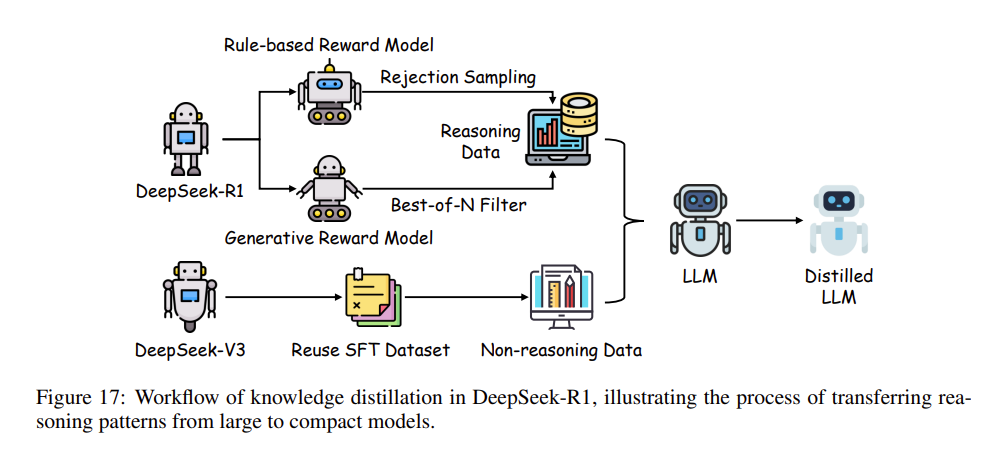
图17（Fig. 17）：DeepSeek-R1 中知识蒸馏的工作流程（Workflow of knowledge distillation），一针见血地还原了从巨无霸模型向紧凑小模型输送推理模式（reasoning patterns）的骨干链路。
如果顺着 图17（Fig. 17） 绘制的脉络来拆解，DeepSeek-R1 肚子里的直接蒸馏秘术俨然在执行一条极其缜密的流水线（structured pipeline）： 起初，早在汪洋般的数据集里泡出一身腱子肉的预训练教师模型（teacher model），会卯足了劲生成出一座兼备推理输出与非推理输出（reasoning and non-reasoning outputs）的庞大语料库（diverse corpus）。它极其精准地猎捕了一系列千变万化的逻辑模式（logical patterns）与刻板的事实知识（factual knowledge）。 那 20 万出头的非推理数据（non-reasoning data）稳稳当当地垫底筑起了通用知识（general knowledge）的大坝。而反观那核心的约 60 万推理数据，则像被剥丝抽茧一般，原封不动地封存并强化了教师那高深莫测的多步推理链条（multi-step reasoning chains）。 随后这整个数据巨库会在 SFT 阶段（SFT phase）被连根拔起，去强制引导学生模型输出分布（output distribution）朝向教师靠拢。在这里，利用推理数据对较小的模型执行最为露骨的直接微调流，能最快将之打造成一只身悍意强的紧凑推理机器（compact inference model）。传统的 RL（强化学习）若是直接生硬套在这类小模型脑袋上，极有可能因为受限于模型那逼仄可怜的容量（limited capacity）而导致劣质离谱的推理表现（suboptimal reasoning）。而 DeepSeek-R1 这一手直接蒸馏的阳谋，通过事先对那些已被吃透的最优推理行为（pre-optimized reasoning behaviors）进行乾坤大挪移，在只消极低系统开销（reduced resource demands）的条件下，不可思议地轰出了降维打击般的绝佳火力。
回望 DeepSeek-R1 蒸馏方法论的一大绝对护城河，便是它对“必须跨越模型规模差池（across model scales）去死守推理完整性（preserving reasoning integrity）”这一铁律的癫狂式恪守。
通过揉入 DeepSeek-R1-Stage1（一颗在滔天的 RL 狂潮里被千锤百炼打磨过的绝世金丹）中带血带泪的推理轨迹（reasoned trajectories），学生模型被强塞下去的绝不止一星半点死板的事实真理。它更像是被醍醐灌顶一般，学会了老和尚打坐时那种深度效模仿杂的推导进程（complex inference processes），像极了那些在绞杀数学题（mathematical problem-solving）和逻辑演绎（logical deduction）时必须使出的绝顶功力。 这种自带卫星制导般的目标迁移法（targeted transfer），与只知道一味追求死板分类任务（classification tasks）的一般老旧 KD 流派高下立判；更是明晃晃地暴露了 DeepSeek-R1 在重金打造“面向推理的极道蒸馏（reasoning-oriented distillation）”赛道上的创新。 不仅如此，因为在训练铺排时直接榨干了教师模型提早算好的推导成果（pre-computed reasoning outputs），这一套直接掐断了在小破学生端发起高昂 RL 循环迭代（extensive RL iterations）的念想；在彻底根治了效率弊病的同时，又极其顺滑地拉满了可扩展性（scalability）。 毫无疑问，这条路已然让 DeepSeek-R1 晋升成为将高端推理凝水成冰塞入极小 LLMs（compact LLMs）的唯一灯塔（paradigm），更为后续的所有后训练优化探索（post-training optimization efforts）亲手画好了一张不可估量的终极蓝图（blueprint）。
🧩 面向集成与适配的后训练 (PoLMs for Integration and Adaptation)
集成与适配技术（Integration and adaptation techniques）在全面拔高大语言模型去应对形形色色真实世界应用挑战的泛用性（versatility）与战力（efficacy）上，始终扮演着枢纽般的角色。借助这些硬核的方法论，LLMs 能够天衣无缝地去生啃异构的数据类型（heterogeneous data types），丝滑地切入到那些极其垂直的专业领域（specialized domains），并把来自五湖四海的不同架构优势（architectural strengths）全部拧成一股绳，从而硬刚那些错综复杂、多维度的天堑挑战。
本章将直击痛点，剖析三大制霸级的核心策略：
- 多模态集成（Multi-modal Integration）：这就如同给模型装上了天眼与顺风耳，让它能无差别地接管文本、图像以及音频等诸多数据模态。
- 领域适配（Domain Adaptation）：这就好比给模型特训，让它在一个个特定行业或极其小众的一线用例（use cases）中被打磨得如同手术刀般锋利。
- 模型合并（Model Merging）：这一招堪称“缝合怪”中的极品，它极其粗暴却又巧妙地把来自不同迥异模型的特有能力强拉硬凑在一起，只为一个目标——炸出那无与伦比的综合巅峰性能（overall performance）。
这三股力量合流在一起，不仅全方位撑起了 LLMs 的适应力（adaptability）、执行效率（efficiency）连带它的抗击打硬度（robustness），并且极其夸张地把它撒向了更多元更变态的任务与上下文战局之中。
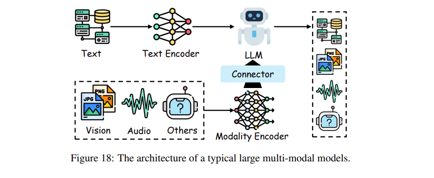
图18（Fig. 18）：典型的大型多模态模型架构（architecture of a typical large multi-modal models）。
1. 多模态集成（Multi-Modal Integration）
站在前边几个章节详尽拆解过的后训练优化（post-training optimization）这块厚重的基石之上，本节将向着那些旨在给 LLMs 以及大型多模态模型（Large Multi-modal Models, LMMs）打鸡血的高阶方法论（advanced methodologies）进军，一窥它们是如何强撸多模态数据（multi-modal data）的。
诚然，一把趁手的监督微调（supervised fine-tuning）的确能在那些框死在特定任务的场景（task-specific contexts）里让 LLM 的战力飙升。但很可惜，如果想要彻底把多模态能力那暴躁的全系火力（full spectrum of multi-modal capabilities）全部压榨出来，这把刀很快就会卷刃，此时，我们不得不寄希望于那些更为精密恐怖的后训练高招（post-training approaches）。这套组合拳能稳稳地护送 LMMs 去撕裂那些棘手到令人发指的跨模态乱局（cross-modal tasks）。举些活生生的例子：单凭一张肉眼可见的静图直接给你徒手码出整张网页的代码；去扒开并审视那些夹枪带棒、情绪拉满的文化模因图（memes）；亦或是干脆在一脚踢开光学字符识别（OCR）这根拐杖的前提下，直接硬生生地展开狂野的数学推导（mathematical reasoning）。这背后的逻辑，就是把八竿子打不着的各类数据生生给塞进了一个超级集权的统一框架（unified framework）里。
绝大多数时候，LMMs 这台缝合怪通常都被这三大心脏部件给盘活：一个专攻特定模态的编码器（modal encoder），一副底盘扎实预先练过的大模型骨架（pre-trained LLM backbone），外加一个极其风骚的模态连接器（modal connector），图18（Fig. 18） 里展现得可谓入木三分。正是这套雷打不动的底层架构，结结实实地充当了所有后训练炼金术（post-training methods）大施拳脚的练兵场，从而在这套场子里挨个给组件开光打磨（refine each component），最终彻底捅破了多模态集成的壁垒并达成了极其逆天的性能爆改（performance enhancement）。
1. 模态连接（Modal Connection）
在将错综复杂的多模态数据（multi-modal data）揉碎并融成一套逻辑严密的连贯表征框架（coherent representational framework）这件难事上，模态连接方法（Modal connection methods）绝对是起到了定海神针的作用。如 图19（Fig. 19） 所勾勒出的全景那样，它们在宏观上被干脆利落地劈成了三大主流战略门派：基于投影的方法（projection-based）、基于查询的方法（query-based），以及基于融合的方法（fusion-based approaches）。
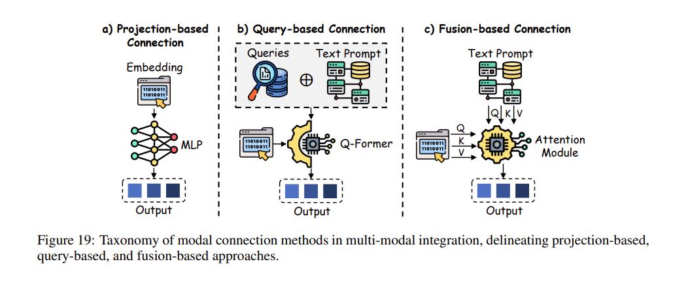
图19（Fig. 19）：多模态集成（multi-modal integration）中模态连接方法的分类体系，直观拆解了基于投影（projection-based）、基于查询（query-based）以及基于融合（fusion-based）的三大策略流派。
-
基于投影的模态连接（Projection-based Modal Connection）：基于投影的绝技主要发力点在于，暴力且优雅地把五花八门的异构模态输入（modal inputs）强制拽回到一个统一的文本嵌入空间（unified text embedding space）里。它通过强制这些输入特征去向大语言模型自身的语言学维度（linguistic dimensions）看齐，从而达成无缝对接（seamless integration）。
- 拿 LLaMA-Adapter 来说，它就打了个好样。它粗暴地接上了一个图像编码器（image encoder）以此来给 LLMs 的多模态版图疯狂扩建，瞬间赋予了它图像指导下的指令追踪能力（image-conditioned instruction tracking）。
- 其进阶继承者 LLaMA-Adapter V2 更是对这套路子进行了极致的提纯打磨，直接把视觉标签（visual tags）给拍进了大模型极早期靠前的层（early LLM layers）里，狂暴地催化了视觉知识（visual knowledge）的吸收速度。
- FROMAGe 则掏出一击“四两拨千斤”的巧劲：在彻底冻死的 LLM 和视觉编码器框架（frozen LLM and visual encoder framework）中，它只挑出输入与输出层来做微调（fine-tuning），照样把跨模态交互（cross-modal interactions）玩得出神入化。
- LLaVA-1.5 更绝，它动用了一套双线性多层感知机（bilinear MLP）来极大力度地撑起多模态处理那令人发指的抗造性（robustness）。
- 近期横空出世的黑马好比 Shikra，它直接将空间坐标（spatial coordinates）裹挟进架构，借此在自然语言的多轮博弈对话（natural language dialogues）中占尽先机。
- VILA 则是在视觉-语言预训练（visual-language pre-training）赛道上把优化压榨到了极致，从而飙出了顶级的零样本实战能力（zero-shot capabilities）。
- DetGPT 显然胆子更肥：它巧借投影技巧这座大桥，使得由推理驱动的物体检测技能（reasoning-driven object detection）能够和自然语言交流（natural language interaction）毫无违和地缠在一起。
- SOLO 同样不遑多让，这手极猛的单一 Transformer 架构（single Transformer architecture）专攻端到端（end-to-end）统一视觉语言建模。它压根不屑于使用独立的预训练视觉编码器（separate pre-trained vision encoder），而是直接生吞原始的图像图块（raw image patches, in pixels）和文本，可谓硬核至极。
- 与此同时，MiniGPT-4 只消使出一个单层的简单投影层（single projection layer），便成功通过一段两级式的魔鬼训练流程（two-stage training process），把被冻掉的视觉编码器给生生焊在了 Vicuna 上，硬是轰出了对标 GPT-4 的惊人杀伤力。
- Idefics 则靠着一手自回归设计（autoregressive design）和多级预训练（multi-stage pretraining）将流畅丝滑的推理表现（efficient inference）拿捏得死死的。
- LaVIT 引入了离散视觉分词器（discrete visual tokenizer），把视觉与语言揉碎后完美熔炼在了一起，达成了极致顺滑的数据生成（seamless generation）。
- DeepSeek-VL2 则在高清画质下的厮杀中靠着动态铺片（dynamic tiling）以及多头潜隐注意力（multi-head latent attention）机制，极大增强了对画面的深层理解力。
- 最后，Qwen2.5-VL 靠着推倒重来、彻底重构的视觉 Transformer（redesigned Vision Transformer），在广袤的图像感知（perception）和长篇的视频吞吐理解（video comprehension）上，砍下了令人侧目的傲人奇效。
-
基于查询的模态连接（Query-based Modal Connection）：基于查询的方法通过动用可学习的查询词元（learnable query tokens）来从各种截然不同的跨模态中强行榨取结构化信息（structured information），以此来桥接文本与非文本数据之间的天堑，强势拉升多模态集成（multi-modal integration）的上限。
- BLIP-2 靠着一手查询大模型（query transformers）在这条道上开宗立派，极其高效地把文本和视觉输入对接在了一起。
- Video-LLaMA 通过组合式视觉编码器（combined visual encoders）把这套绝活硬是扩张到了视频理解（video comprehension）领域。
- InstructBLIP 则精细打磨了查询机制（query mechanisms），以确保模型能死死咬住并精准遵循发出的指令（precise adherence to instructions）。
- X-LLM 通过特制的接口（specialized interfaces）强行对齐多模态输入，后续的开路先锋诸如 mPLUG-Owl 和 Qwen-VL，更是为了极致的计算效率（computational efficiency）直接把 Q-Former 架构的潜能给榨干了。
- LION 在大幅推进视觉知识整合（visual knowledge integration）的同时，进一步暴露出基于查询方法的凶悍实力，凸显了它们在拔高 LMM 应对各类繁杂任务表现上的巨大实用价值。
- 进一步拓展的 Qwen-VL 系列，这是一大票基于 Qwen-7B 打造出的大规模视觉-语言架构。它硬核插入了视觉受体（visual receptor）、位置感知适配器（position-aware adapter）以及一套狂野的三段式训练管线（three-stage training pipeline），从而狠狠拿下了多语言、超细粒度的视觉-语言理解能力（multilingual, fine-grained vision-language understanding）。
- Lyrics 则掏出一个细粒度视觉-语言预训练与指令微调框架（fine-grained vision-language pre-training and instruction fine-tuning framework）。它通过视觉细化器（visual refiner，包含图像打标签、物体检测和语义分割等神技）外加多尺度查询大模型（Multi-scale Querying Transformer, MQ-Former），把语义感知的视觉对象（semantic-aware visual objects）硬生生嵌了进去，以此对大型视觉语言模型（LVLMs）进行了极限增强。
-
基于融合的模态连接（Fusion-based Modal Connection）：基于融合的黑科技选择把多模态特征（multi-modal features）直接往大模型架构（LLM architecture）的深处死里焊，借此在推理阶段（inference level）催生出更为深邃的跨模态交互（cross-modal interactions）与极度丰满的结组集成（richer integration）。
- Flamingo 极其狠辣地动用了交叉注意力层（cross-attention layers），在词元预测（token prediction）的节骨眼上强行将视觉特征熔铸进去，一举解锁了动态的多模态处理（dynamic multi-modal processing）能力。
- OpenFlamingo 踩在它的肩膀上，让被彻底冻住的大模型（frozen LLMs）也能敏锐地汲取视觉编码器的输出（vision encoder outputs），极大拉升了整个架构的灵活性（flexibility）。
- Otter 祭出了指令微调（instruction tuning）来狠狠强化多模态环境下的指令追踪执行（multi-modal instruction-following）能力。
- 而 CogVLM 更绝，直接在 Transformer 层（Transformer layers）内部生生嵌进去了视觉专家模块（visual expert modules），达成了天衣无缝的特征合成（seamless feature synthesis）。
- Obelics 通过生吞图文交错的训练数据（interleaved image-text training data），强力印证了基于融合的方法在打磨出坚如磐石的多模态聚合成效（cohesive multi-modal performance）上的抗折腾能力（robustness）。
- InternVL 是一座极大规模的视觉-语言基础大山（large-scale vision-language foundation model），它直接把视觉编码器（vision encoder）的体量强行撑爆到了狂野的 60亿（6B）参数，并借助语言中间件（language middleware，即 QLLaMA）使其与 LLMs 达成了极其精细的渐进式对齐（progressively aligns）。
- 文末收尾的扛鼎之作 Llama 3，这是由 Meta 亲手操刀打造的新世代多语言、会搞工具调用的基础模型矩阵（multilingual, tool-using foundation models），体量一路狂飙至恐怖的 405B（4050亿）参数，带着 128K 极其宽广的词元上下文窗口（token context window）。不仅数据质量被狂热洗礼、训练规模被史诗级放大，更有一套结构极其严密的后训练策略（structured post-training strategy）替它进行最极致的兜底与全方位性能榨取。
表7（Table 7）：跨模态编码器与大型多模态模型概览（2022-2025）。该表总结了关键的多模态模型，精细盘点了它们跨越视觉（vision）、音频（audio）以及其他模态的编码器类别（encoder categories）、规模（sizes）、输入投影器（input projectors）、大语言模型骨架（LLM backbones）以及发布时间线（release timelines）。其中的核心指标涵盖了代表各种输入投影机制的 C-a（交叉注意力，Cross-attention）、Q-F（Q-Former）、MQ-F（多查询 Q-Former，Multi-Query Q-Former） 以及 LP（线性投影器，Linear Projector）。
| 模态 (Modal) | 模型 (Model) | 编码器类别 (Encoder Category) | 编码器规模 (Encoder Size) | 输入投影器 (Input Projector) | 大模型骨架 (LLM Backbone) | 发布时间 (Release Time) |
|---|---|---|---|---|---|---|
| 视觉 (Vision) | Flamingo | NFNet | 0.3B | C-a | Chinchilla-1.4B/7B/70B | Apr-2022 |
| BLIP-2 | CLIP/Eva | 0.3B/1.5B | Q-F/LP | Flan-T5/OPT | Jan-2023 | |
| MiniGPT-4 | Eva | 1.5B | Q-F/LP | Vicuna-13B | Apr-2023 | |
| VideoChat | Eva | 1.5B | Q-F/LP | StableVicuna-13B | May-2023 | |
| InstructBLIP | ViT | 1.5B | Q-F/LP | Flan-T5/Vicuna | May-2023 | |
| Video-ChatGPT | CLIP | 0.3B | LP | Vicuna-v1.1 | May-2023 | |
| IDEFICS | OpenCLIP | 0.3B | C-a | LLaMA | May-2023 | |
| Qwen-VL-(Chat) | OpenCLIP | 1.8B | C-a | Qwen-7B | Aug-2023 | |
| LLaVA | CLIP | 0.3B | LP | Vicuna-13B | Oct-2023 | |
| Lyrics | CLIP | 0.1B~0.3B | MQ-F/LP | Vicuna-13B | Oct-2023 | |
| CogVLM | Eva | 1.5B | MLP | Vicuna-v1.5-7B | Nov-2023 | |
| BT-Adapter | CLIP | 0.3B | LP | Vicuna-7B | Nov-2023 | |
| SPHINX-Tiny | DINOv2 | 1.0B | LP | TinyLlama-1.1B | Jan-2024 | |
| VL-Mamba | SigLIP | 0.4B | MLP | Mamba-2.8B-Slimpj | Feb-2024 | |
| Mipha | SigLIP | 0.4B | MLP | Phi-2-2.7B | Mar-2024 | |
| InternVL | InternImage | 6.0B | C-a/MLP | Qwen-LLaMA-8B | Mar-2024 | |
| Cobra | SigLIP/DINOv2 | 0.4B | MLP | Mamba-2.8B-Zephyr | Apr-2024 | |
| LaVIT | ViT | 0.1B~0.3B | C-a | LLaMA-7B | May-2024 | |
| DeepSeekVL2 | Dynamic Tiling | 2.8B | MLP | DeepSeek-MoE-16B | May-2024 | |
| VILA | ViT | 0.1B~0.3B | LP | LLaMA-2-7B/13B | Jun-2024 | |
| Llama 3 | SigLIP | 1.5B | LP | LLaMA-3 | Jul-2024 | |
| QVQ | ViT | 0.6B | C-a | Qwen2-VL-72B | Dec-2024 | |
| Qwen2.5-VL | ViT | 0.8B | MLP | Qwen-MoE-A2.7B | Feb-2025 | |
| Claude 3.7 | - | - | - | Claude 3.7 | Feb-2025 | |
| GPT-4.5 | - | - | - | GPT-4.5 | Feb-2025 | |
| Kimi-VL | ViT | 0.4B | MLP | Moonlight-MoE-A2.8B | Apr-2025 | |
| 音频 (Audio) | AudioPaLM | AudioMAE | 0.25B | LP | PaLM-2-8B | Sep-2023 |
| Qwen-Audio | Whisper-L-v2 | 1.5B | LP | Qwen-7B | Nov-2023 | |
| SpeechGPT | Transformer | 0.1B~0.3B | LP | LLaMA-13B | Dec-2023 | |
| VoiceCraft | Neural-Codec | 0.33B/0.83B | LP | Mamba-2.8B | Mar-2024 | |
| 其他 (Others) | X-LLM | Transformer | 0.1B~0.3B | Q-F/LP | ChatGLM-6B | May-2023 |
| Video-LLaMA | Eva-CLIP | 1.5B/0.17B | Q-F/LP | Vicuna/LLaMA | Jun-2023 | |
| ImageBind-LLM | ImageBind | 0.17B | LP | LLaMA-7B | Jun-2023 | |
| AnyMAL | CLIP/CLAP | 0.3B | C-a/LP | LLaMA-2 | Sep-2023 | |
| NExT-GPT | ImageBind | 0.17B | LP | Vicuna-7B | Oct-2023 | |
| CoDi-2 | ImageBind | 0.17B | MLP | LLaMA-2-Chat-7B | Jan-2024 | |
| LL3DA | Transformer | 0.1B~0.3B | LP | OPT-1.3B | Feb-2024 | |
| X-InstructBLIP | Eva/BEATs/ULIP-2 | 1.5B | Q-F/LP | Vicuna-v1.1-7B/13B | Dec-2024 |
2. 模态编码器（Modal Encoder）
模态编码器（Modal encoders）的绝活在于将原始、狂野的多模态输入（raw multi-modal inputs）给狠狠压缩成极其紧凑且语义饱满的表征（compact, semantically rich representations），从而让各种棘手任务和异质模态的处理效率能原地起飞。这堆核心组件绝对是把五花八门的数据（heterogeneous data）翻译成大语言模型骨架（LLM backbones）能听懂的“普通话”的关键枢纽，强势支撑起了从视觉推理（visual reasoning）到音频理解（audio comprehension）的惊人应用广度。前文的 表7（Table 7） 就非常硬核地对这些被高频拉去充当视觉、音频及其他模态炮干的编码器做了个全面起底，详尽拆解了它们在多模态集成（multi-modal integration）里的专属特性与赫赫战功。
-
视觉编码器（Vision Encoder）：绝对是多模态学习（multi-modal learning）的基石，替 LMMs 铺平了解译与生成视觉数据的通天大道。CLIP 靠着一手对比学习（contrastive learning）直接干出了图文联合表征（joint image-text representations），极大拉升了跨模态对齐（cross-modal alignment）的精度。EVA 精修了视觉注意力机制（visual attention mechanisms）来狂飙效率，而 ImageBind 更是硬生生造出了一个横跨多模态的统一嵌入空间（unified embedding space），把零样本识别的杀伤力（zero-shot recognition capabilities）拔到了前所未有的高度。SigLIP 掏出了成对的 sigmoid 损失（paired sigmoid loss）来死磕图文预训练的极限优化，DINOv2 则玩转了无监督学习（unsupervised learning），从极度繁杂的数据源里硬生生榨取出极其抗造的视觉特征（robust visual features）。LLaVA 把自我指令策略（self-instruct strategies）巧妙嫁接过来，把图像强行转换为行云流水般的文本描述，借着高阶 LLMs 的算力批量生成了极其炸裂的新型数据集。Video-ChatGPT 拎着大规模指令数据集，在对话场景下的视频理解（conversational video understanding）这一块大杀四方；而 BT-Adapter 则精通最高效的时序建模（temporal modeling），把视频理解（video comprehension）给优化到了极致。VideoChat 死磕时空推理（spatiotemporal reasoning），吃透了各种特化数据集。至于 CoDi-2 和 Mipha 这种狠角色，直接在多模态处理的效率飞跃（efficiency gains）上拿到了真金白银的战果。VL-Mamba 与 Cobra 给这摊子引入了状态空间模型（state-space models）以此换来推理环节的极限竞速，SPHINX-Tiny 则把资源全砸在了拔高数据多样性（data diversity）与训练效率（training efficiency）上。
-
音频编码器（Audio Encoder）：极大扩张了 LMMs 吞吐和解析听觉输入（auditory inputs）的能力圈，疯狂开疆扩土。SpeechGPT 把海量规模的语音数据集同卷积加 Transformer 这套重火力架构（convolutional and transformer architectures）生生缝合到了一起，炼出了极其强悍的指令追踪神技（robust instruction-following capabilities）。AudioPaLM 动用通用语音模型（Universal Speech Model, USM）编码器把文本和语音处理彻底揉碎熔炼，在诸如零样本语种翻译（zero-shot language translation）等硬核任务里秀出了极其恐怖的统治力。WavCaps 则祭出 CNN14 和 HTSAT 直接对音频-语言数据匮乏（audio-language data scarcity）的痛点猛烈开火，借高阶大模型来精细洗掉数据集里的杂质，硬核抬高了最终的学习产出，这极其尖锐地昭示了音频模态在整个多模态巨兽体系中不可撼动的核心身位。
-
其他编码器（Other Encoder）：跳出视觉与音频的圈子，搞定诸如 3D 理解等其他模态融合（multi-modal fusion）的附加编码器，那是搭建全方位大一统 LMMs 绝对绕不开的拼图。NExT-GPT 横扫文本、图像、视频、音频，强力打通跨模态的内容生成（cross-modal content generation），硬是在参数微调量极低（minimal parameter adjustments）的前提下，极其生猛地推进了拟人的强悍 AI 能力（human-like AI capabilities）。ImageBind-LLM 把视觉与语言嵌入对齐，在跨模态环境里把指令追踪能力（instruction-following）狠狠拉高了一截。LL3DA 直接吞噬点云数据（point cloud data）用来做 3D 空间内惊心动魄的推理与规划，极为生猛地引入了攻克空间理解（spatial understanding）的全新大招。X-LLM 使用 Q-Former 来处理图像与视频输入，并调用 C-Former 专门处理语音，极其干练地把音频特征压缩进词元级别的嵌入表示（token-level embeddings）中，借此大幅提升了多模态学习的效率。
2. 领域适配（Domain Adaptation）
领域适配（Domain Adaptation, DA）是一项极度核心的后训练策略（pivotal post-training strategy），旨在将 LLMs 打磨得能在特定垂直领域内独领风骚，确保它们在目标应用（targeted applications）中能够火力全开。立足于迁移学习（transfer learning）的底层心法，DA 通过一个适配函数 \(F_{\text{adapt}}\) ，将一个初始的源模型 \(M_{\text{source}}\) 爆改为吃透特定领域的专属目标模型（domain-specific model） \(M_{\text{target}}\)，正如公式所示：
这一套改造流程专门为 \(M_{\text{target}}\) 量身定制，使其能够精准拿捏目标领域独有且刁钻的复杂需求（unique demands and intricacies），从而极限优化其性能表现与领域适配度（relevance）。通过为 LLMs 注入诸如编程（programming）与数学推理（mathematical reasoning）等硬核行当的强悍专业功底（proficiency），DA 不仅仅是拔高了领域专精能力（domain-specific capabilities），更大幅拉升了计算效率（computational efficiency），强力化解了通用大模型（general-purpose models）在面对专业术语与特殊推理范式（reasoning paradigms）时往往“水土不服”的天然局限。此外，DA 更是极大程度上摆脱了“从零硬训”特定领域模型（training domain-specialized models from scratch）时对海量打标数据集（labeled datasets）与恐怖算力资源（computational resources）的严重依赖。凭借这种四两拨千斤的高性价比效能，领域适配已然成为了后训练方法论（post-training methodologies）版图里一块不可撼动的基石（cornerstone）。
1. 知识编辑（Knowledge Editing）
知识编辑（Knowledge Editing）代表了一种极其精尖的后训练手段（sophisticated post-training approach），其核心目标是暴改大语言模型（LLMs）以迎合特定领域的严苛需求（domain-specific requirements），同时绝不损耗它们那底盘扎实的通用基础能力（foundational capabilities）。这项黑科技巧妙促成了靶向化的参数微调（targeted parameter adjustments），在极限保全模型原有性能底子的同时，顺滑地熔铸进全新或迭代更新的领域知识（new or updated domain knowledge）。
💡 形象点说（举个栗子）：与 LoRA 微调的本质区别
LoRA 微调（Low-Rank Adaptation） 就像是送大模型去上“法学院”或者“医学院”，让它通过大量样例学习特定行业的推理范式或表达风格（例如学习如何写一份法律合规文书）。 而 知识编辑（Knowledge Editing） 则像是给大模型做“脑部神经微创手术”。比如由于现实情况变动，我们要把模型脑海里的旧事实“推特（Twitter）的 CEO 是 Jack Dorsey” 强行篡改为 “推特 CEO 是 Elon Musk”。如果用 LoRA，不仅成本高还容易引发“知识漂移”（越训越傻）；而用知识编辑，我们只需通过算法精准定位到存储该知识“三元组”的那几个特定神经元（局部性），以极小的代价完成数值覆写。在瞬间完成事实更替的同时，完全不影响模型对其他客观知识的记忆，真正做到“打原子级的补丁”而非“全局刷系统”，特别适合用来纠错、删毒（unlearning）以及更新时效性信息。
通过赋予模型面对变幻莫测的知识版图（evolving knowledge landscapes）时的极速自适应力（rapid adaptation），知识编辑已然强势确立了其在后训练管线（post-training pipelines）中不可或缺的重头戏身位。表8（Table 8） 全景式展示了这块领域的主力流派概览（例如囊括外部知识调用、外部知识整合，以及内在的原生编辑等硬核打法）。
表8（Table 8）：大语言模型中各类代表性知识编辑方法（approaches for knowledge editing in LLMs）的横向大比拼。编辑区域（Edit Area） 精准锁定了模型中惨遭靶向魔改的组件模块；编辑参数量（Editor #Params） 则明码标价了在编辑流程中必须要刷新的参数指标。其中，\(L\) 代表经受魔改的层数（number of layers），\(d_h\) 代表 Transformer 架构里隐藏层的维度（dimensionality of the hidden layers），\(d_m\) 则代指夹在升维投影（up-projection）与降维投影（down-projection）这两个极其凶险的相位之间的中间过渡维度（intermediate dimension），而 \(N\) 则象征着在每一层里需要被拉去回炉重造（updates）的神经元总活口数（total number of neurons）。
| 类别 (Category) | 方法 (Method) | 编辑区域 (Edit Area) | 编辑函数 (Edit Function) | 编辑参数量 (Edited #Params) |
|---|---|---|---|---|
| 标识 (Identification) | SERAC | 记忆+分类器+辅助模型 (memory+classifier+auxiliary model) | \(\text{Output} \rightarrow \text{Model}_{cf}(\boldsymbol{x})\) | - |
| PokeMQA | 记忆+检索器 (memory+retriever) | \(\text{Input} \rightarrow [\text{Mem} : \text{Input}]\) | - | |
| 关联 (Association) | CaliNET | FFN+参数 (FFN+params) | \(\boldsymbol{h} \rightarrow \boldsymbol{h} + \text{FFN}_{\text{add}}(\boldsymbol{x})\) | \(N \times d_h\) |
| Transformer-Patcher | FFN+参数 (FFN+params) | \(\boldsymbol{h} \rightarrow \boldsymbol{h} + \text{FFN}_{\text{add}}(\boldsymbol{x})\) | \(N \times d_h\) | |
| REMEDI | 辅助模型 (auxiliary model) | \(\boldsymbol{h} \rightarrow \text{REMEDI}(\boldsymbol{x})\) | \(d_h \times d_h\) | |
| GRACE | FFN+密码本 (FFN+codebook) | \(\boldsymbol{h} \rightarrow \text{GRACE}(\boldsymbol{x})\) | \(N \times 2d_h\) | |
| Eva-KELLM | Attn 或 FFN | \(\boldsymbol{h} \rightarrow \boldsymbol{h} + s \cdot \text{LoRA}(\boldsymbol{x})\) | \(2L \times 2d_{am}d_h\) | |
| MELO | Attn 或 FFN | \(\boldsymbol{h} \rightarrow \boldsymbol{h} + s \cdot \text{LoRA}(\boldsymbol{x})\) | \(2L \times 2d_{am}d_h\) | |
| 编辑 (Editing) | Constrained Fine-tuning | 任何部位 (Any) | \(\boldsymbol{W} \rightarrow \boldsymbol{W}'\) | \(2 \times L \times d_md_h\) |
| Editable Training | 任何部位 (Any) | \(\boldsymbol{W} \rightarrow \boldsymbol{W}'\) | \(2 \times L \times d_md_h\) | |
| KnowledgeEditor | Attn 或 FFN + 辅助模型 | \(\boldsymbol{W} \rightarrow \boldsymbol{W}'\) | \(2 \times L \times d_md_h\) | |
| SLAG | Attn 或 FFN + 辅助模型 | \(\boldsymbol{W} \rightarrow \boldsymbol{W}'\) | \(2 \times L \times d_md_h\) | |
| MEND | FFN + 辅助模型 | \(\boldsymbol{W} \rightarrow \boldsymbol{W}'\) | \(2 \times L \times d_md_h\) | |
| MALMEN | FFN | \(\boldsymbol{W}_{\text{down}} \rightarrow \boldsymbol{W}'_{\text{down}}\) | \(L \times d_md_h\) | |
| LLM Surgery | 任何部位 (Any) | \(\boldsymbol{W} \rightarrow \boldsymbol{W}'\) | \(2 \times L \times d_md_h\) | |
| KNE | 参数子集 (subset of parameters) | \(\boldsymbol{W} \rightarrow \boldsymbol{W}'\) | \(L \times d_md_h\) | |
| OVERTONE | 任何部位 (Any) | \(\boldsymbol{W} \rightarrow \boldsymbol{W}'\) | \(2 \times L \times d_md_h\) |
知识编辑的严谨阵法（Formal Definition of Knowledge Editing）。设想一个由参数 \(\theta\) 坐镇、在数据集 \(\mathcal{D}_{\text{old}}\) 上历经千锤百炼的初始大模型（original LLM）。再划定一个 \(\mathcal{D}_{\text{new}}\)，这玩意儿装满了崭新或是刚迭代的热乎信息 \(\Delta K\)。知识编辑的核心使命（objective），就是通过施加一记精准的手术微调 \(\Delta\theta\)，硬生生推导出一套彻底刷新过的参数集 \(\theta'\)，从而完美吞噬吸收掉 \(\Delta K\)，同时还得死死守住底线，把在 \(\mathcal{D}_{\text{old}}\) 上的性能跌损（degradation）死死压到最低。
用硬核的行话来讲，这就是一道经典的约束优化难题（constrained optimization problem），其参数更新的铁律定义如下：
这里的 \(\mathcal{L}\) 就是一个极度苛刻的损失函数（loss function，比如交叉熵 cross-entropy），负责毒舌点评模型在 \(\mathcal{D}_{\text{new}}\) 上的消化质量。而为了给原始数据集上的战功上道双保险（safeguard performance），必须焊死一道严酷的结界（constraint）：
在这个结界里，\(\epsilon\) 仅仅是个微乎其微的正数（small positive constant），也就是给 \(\mathcal{D}_{\text{old}}\) 的性能流失设下的一刀切的红线。这套暴力且严密的公式结结实实地担保了：\(\theta'\) 在彻底生吞 \(\Delta K\) 的同时，决不丢掉模型原先打下的一寸知识江山（prior knowledge base）。在真刀真枪的实操中，\(\Delta\theta\) 往往会被死死圈禁在特定的架构组件里（比如注意力层 Attn 或是前馈网络 FFN）。这么干不仅疯狂砍掉了计算开销（computational overhead），更靠着规避那种兴师动众的全面重训（comprehensive retraining），极度凶悍地保全了模型的核心机能（core functionality）。
-
知识标识（Knowledge Identification）：知识编辑的起手式，核心火力全开于侦测并将刺眼的新信息生吞进模型里。PokeMQA 祭出可编程的范围探测器（programmable scope detector）与知识提示词（knowledge prompts）来疯狂解剖查询词，极其狠辣地检索出对口的事实。反观 SERAC，它直接把反事实模型（counterfact model）和分类器缝合，借此来死抠新知识源到底适不适用，这套微创式（minimally invasive）的手法，在压根不伤筋动骨改架构（extensive structural modifications）的前提下，原汁原味地保全了基座模型的金刚不坏之身。文献 [406] 抽丝剥茧地盘点了 LLM 知识更新时为何会不可避免地引爆乱七八糟的波纹效应（ripple effect）。现实世界的知识暴改通常源于那些拔地而起的新兴事件，这其中死死缠绕着新旧事实之间的逻辑羁绊（logical connections），死磕这一洞察，EvEdit 霸气抛出了一套由事件驱动的知识编辑杀招（event-based knowledge editing method），一举锚定了知识的锚点（knowledge anchor）并划死了知识更新的边界（knowledge updating boundary）。
-
知识关联（Knowledge Association）：在精准识破之后，这一阶段的任务是把刚刚掳获的情报同模型现有的知识躯干（knowledge framework）给硬性联结起来。Transformer-Patcher 强行改造了 Transformer 的架构，让其将刷新后的事实彻底吞没；而 CaliNET 则对参数进行了极限校准（recalibrates parameters），使之与事实内容死死对齐。诸如 Eva-KELLM、MELO 以及 REMEDI 这些流派，更是精细打磨了特定行为以求达成极为精准的知识刷新（precise updates）；与此同时，GRACE 疯狂拔高了知识植入后的预测精准度（predictive accuracy），强力担保了新情报与原有一套表征系统（prior representations）的天衣无缝般熔铸。
-
内在知识编辑（Intrinsic Knowledge Editing）：这是收尾的决战阶段，它直接将关联好的事实打入模型的内部核心深处（internal structure），以求实现吃干抹净的全面同化（comprehensive assimilation）。由于老一套的微调（traditional fine-tuning）手法极其消耗资源，各种高阶黑魔法（advanced techniques）挺身而出化解了这一重担。约束微调（Constrained Fine-tuning） 与 元学习（Meta-learning） 极度缩减了知识流失（knowledge loss）和过拟合的灾难风险。可编辑训练（Editable Training） 和 KnowledgeEditor 则解锁了雷霆般敏捷的参数调节（swift parameter adjustments），把性能的反噬死死摁在最低。此外，SLAG、MEND 和 MALMEN 从容化解了修改时的火力冲突（edit conflicts）并极其硬核地支撑起大规模并发更新（large-scale updates），在强行灌入领域洞见的当口依然守住了模型原厂的基础战力（foundational competencies）。LLM Surgery (LLM手术) 则通过反向梯度（reverse gradients）手起刀落切除过期废料，用梯度下降（gradient descent）缝合新事实，并糊裹一层 KL 散度（KL divergence）的护甲来保住既有知识，这种把擦除与编辑（unlearning and editing）熔为一炉的暴改，轰出了逆天的计算效率（computational efficiency）。KNE 掏出了知识神经元集群（Knowledge Neuronal Ensemble）秘术，犹如狙击手般精确锁定并只重塑那些与新植入事实存在死命勾连的神经元，达成了更精确的暴改且毫发无损地保全了不相干的知识领地。OVERTONE 则是通过甩出一手词元级的平滑绝技（token-level smoothing technique），极其敏锐地微调训练大纲，以针对性干掉编辑过程中的异质词元过拟合（heterogeneous token overfitting），不仅保住了预训练的老本（pre-trained knowledge），更拔高了模型在迎战新梗时的推理极限。这群挂比一般的靶向神技（targeted techniques）彻底敲死了：模型哪怕在大快朵颐新情报时，也绝不会丢下那赖以生存的基础底盘战力（foundational competencies）。
2. 检索增强生成（Retrieval-Augmented Generation, RAG）
检索增强生成（Retrieval-Augmented Generation, RAG）将老一套的信息检索技术（information retrieval）与当代大语言模型（LLMs）生硬且巧妙地缝合在了一起，疯狂拉升了生成内容的相关度（relevance）与事实准确度（factual accuracy）。通过从外部源（external sources）动态“攫取”出针对性的情报并将其硬核嵌入到生成流水线里，RAG 强势填平了 LLMs 在垂直领域知识（domain-specific knowledge）上的天然短板，并且极其霸道地压制了模型“胡说八道”（hallucinated content，幻觉）的冲动。这门绝活在那些死磕精准度和热乎信息（precise, up-to-date information）的冷酷地带（譬如问答系统、科学研究以及医疗健康领域）展现出了摧枯拉朽的实效，极其游刃有余地拿捏了那些令人头秃的复杂查询（complex queries）与知识密集型任务（knowledge-intensive tasks）。除此之外，RAG 更是极大清剿了对话系统里那些充满误导性的“满嘴跑火车”式回答（misleading responses），极其凶悍地拔高了知识驱动型自然语言生成（knowledge-driven natural language generation）的忠实度（fidelity）。
本小节将集中火力盘点基于训练的 RAG 方法论（training-based RAG methodologies）。因为大家逐渐看清，那些号称“免训练”（training-free）的 RAG 偷懒玩法，往往会因为缺乏任务级的一手定向优化（task-specific optimization），而惨遭知识利用效率（knowledge utilization efficiency）的滑铁卢。目前有三大主流训练门派——独立训练（Independent Training）、时序/循序训练（Sequential Training）以及联合训练（Joint Training）——它们极其生猛地拔高了模型的自适应力（adaptability）与集成造诣（integration proficiency），正如 图20（Fig. 20） 描绘的那样一览无余。
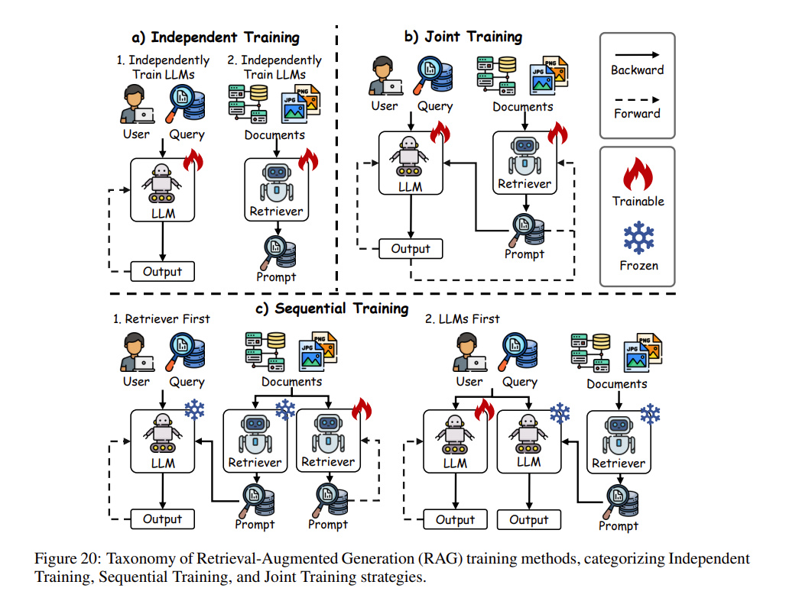
图20（Fig. 20）：检索增强生成（RAG）训练方法的分类大盘点：清清爽爽地拆解出独立训练（Independent Training）、循序训练（Sequential Training）和联合训练（Joint Training）三大战术体系。
-
独立训练（Independent Training）：这项策略手起刀落地把检索器（retriever）和生成器（generator）劈成两个毫不相干的独立模块来分开练，这就解锁了极大的战术灵活性（flexibility），能够根据不同的任务胃口自由切入稀疏（sparse）或密集型检索器（dense retrievers）。比如 DPR 就极其豪横地动用了双路 BERT 网络（dual BERT networks）来分开给查询词和段落做编码，直接靠一手对比学习（contrastive learning）在彻底抛开生成器干涉（without generator interaction）的情况下把检索底盘给拉满。同样不遑多让的还有 Reward-RAG，它直接拉出一个奖励模型（reward model），拿基于 GPT 的反馈（GPT-based feedback）来单方面狠狠微调检索器，而对生成器则是秋毫无犯（leaving the generator untouched）。
-
循序训练（Sequential Training）：循序训练通过一次死磕一个模块（optimizing one module at a time）来拔高整体效能，疯狂撮合检索器与生成器之间的默契（synergy）。这一门派里囊括了所谓的“检索器先手”（Retriever-First approaches）大招，犹如 RETRO，它先是爆肝狠训一个基于 BERT 的检索器（BERT-based retriever），然后再拉出一个编码器-解码器（encoder-decoder）大阵进行二段操练，以此来把捞出的外部内容天衣无缝地生吞进去（seamlessly integrate），达成功力跃升。反之则是“大模型先手”（LLM-First methods）流派，诸如 RA-DIT，上来就先对语言大模型动刀子做微调（fine-tune），逼迫它学会如何如臂使指地压榨拿到的外部知识，随后再回头二次打磨检索器（refine the retriever），以拿到极度变态的对齐与连贯性（alignment and coherence）。
-
联合训练（Joint Training）：联合训练的野心极大，它直接在一个端到端框架（end-to-end framework）里同步捆绑刷新（synchronizes optimization）检索器与生成器。经典的 RAG 模型通过往死里压低负对数似然（negative log-likelihood）来将这两个部件硬拽进去同生共死地协同训练（co-train）；而 REALM 更是霸道地祭出最大内积搜索（Maximum Inner Product Search, MIPS）神技来极限拔高检索的致命精度（retrieval precision）。这些杀招极其适应任务专精化的苛刻胃口（task-specific needs），在把外部知识红利压榨到极致（maximizing external knowledge benefits）的同时，把生成错误（generation errors）无情降到了冰点。
💡 形象点说（举个栗子）：到底什么是“基于训练的 RAG”？
普通 RAG（免训练/Training-Free RAG，大家平时做的）： 就像是你（大模型）考试时带了个外挂搜索引擎（百度）。你搜出什么资料，就直接拿来念。你们俩是各干各的——搜索引擎不会因为你回答得不好去优化搜索算法，你也不会因为搜索引擎搜得准而改变自己的阅读习惯。
而基于训练的 RAG（Training-based RAG） 则是让“你”和“搜索引擎”进行有针对性的协同进化：
- 独立训练（Independent Training）：你还是你，引擎还是引擎，但是搜索引擎被单独送去补习班了（比如只练医学库怎么搜最准），练完再拿来给你配合作答（如 DPR 模型）。
- 循序训练（Sequential Training）：有两种。一种是“引擎先手”：先让引擎学会往死里搜出最精华的医学片段，然后再对你进行“闭关特训”，强行逼着你学会如何无缝缝合这些生涩的医学文献（如 RETRO）；另一种是“大模型先手”：先训你如何巧妙整合破旧错乱的参考文献，然后再去训引擎，让它学会投其所好专门捞你爱吃的那一挂文献（如 RA-DIT）。
- 联合训练（Joint Training）：真正的“双修”。把大模型和搜索引擎绑在一张极其变态的训练台上，用一个总分（Loss）同时鞭打两人。只要你答错了，模型不仅要调整自己生成的话术，引擎还要自己反思并微调自己的检索逻辑（以后遇到这种题该用什么向量来匹配），实现真正的同生共死极限拉扯（如 RAG 原生模型、REALM）。
3. 模型融合（Model Merging）
模型融合（Model merging）已经强势崛起，成为拔高大语言模型在训练与推理双相阶段性能与效率的绝对战略核心（vital post-training strategy）。这门手艺强行将各路偏科的特化模型（specialized models）缝合成一个大一统的架构，不仅彻底绕开了那铺天盖地的全面重训（extensive retraining）灾难，更是一举干碎了超大模型体积与变态算力饥渴所带来的梦魇。不同于那种直接把数据集混在一起炼丹的笨办法，模型融合凭借一种极度节省资源（resource-efficient）的多任务学习范式，生硬且完美地把一帮只懂单一任务的模型（single-task models）糅合成了一个十八般武艺样样精通的超级拼图。通过精简训练管线（streamlining the training pipeline）并催生出具备全能泛化底盘（robust generalization）的多面手模型，这项技术把 LLMs 在各类错综复杂场景下的部署潜能榨到了极限。假设我们手里攥着一堆候选模型大军 \(\mathcal{M} = \{M_1, M_2, \dots, M_n\}\)，融合的核心目标就是设计出一个强横的融合函数 \(F_{\text{merge}}\)，以此来孕育出统一的究极体模型 \(M'\)，而它通常会把 \(M_1\) 当作压阵的基座模型（base model），公式极其通透：
分层模型融合（Model Merging at Hierarchical Levels）
模型融合的各种骚操作可以系统性地被归入三大层级体系——权重级（weight-level）、输出级（output-level）以及模型级融合（model-level merging）——详见 图21（Fig. 21）。
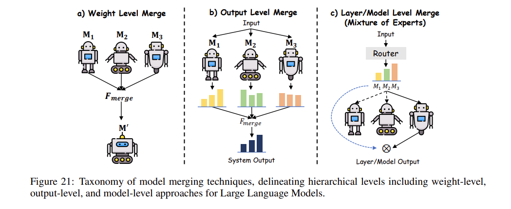
图21（Fig. 21）：模型融合技术的分类全景，清晰划定了针对大语言模型的权重级（weight-level）、输出级（output-level）以及模型级（model-level）三大战术层级架构。
-
权重级模型融合（Weight-Level Model Merging）：权重级融合直接在模型最深处的参数空间（parameter space）里动刀子，对于那些骨架同源（architectural similarities）或者在相关的旁支任务上操练过的模型来说，这招最为致命有效。用数学神拳来描述：给定一堆参数集 \(\theta_1, \theta_2, \dots, \theta_n \in \mathbb{R}^d\)，一套线性融合方案（linear merging scheme）会把它们暴力聚合成一个大一统的参数集 \(\theta'\)：
\[ \theta' = \alpha_1\theta_1 + \alpha_2\theta_2 + \dots + \alpha_n\theta_n, \quad \text{要求满足} \quad \alpha_k \ge 0, \, \sum_{k=1}^n \alpha_k = 1 \tag{35} \]Model Soup（模型汤） 就把这套玩得炉火纯青，它极其生猛地对各种跑过不同特定任务微调的模型权重进行线性乱炖组合（linearly combining weights），硬是浓缩成了一个单体且极其高效的巨兽。任务算术（Task Arithmetic, TA） 则通过直接在参数块上飙算术操作（arithmetic operations），把这股灵活性给拉扯到了新高度，疯狂抬升了性能的自适应韧性。为了压制参数之间互不咬合的冲突打架（alignment issues），TIES-Merging 强上了参数一致性（parameter congruence）对齐手段；而 DARE 则干脆通过概率性地丢弃与调节参数差异项（probabilistically adjusting parameter deltas），将彼此间的杂乱干扰降至冰点，把融合流程的一致性与高效率（coherence and efficiency）极度夯实。
-
输出级模型融合（Output-Level Model Merging）：当遇到那群架构或是初始化设定截然不同、让权重级融合直接歇菜吃瘪的模型时，输出级融合的统治力就凸显出来了。这套打法压根不碰模型那黑盒一般的内部参数心智，而是直接在最终的输出分布（output distributions）上搞高位聚合，其方程式如下：
\[ y' = \alpha y_1 + (1 - \alpha) y_2, \quad \alpha \in [0, 1] \tag{36} \]这里的 \(y_1\) 和 \(y_2\) 分别代表了模型 \(M_1\) 和 \(M_2\) 喷出的概率分布（probability distributions）。跟玩老派的集成策略（ensemble strategies）类似，这招将多个预测结果合二为一强行输出。LLMBlender 就是借着各自独立生成的输出，拿排序与生成机制（ranking and generative processes）硬生生将其融为一炉；而 FuseLLM 则另辟蹊径，把多打一的组合输出概率一股脑地蒸馏（distills）进一个单体网络中，极限死守分布保真度（distributional fidelity）。FuseChat 则强势架起跨海大桥，把权重级与输出级融为一炉，将五花八门的大语言模型知识生生跨界转移进一个集大成的目标靶子里，横扫跨模型间的协同上限（cross-model synergy）。
-
模型级模型融合（Model-Level Model Merging）：模型级融合干脆把一堆子模型（submodels）或者散装层统统拉过来，通过极其硬核的路由机制（routing mechanisms）往缝合怪里塞，这招通常被当做混合专家框架（mixture-of-experts, MoE）里的亲手好戏，数学表示极度残暴简单：
\[ M' = \text{Merge}(M_1, M_2) \tag{37} \]这里的 \(\text{Merge}\) 代表着或硬或软的路由函数（hard or soft routing functions）。Switch Transformer 在这块挥舞着离散门控（discrete gating）的大旗，专门在需要时激活特定专家层，这确实疯狂卸载了计算包袱（computational load），但僵硬死板的路由策略也会带来肉眼可见的性能割肉与妥协（performance trade-offs）。紧接着后浪推前浪，SoftMoE 和 SMEAR 则改用连续门控（continuous gating）手腕，顺滑无比地在众专家模型之间游走过渡（smoother transitions between experts），极大夯实了组件整合性与整个魔改模型的内聚战力（component integration and model cohesion）。
预融合手段（Pre-Merging Methods）
预融合手段（Pre-merging methods）堪称为模型融合（model merging）打捞起了一套极致兼容的基石（compatibility foundation）。它通过极限压榨独立模型的权重空间（weight space）、捏合架构一致性（architectural coherence）以及死磕参数对齐（parameter alignment），从而把后续融合大阵里的内讧与走火入魔（conflicts and interference）降到冰点。这套战法丧心病狂地拔高了融合管线的成功率（efficacy），确保“缝合”出来的统一模型（unified model）不仅继承了各路诸侯的霸道杀伤力（strengths），还能将潜在的战力崩盘（potential degradation）掐死在摇篮里。
-
线性化微调（Linearization Fine-tuning）：这条路子直接把模型拉到一个预训练大模型原本的切线空间（tangent space）里进行精修打磨，断然抛弃了原先那种极其混沌的非线性参数空间（nonlinear parameter space），以此来练就权重解耦（weight disentanglement）的绝技，这直接让融合时的互相踩踏与干扰烟消云散。诸如适配器的局部线性化（partial linearization of adapters，如 TAFT 等）或是对注意力层（attention layers）动手脚等雷霆手段，强行把权重更新（weight updates）给拴在了互不干涉的输入区块（disjoint input regions）上，完美保全了融合模型各自独立的神通（independent functionalities）。靠着把刷新动作死死焊在一段线性化框架（linearized framework）内，这招让各路兵马的无缝收编（seamless integration）变得易如反掌。
-
架构转换（Architecture Transformation）：这项战术专门对付那些因为各自架构（divergent architectures）根本尿不到一壶去的异构模型（heterogeneous models），生生把它们强扭成了方便直接进行参数缝合的同构形态（homogeneous form）。这伙操作涵盖了知识蒸馏（knowledge distillation）的门道（最具代表性的如 FuseChat），以及往里插接恒等层（identity layer insertion）的奇招（比如 CLAFusion）。而 GAN Cocktail 更是通过重置目标模型（initializes target models）来强势生吞五花八门架构吐出的输出，借此直接架起一座横跨结构代沟（structural disparities）的通天大桥，玩出了一手大一统的融合绝杀。
-
权重对齐（Weight Alignment）：这种方法通过排列置换（permutation），硬是把多路模型给死死对齐到了一个共享的权重盆地（shared weight basin）里。它死死咬住“线性模式连通性”（Linear Mode Connectivity, LMC）这一天然数学属性，疯狂拉升水乳交融的兼容度（compatibility）。麾下绝学囊括了最优传输（optimal transport，如 OTFusion）、启发式匹配（heuristic matching，如 Git re-basin），外加基于学习驱动的对齐（learning-based alignment，如 DeepAlign）。针对那些压根没有正则化层（lacking normalization layers）而面临随时对齐崩盘（alignment failures）风险的模型，REPAIR 更是出手力挽狂澜，强行守住融合前参数收敛的坚固底盘（robust parameter convergence）。
合并中方法（During-Merging Methods）
🤖 大白话解析： 在学术分类上，“预融合”与“合并中”常常被视作模型融合策略版图里的两大并列阵营，但从实际操作的生命周期来看，它们兵分两路、各司其职。如果说预融合方法是在处理“合并前不同模型怎么兼容对齐”的问题（类似洗菜切菜），那么合并中方法探讨的就是“具体用什么数学姿势把它们揉在一起”（真正的下锅炒菜）。
值得一提的是，很多严酷的合并手段不仅包含如何“炒”，还连带着出锅后的“后校准（Post-calibration）”也被一并划归在这个大类体系下，作为这套合并流程的最终保障。
在这个最核心的分类矩阵里，我们来看看常见的几款“炒菜手法”：
-
基础合并（Basic Merging）：通过直接计算参数平均值或利用任务向量（task vector）进行算术运算。它定义任务向量 \(\tau_t\) 为第 \(t\) 个任务微调后的参数 \(\Theta^{(t)}\) 与初始预训练参数 \(\Theta^{(0)}\) 之间的偏差：
\[ \tau_t = \Theta^{(t)} - \Theta^{(0)} \]进而将多任务学习的融合公式推导为 \(\Theta^{(\text{merge})} = \Theta^{(0)} + \lambda \sum_{t=1}^T \tau_t\)。尽管计算高效且概念优雅，但这招在面临那些必须艰难调和多任务冲突的场景时，极易由于未加干预的参数互相打架（parameter interactions）而遭遇瓶颈。
- 就好比把所有调料一股脑倒进锅里拌匀，简单粗暴。
-
加权合并（Weighted Merging）：根据每个独立模型在特定任务上的表现或重要性（significance），动态分配合并系数。例如，MetaGPT 根据各个任务向量的平方 L2 范数（squared L2 norm）来进行归一化运算，以此算出最优权重：
\[ \lambda_t^* = \frac{\|\tau_t\|^2}{\sum_{k=1}^T \|\tau_k\|^2} \]这一手巧妙地赋予了那些面临巨大参数偏移的任务更大的影响力。同时，SLERP 引入球面插值（spherical interpolation）来确保参数极其丝滑地过渡，死守模型连续性；而分层版本的 Layer-wise AdaMerging 直接把这套系数优化手段细化下钻到了每一层（per-layer granularity），使得合成架构在特定任务上的精度更加变态。
- 就好比炒菜时，主料多放点，辅料少放点，按需调配。
-
子空间合并（Subspace Merging）：只将模型参数投影进极度稀疏的子空间（sparse subspaces）中，在坚守计算效率下限的同时强力把参数贡献间的过度摩擦降除。在这个流派中，TIES-Merging 霸道地只保留量级最大的前 20% 参数，硬核干碎符号冲突（sign conflicts）来维持一致性；DARE 通过对稀疏权重进行缩放以暴力裁减冗余；而 Concrete 则是祭出了双层优化（bi-level optimization）锻造自适应掩码，精确统筹了各个模型组件的天衣无缝般交融并极大压低了跨任务噪音。
- 就好比不把整头猪炖了，而是只取最精华的里脊肉（核心参数成分）来做菜，去粗取精。
-
基于路由的合并（Routing-based Merging）：一种极其聪明的机制，它依据输入数据的特定属性（input-specific attributes）动态将多个模型捏合在一起，打通了对上下文高度敏感的融合通路。例如 SMEAR 动态计算依赖样本的专家权重以优先激活那些高度吻合的特征；Weight-Ensembling MoE 则采用由输入驱动的线性层路由机制达成选择性激活；而 Twin-Merging 横绝式地将任务共享知识同任务私有知识揉于一体，打造出了一个进可攻退可守的多任务极品骨架。
- 这就好比开了一栋美食城，前台（路由器）看你想吃什么，就直接把你带到对应的川菜馆或粤菜馆（专家模型）。
-
后校准（Post-calibration）：作为合并阶段的闭环手段，它事后通过把合并大模型的隐藏表征与其当初独立的各路诸侯表征（independent constituents）死死对齐，强势化解了融合引发的性能流失（performance degradation）。这其中，Representation Surgery（表征手术） 堪称标杆，它通过精修表征的极致一致性，硬是给融合大模型的抗造韧性与准确度套上了一层无双护甲。
- 就好比菜炒出锅了，发现味道略有偏差，靠最后的“后校准”来微调补救。
📊 后训练的数据集基石 (Datasets for Post-Training)
在评估和应用上述各种眼花缭乱的后训练技术时，高质量的数据集（Datasets） 始终是那座统御一切的灯塔。正所谓“Garbage in, garbage out”，大模型能力的飞跃往往直接由所喂养数据的质量、多样性及相关性来决定。考虑到成本和扩展性，主流的后训练数据集大致按来源被划分为三大阵营：
1. 人工标注数据（Human-Labeled Datasets）
- 核心优势：极其依赖人类专家的智慧与细致打磨，拥有无法替代的逻辑准确度与极高的上下文保真度。是最昂贵也最精准的基石。
- 代表性数据集：
- 用于 SFT：Flan（包含上百万级指令的自然语言多任务合集）、Sup-NatInst（横跨55种语言的极其严谨的指令学习）、Dolly-15K（1.5万条由纯人工撰写的高质量问答与头脑风暴数据）。
- 用于 RLHF：P3 & xP3、HH-RLHF 以及 SHP（35万条极度专注于利用人类偏好反馈，去拿捏“到底什么样的回答才算有边界感与有帮助”）。
2. 蒸馏数据（Distilled Datasets）
- 核心优势：通过提纯顶级闭源大模型（如 ChatGPT / GPT-4 的输出记录），在保留其极限性能特征的前提下，大幅削减训练成本，是加速开源模型收敛的“捷径”。
- 代表性数据集：
- ShareGPT：搜刮了成千上万真实的具有高自然度对话的人机交互记录，能让模型的回答肉眼可见地更像“人话”。
- HC3：专门对比真人口吻和 AI 机器口吻的语料集，用于强化模型判断力。
3. 合成数据（Synthetic Datasets）
- 核心优势：把 AI 当成不知疲倦的打工人，靠算法批量生成出来的海量训练对。成本极低、扩展性恐怖，顺带兜住了用户隐私问题。
- 主流流派与代表：
- 基于 Self-Instruct 方法：Alpaca 系列（靠一小撮高质量种子如175条，疯狂繁衍出5.2万条高质量指令）、Magpie 系列（靠对齐框架左脚踩右脚生成复杂推理数据）。
- 基于 Self-Chat 方法：Baize、UltraChat、OpenHermes（安排大模型自我对线，通过 API 互相狂卷生成几百万轮的高质量长对话）。
- 源于真实用户驱动：Vicuna、WildChat、GenQA（从真实世界千奇百怪的原始提问出发，让 AI 生成千万级别的回答去覆盖最极端的长尾场景）。
- ⚠️ 隐患警告：虽然潜力无穷，但极度依赖品控。一旦合成数据被过度污染，极易在随后的微调中引发 AI 的“近亲繁殖”，致使幻觉和偏见全面崩塌。
💡 概念辨析：蒸馏数据 vs 合成数据
在实际应用中，这两者往往都依赖顶级大模型（如 GPT-4）来完成，但它们的核心目的和数据源头有着本质区别：
- 蒸馏数据（“抄学霸的满分作业”）：核心是“真实的提问/场景 + 顶级AI的绝佳回答”。目的在于能力复刻，让小模型直接模仿最强模型的推理质量与语气，侧重点在于转移已有能力和追求答案的绝对高质量。
- 合成数据（“全自动的试卷印刷厂”）：核心是“AI 想象出的提问 + AI 自己给出回答”。人类只提供极少量的基础“种子”，模型利用算法自我发散。目的在于解决真实数据枯竭问题，侧重点在于近乎零成本地极度繁衍数据的规模，以覆盖千奇百怪的长尾场景。
🚀 后训练的行业应用 (Applications of Post-Trained LLMs)
尽管大型语言模型（LLMs）借由惨无人道的预训练规模（pre-training scale）锤炼出了极度扎实的基础战力，但在真正下沉部署到各种深水区的垂直领域（specialized domains）时，这帮巨兽往往还是不可避免地暴露出各种致命软肋——比如受限的上下文窗口（constrained context lengths）、随时抽风的满嘴胡言（tendencies toward hallucination）、完全不够打的拉垮推理素质（suboptimal reasoning），以及极其顽固的内部偏见（ingrained biases）。在那些视精准度（precision）、绝对靠谱（reliability）以及商业伦理对齐（ethical alignment）为最高准绳的现实世界硬核行当里，这简直就是不可原谅的灾难。
这无情地逼着研究界去直面两个极其骨感的灵魂拷问：（1）到底该用什么手段才能从底层系统性地拔高 LLM，使它能够完美咽下那些变态的垂直行业诉求？（2）到底要使出哪些杀招才能彻底铲除落地过程中那无穷无尽的实操壁垒？
此时此刻，后训练（Post-training）犹如一把手术刀，强势杀入了局局死棋之中。它通过针对性的精细微调，让大模型极其残暴地读懂了那些充满壁垒的行业黑话（domain-specific terminology），并且重做了其内置的专业推理范式（reasoning patterns），同时还绝不会折损掉其底层的海量通用认知（broad-spectrum competencies）。以下，我们就来深度扒一扒，那些被后训练加持过的 LLMs，都是如何在硬核专业（professional）、前沿技术研究，乃至交互场景下掀起腥风血雨的。
1. 硬核专业领域（Professional Domains）
⚖️ 法律助手（Legal Assistant）
法律领域向来是检验大模型知识深度（specialized expertise）与抗压能力的绝对主战场。在这里，LLMs 必须极其如履薄冰地在法理学（jurisprudence）那错综复杂的丛林里游走，替人们解决多维度的纠纷。时至今日，极其海量的学术炮火早已轰向了这块赛道，一竿子涵盖了从法律精准问答（legal question answering）、裁判文书前瞻研判（judgment prediction）、法律卷宗提炼总结（document summarization），再到更为宏大的基于检索的司法极道推理（retrieval enhancement and judicial reasoning）任务。
通过特化后训练打造出的专属法律利器——比如声名大噪的 LawGPT 和 Lawyer-LLaMA——已经在这一行当里砍下了令人侧目的统治力。它们绝不只是单纯在各种官司纠纷中替人出点靠谱的谋略指引，更嚣张的是，这帮大模型甚至大摇大摆地杀穿了人类专属的司法职业资格考试的生死线，完美自证了后训练所带来的深不可测的卷宗破拆能力。此外，由 LexiLaw 和 SAUL 挑大梁的战阵更是毫不留情地打破了语言的藩篱，让这套法律特攻技能能够流畅地操着纯正的中文跟英文大杀四方（multilingual support）。而这一切逆天成就背后的最高机密，就在于这些模型全是被强行塞进了极其精良制作的法律数据池（curated legal corpora，例如鼎鼎大名的 ChatLaw）内，闭关苦修后训练才得已大成。在这期间，生涩冗长、极其咬文嚼字的各类法条被直接揉烂，无缝织入了日常极其口语化的人机问答数据集（conversational datasets）里，这让大模型彻底洗净了“背书机器”的铅华，把行业黑话吸收成了神经元直觉。
🏥 医疗健康（Healthcare and Medical）
在极度严肃甚至决不能出一丝纰漏的医疗健康赛道，后训练极其野蛮地给处于通用懵懂期的 LLM 挂上了专家号，让其能够紧扣临床操作（clinical）与学术研讨（academic needs）那令人发指的精确度。
打进最前线的急诊科与实验室，你会发现那些被特训过后训练大模型俨然成了顶级神医的左膀右臂：不但接管了极其枯燥耗脑的极速病历生成（medical record generation）以及病人初步筛查对话，更是一猛子扎进新药研发的深流区（drug discovery）、极其生猛地提前推演联合用药的相克相成反应（drug synergy prediction），甚至还帮着拍板极其超前的催化剂分子架构（catalyst design）。掉头看看枯燥的学术殿堂，在那些堆积如山的繁杂医学文献合成以及尖端医疗问答中，也都是它们在疯狂带头冲锋。举个绝佳的例子：ChatMed ——这玩意儿生生地吞下了五十万份活脱脱的真实问诊记录并被无情鞭打后训练，其诊疗和医学建议的下限精准度被生生拉升了几个数量级；而 PULSE 则玩得更疯，高达 400 万条横跨了纯中医到西方全科的狂野指令投喂战，打造出了这尊傲视群雄、能够单挑几十项高难度多重任务（multi-task proficiency）的怪物。这帮经历过极其严苛闭关特训的家伙，彻底将那些市面上所谓的“通用大模型”碾压成了烂泥。因为在这个人命关天的工作流大齿轮里，所谓“凑合用”的话术早就被扫进垃圾堆了，只要最极致的诊断精准度与专业上下文语境的严丝合缝（contextual relevance），就必须彻底靠这些高质数据加持的后训练去强行搏杀换取！
📈 金融与经济（Finance and Economics）
进入到铜臭味与华尔街狼性交织的金融圈，LLMs 展示出了一手极度凶残的市场微操素养：不论是大规模地捕捉并肢解雪片般飞舞的市场情绪（sentiment analysis），从满篇满篇的废话财报中强行撕咬出隐秘的关键情报（information extraction），还是充当那些极其钻牛角尖的高难度量化及宏观经济问询引擎（question answering）。
不可否认，通用的底座大模型本身也有不俗的实力，但在那些专门吃过深度金融语料后训练夜草的怪物——譬如 FinGPT 和 DISC-FinLLM ——面前，通用模型的火候明显捉襟见肘。它们对于高度瞬息万变、极其错综复杂的资本盘面（market dynamics）的嗅觉，以及对暗藏玄机的财报专用术语有着宛如野兽般的本能理解力。同样的惊人之作还有大杀器 XuanYuan（轩辕），借助近乎压倒性体量的超大规模金融原生数据集与一套极其变态的优化手段，它硬是把预测宏观经济大盘走势（economic modeling and prediction）给玩成了艺术。这群金融后训练怪兽的集体亮剑释放出一个残酷无比的信号：在这个必须把极度冰冷干瘪的纯数字数据（quantitative data）与各种玄之又玄的大局前瞻直觉（qualitative insights）疯狂糅合交织并算出真金白银的修罗场里，唯有通过最残酷的后训练回炉重造，我们才能孕育出既永远不出轨于严苛行业铁律雷池（industry standards），又能无情碾压竞争对手的极品专家级AI。
📱 移动端智能体（Mobile Agents）
大型多模态模型（LMMs）这种能听能看能说的终极缝合怪的一波大爆发，极其狂暴地催熟了一门科幻属性拉满的心全新兵种学派：基于图形用户界面（GUI）的终极具身特工（GUI agents）。
这些 AI 特工（agents）打着“让用户彻底告别所有机械滑动与点击”的野心，不仅全面接管了五花八门的 Web 入口，更是霸气地杀进了复杂的 PC 桌面控制端，乃至于生生地掌控了我们极简却高频的智能手机系统生态（mobile devices）。就在这小巧逼仄却极其复杂的手机应用端战局里，为了最大限度拔高特工单兵突击作战时的眼力见（perceptual tracking）以及运筹帷幄的底层逻辑，目前最尖端的后训练研究往往从两个刁钻角度发力狂飙：要么直接强行打通各式各样的外挂工具接口（tool integration）并设计了一段专门让它们去预先探路踩点的主动探索摸底环节（exploration phase）；要么干脆彻底抛弃单打独斗，激进地组建出一支全自动化微型多路分工智能体军团，彼此通过争吵决策与深刻反思机制（decision-making and reflection）狂刷任务胜率。
不得不提的定海神针便是 MobileAgent-E —— 这帮疯子研究出了怎么在一个极小的手机系统环境内，极其精准地给不同权限的 AI 特工设立森严的军事化阶级指挥系统（hierarchical structure）。让高阶特工死盯着极长周期的任务通关盘面（long-horizon planning），低配苦力特工则死板地去执行绝对精准的末端滑屏点击微操动作（low-level actions）。这一幕幕让人热血沸腾的变态技术迭代，彻彻底底地钉死了一个硬核铁律：想要在瞬息万变、暗礁丛生、完全充满异构图像和声音噪音的终端智能移动端战场里养出神挡杀神、极其抗造圆滑的变态特工系统，就必须死命压榨并押宝那帮狂拽酷炫的大融合多模态后训练黑胶法术。
2. 技术与逻辑推理（Technical and Logical Reasoning）
🧮 数学推理（Mathematical Reasoning）
大语言模型原本多被视作“偏科的文科班学霸”，在面对严谨的代数、微积分与统计分析时极易因幻觉而翻车。然而，后训练成了填平“机器僵硬计算”与“人类灵动推理”之间那条天堑的绝对功臣。虽然 GPT-4 靠着海量的预训练数据早就拿下了标准化数学测试的高分，但后训练让这套能力发生了质变。例如 DeepSeekMath，它极其粗暴地圈了一块专属的数学强化数据集，并祭出了监督微调（SFT）和 群体相对策略优化（GRPO） 这种神级后训练魔法来死磕推理精度，借着极其工整的思维链（CoT）把复杂难题按步肢解。而最近风头无两的 OpenAI o1，更是把强化学习（RL）压榨到了极致，让模型在输出前像个老教授一样反复“打草稿”、试错并自我迭代推导策略，轻松拿捏极其变态的多步数学证明题（multi-step derivations and proofs）。通过这种高压回炉，大模型输出的每一步推导都被死死框在了严密无缝的数学逻辑铁律之内。
💻 代码生成（Code Generation）
如果说有什么应用能让当代硅谷彻夜狂欢，那就是后训练赋予大模型的自动化写代码、除虫（debugging）以及写文档的神兵级能力。Codex 贪婪地吞噬了极其狂野的开源代码库，成为了那个让全球无数程序员根本离不开的 GitHub Copilot 的幕后大脑。专精型怪兽 Code Llama 则是在极其纯粹的编程语料里被疯狂后训练，通杀各种冷门的语言与框架。而上文提到的 OpenAI o1，不仅数学玩得溜，更是把它那恐怖的逻辑推理底子直接降维打击到了代码生成上，写出的高并发、复杂逻辑代码简直能让资深工程师冷汗直流。眼下，这块战场的后训练研究正疯狂朝着高度客制化（personalization）、深水区的上下文理解，以及设立防范恶意代码生成的安全结界（ethical safeguards）全速狂飙。
3. 理解与交互（Understanding and Interaction）
🛒 推荐系统（Recommendation System）
传统的推荐算法往往只能死板地算概率，而如今的 LLMs 带着极度敏锐的情绪感知（sentiment analysis）杀入战局，直接对用户的浏览偏好、商品描述以及字里行间的评论情绪进行“抽丝剥茧”。不管是亚马逊（Amazon）还是淘宝，这些电商寡头们早就在利用这类怪物去嚼碎消费者的搜索词和购买历史，从而在极高颗粒度（granularity）上把控用户喜好。在这条赛道里，经过精修后训练的特化模型（譬如 LLaRA 和 AgentRec），不仅能干巴巴地给你推商品，甚至能拟人化地陪你聊天、帮你一步步规划购物清单（conversational recommendation and planning），给出的动态交互体感简直降维打击了老旧的排序推荐。
🎙️ 语音对话（Speech Conversation）
后训练同样以极其残暴的姿态拉升了语音识别、合成与翻译的自然度极值。不仅让亚马逊 Alexa、苹果 Siri 或是天猫精灵（Tmall Genie）这些陪伴了我们多年的老伙计迎来了脱胎换骨的第二春，Whisper 更是展示了极其抗噪的高保真转写实力（high-fidelity transcription）。最炸裂的当属 GPT-4o，直接打通任督二脉，把多模态输入无缝熔铸，干出了近乎零延迟的超自然语感实时语音对线（real-time voice interaction）。这玩意儿接下来的后训练狂潮，必然会去跨越五花八门小语种的长城，搞出极具私人订制范儿（personalized）的同声传译，让人机交互顺滑到令人不寒而栗。
🎬 视频理解与生成（Video Understanding）
文本和声音被吃透后，LLMs 理所当然地向最吃显卡的视觉-时间序列数据（visual-temporal data）举起了屠刀。靠着后训练的打磨，像 Video-LLaMA 这种家伙能像个老练的拉片导演一样，精准给你提炼视频大意（summarization）甚至深层内容剖析。而 Sora 这颗天降核弹，直接逆向掀翻了桌子，光靠几句干瘪的提示词（textual prompts）就能硬生生无中生有，渲染出极具物理法则的复杂高清长视频！这直接将传统影视特效生成的技术门槛踩得粉碎（democratizing content production）。当然，这种呼风唤雨的神迹也带来了算力狂烧（computational scalability）、隐私保护和滥用（misuse）等地狱级隐患，这正急需学术界拿更苛刻的后训练去设立最严厉的伦理对齐与安全封印。
🔮 悬而未决的终极难题与未来航向 (Open Problems and Future Directions)
尽管近期 OpenAI o1 和 DeepSeek-R1 的横空出世，借由超大规模强化学习（RL）不仅重塑了推理能力的基准天花板，更让行业看到了通往 AGI 的曙光；但当我们拨开狂欢的迷雾，不得不承认，后训练（Post-Training）技术远未大功告成。在那些关乎精度、成本、伦理与泛化能力的深水区，依然蛰伏着七大难以逾越的终极壁垒。
1. 突破超大规模 RL 的推理天花板 (Reasoning Enhancement Beyond Large-Scale RL)
痛点：o1 和 DeepSeek-R1 靠着 RLHF 和 GRPO 等巨型 RL 框架，在数学和代码等多步推导中封神。但这种玩法死死依赖“非黑即白”的奖励信号（binary reward signals）和昂贵的人类反馈。一旦撞上那种没有绝对标准答案的开放性任务（比如科学假说生成、动态商业博弈），RL 就因为“奖励稀疏（reward sparsity）”直接抓瞎。
破局方向：强行摆脱被“人肉打分”支配的恐惧。未来需要融合多目标 RL 系统，引入自监督的一致性检验（self-supervised consistency checks，让模型自己左右互搏验证逻辑），并直接给模型脑子里打入数学公理或科学定律这种“领域先验法则（domain-specific priors）”，从而在完全无人工干预的情况下实现盲考破局。
2. 下一代巨兽的后训练算力梦魇 (Scalability of Post-Training for Next-Gen LLMs)
痛点：随着模型参数冲上万亿，RL 驱动的后训练（比如 DeepSeek-R1 极其吃算力的冷启动 RL）正在变成一场只有顶级寡头才玩得起的烧钱游戏。这种算力暴政正在撕裂整个研究共同体边界，让普通机构彻底失去上桌的资格。光靠普通的 PEFT（轻量级微调）在海量数据集面前又常常遭遇性能滑铁卢。
破局方向：必须将高冷的 RL 算法强行“瘦身减脂”！比如针对 GRPO 极度压缩内存消耗，拉起跨节点的去中心化联邦后训练大阵（federated post-training），以及研发出能在不流失成吨推理能力的前提下极限压缩模型体积的高阶蒸馏（advanced distillation）黑魔法。
3. RL 驱动下的伦理对齐与偏见扫雷 (Ethical Alignment and Bias Mitigation)
痛点：如果底层数据集（像 HH-RLHF 或是人工合成的语料）本身就带有隐秘的毒性，经过 RL 的疯狂放大，模型极容易变成一台带有系统性偏见的输出机器。目前的大多对齐手段要么矫枉过正把大模型阉割成了“不敢说话的复读机”（毁了创造性），要么就是火力不足，在医疗诊断、司法决策等要命的场景中酿成大错。
破局方向：开发“具有公平意识”的 RL 目标函数（fairness-aware RL objectives）。把来自五湖四海多元文化的人类判断强行糅合（multi-stakeholder preference models），并祭出对抗性去偏技术（adversarial debiasing）在训练炉里直接把数据偏见给蒸发掉。
4. 真正大一统的多模态全息推理 (Seamless Multi-Modal Integration)
痛点：GPT-4o 和 o1 已经昭示了多模态推理的恐怖统治力（比如边看实况视频边进行医学推断）。但目前我们手里的手段，面对极其斑驳驳杂的异质化数据（图、文、音）常常消化不良，极度缺乏能让它们产生化学反应的多模态融合语料。
破局方向：打造能把乱七八糟的模态强行碾碎榨进同一个共享隐空间（shared latent space）的统一模态编码器。配合动态 RL 策略适应性地调配各种感官（权重视觉还是听觉）的戏份。同时疯狂建设类似于 Magpie 这样的多模态合成数据孵化器，直接实现数据量产的自由。
5. 见人说人话的动态信任框架 (Context-Adaptive Trustworthiness)
痛点：现在的模型在安全和实用之间就是个直女/直男——要么在搞文艺创作时谨小慎微（过度安全），要么在做严肃教育科普时满嘴跑火车。大模型的绝对“可靠性（Trustworthiness）”从来不是一个死板的刻度，而应该是一种看菜下碟、极其圆滑的变色龙机制。
破局方向：部署对上下文极度敏感的 RL 模型（context-sensitive RL）。根据实时用户的反馈与透明度考核标准，在严谨环境里立刻收紧言辞进行硬核死逻辑输出，在创意环境里则彻底松开镣铐，让模型学会“看场合说话”。
6. 后训练主权的大众化与平权 (Accessibility and Democratization)
痛点：正如第 2 点所述，尖端后训练（尤其是 RL 流派）极高的资金门槛正在扼杀业界的百花齐放。如果未来只有两三家巨头能玩转后训练，那终极 AGI 的果实也将被彻底垄断。
破局方向：掀起大众化（Democratization）的平权运动！打造全套开箱即用的开源后训练工具链，为 RL 引入开销极低的 PEFT 适配，借助 Hugging Face 这种极客集散地共享后训练中间产物，以及开源类似 Magpie 这种能自动繁衍神级数据的合成流水线，把炼丹炉的钥匙还给普通开发者。
7. “系统2慢思考”与创造性智能的火花 (Creative Intelligence & System 2 Thinking)
痛点：OpenAI 的 o1 和 DeepSeek 的 R1 无疑是模仿人类“系统2（System 2）”慢思考的顶级大师，逻辑推导滴水不漏。但问题在于：严密的逻辑不等于真正的创造性智能（Creative Intelligence）！只会按部就班解题，它就永远只是个超级计算器。如何在没有任何既定套路的学术大发现（scientific discovery）、艺术创作和超前战略博弈中，让它迸发出甚至连人类都没见过的全新灵感？
破局方向：这是目前挡在通往 AGI（通用人工智能）大门前最后亦是最硬的一把锁。未来的后训练必须让大模型越过刻板的逻辑铁槛，学会整合完全不搭边的概念进行横向跳跃思维，彻底从“高算力分析工具”涅槃为“具有自我意识的创世智能体（autonomous creative agents）”。
🎉 结语 (Conclusion)
作为有史以来第一份针对后训练语言模型（PoLMs, Post-training Language Models）的超详尽全景测绘，本文系统性地回溯了这头巨兽的进化轨迹——从 2018 年 ChatGPT 刚刚跑通“对齐（Alignment）”起家，一路狂飙至 2025 年由 DeepSeek-R1 亲手缔造的“推理（Reasoning）”神级里程碑。我们毫无保留地证实了：后训练正是那个在推理精度、领域自适应力以及不可跨越的伦理底线上，引发大模型战力彻底质变的绝对核心。
在这一路抽丝剥茧中，我们极其硬核地拆解了后训练的五大绝学阵营（即：微调、对齐、推理、效率，以及集成与适配），并且亲眼见证了它们是如何在专业研判、代码生成甚至是多模态全息理解等千百个实战应用中大杀四方的。
必须承认，PoLMs 已经让 LLM 完成了从“单纯听懂人话（最初的对齐创新）”到“像顶级学者一样自我推演（高阶复杂推理框架）”的史诗级跨越。但正如上文所揭示的，那些死咬不放的宿疾——挥之不去的偏见恶灵（bias persistence）、烧钱如流水的算力墙（computational scalability），以及犹如走钢丝般随语境波动的伦理对齐（context-variable ethical alignment）——依然如同达摩克利斯之剑般高悬头顶。
借由本文所构建的这套首创性技术分类体系（novel taxonomy），我们向整个 AI 业界掷出了一个不可回避的共识：未来的后训练绝对不能只是单点突进，而必须采取一种将推理的飙升、效率的榨取与不可动摇的伦理铁律强行熔铸于一体的综合性路径（integrative approach）。要想让这群大模型巨兽在变幻莫测的人类社会中化身为绝对可靠、极其负责的工具，唯有依靠持续跨学科的死磕协作、极其严酷的方法论评估，以及研发出足够轻盈且自适应的扩展框架。
身为同类研究中开先河的集大成之作，本文不仅浓缩了过去几年 PoLMs 赛道上所有带血带泪的推进历程并夯实了理论地基，更旨在为未来的猛士们铺好一块坚不可摧的思想跳板。未来已来，愿这套后训练的“武功秘籍”能够激发无尽的灵感，指引我们亲手淬炼出集极致精确度、铜墙铁壁般的伦理抗性与无尽泛化能力于一身的新世代 LLMs，去从容迎接科学探索与社会发展洪流中无尽的新需求！🚀